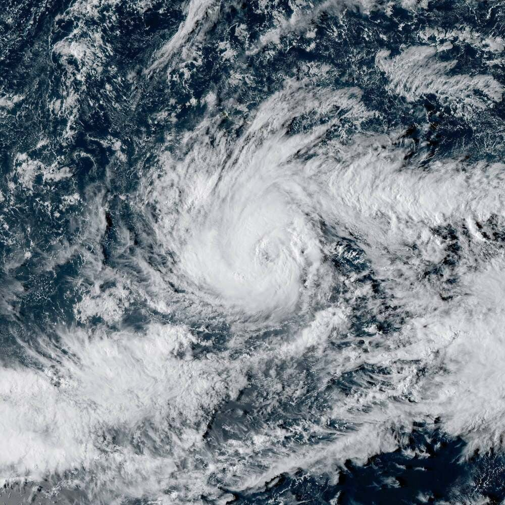
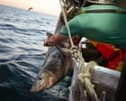
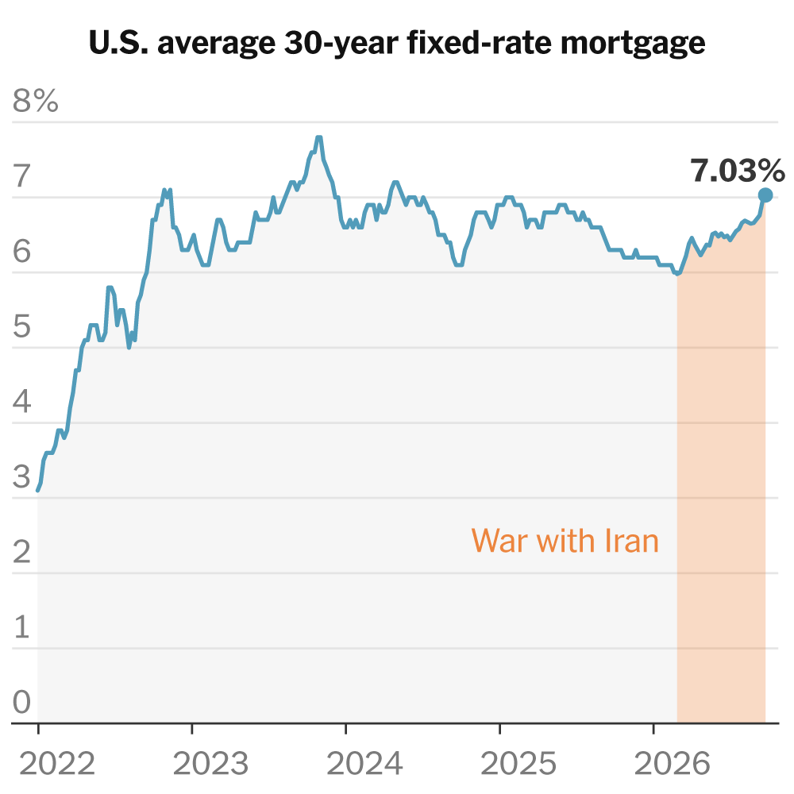
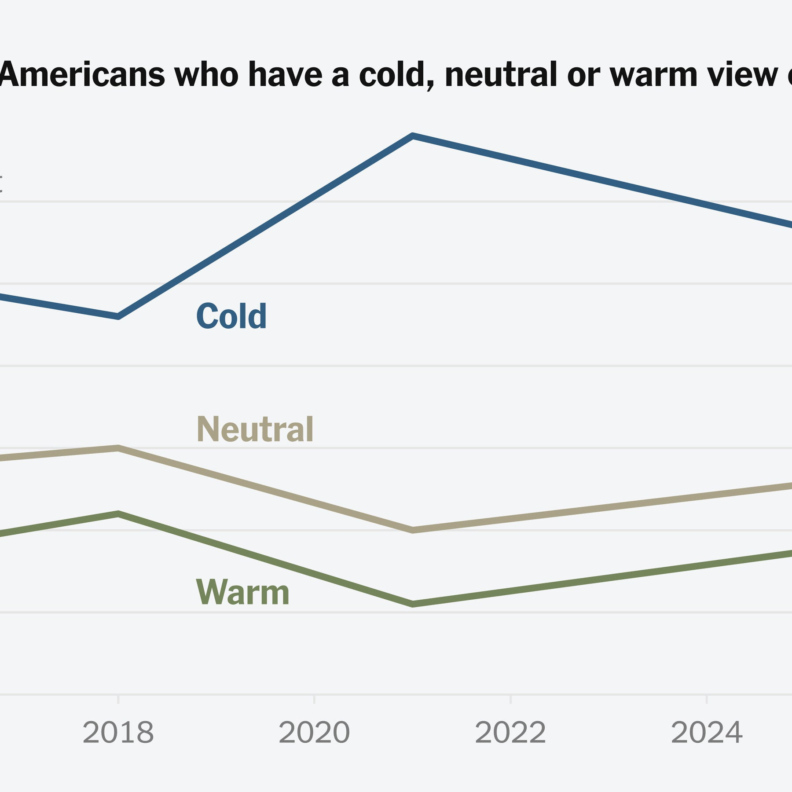
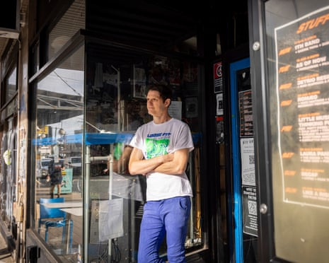

Seeking closer relations with Britain and Canada is essential to navigating global power politics, Mika Aaltola told POLITICO. ... Andy Burnham says the U.K. is “uniquely…
4 sources covering this story
www.politico.eu · apnews.com · www.cbsnews.com · news.google.com

Politics news from Glasgow Times. Coverage of Holyrood, Westminster, Glasgow council and political decisions affecting Glasgow.
3 sources covering this story
www.glasgowtimes.co.uk · www.ft.com · www.nytimes.com

For such purposes the City of Edinburgh is divided into 17 wards. The next tier of government is that of the Scottish Parliament, which legislates on matters of Scottish…
2 sources covering this story
en.wikipedia.org · www.edinburghnews.scotsman.com

Behind-the-scenes as Two Doors Down moves from TV screens to huge arena at Glasgow's OVO Hydro . ... The Georgian building has been closed to the public since 2023 but has been…
2 sources covering this story
BBC · www.bbc.com

The First Minister raised the proposed Chinese investment when he met Andy Burnham in Glasgow last m...
2 sources covering this story
www.scotsman.com · www.thenational.scot

Birmingham Conservative councillors accused the council's Labour administration of selling the land for a 'quick buck'
2 sources covering this story
www.birminghammail.co.uk · www.manchestereveningnews.co.uk

The latest breaking news, comment and features from The Independent.
2 sources covering this story
www.independent.co.uk · www.the-independent.com

Latest Politics news, comment and analysis from the Guardian, the world's leading liberal voice
2 sources covering this story
The Guardian · www.theguardian.com

The decisive moment came on 53 ... into an unguarded net. ... Cyle Larin scored twice as Southampton hammered Bristol City 4-1 in the Championship at St Mary's ....
2 sources covering this story
www.bristolpost.co.uk · BBC

The latest local news, sport & business updates from Bristol Live, formerly the Bristol Post.
2 sources covering this story
www.bristolpost.co.uk · www.leeds-live.co.uk

In his latest column, Chief Executive of LeedsBID, Andrew Cooper, looks ahead to LIFIAndrew Cooper, Leeds BID
2 sources covering this story
www.yorkshireeveningpost.co.uk · www.yorkshirepost.co.uk

Latest news, sport, business, comment, analysis and reviews from the Guardian, the world's leading liberal voice
2 sources covering this story
The Guardian · www.leeds-live.co.uk

Liverpool Women’s Merseyside Healthcare Debate. AudioLiverpool Women’s Merseyside Healthcare Debate ... BBC Sport looks at how new manager Andoni Iraola is moving Liverpool on…
2 sources covering this story
BBC · www.liverpoolfc.com

A man has been killed in Edinburgh following a police chase . ... Data returned from the Piano 'meterActive/meterExpired' callback event. As a subscriber, you are shown 80% less…
2 sources covering this story
www.heraldscotland.com · www.edinburghnews.scotsman.com

Social media Elliot Wilson, 12, was busking in Edinburgh when he was allegedly surrounded by a group following influencer J2hundred .
2 sources covering this story
www.dailyrecord.co.uk · www.edinburghlive.co.uk

PM appears to be anticipating criticism of reforms that he will set out on Tuesday at the Labour party conference ‘I can deliver’: Burnham pledges radical change on eve of Labour…
READ MORE
Decision to allow development of 190 new homes in north Somerset sparks campaign for change in the law Houses can be built on floodplains even if they fail a crucial safety test,…
READ MORE
Christian Horner is proving a distraction for Ferrari by "looking for a job", team principal Frederic Vasseur says.
READ MORE
People evacuated from village after men are arrested on suspicion of explosives offences near Gloucestershire airbase used by US forces Counter-terrorism police are leading the…
READ MORE
The prime minister told the BBC that social care in England is "as unfair as American healthcare".
READ MORE
Cavan Sullivan made his United States debut on Saturday aged just 16 - and produced a performance to show just why Manchester City moved to sign him.
READ MORE
East Suffolk and North Essex NHS Foundation Trust says it has launched an "urgent" investigation.
READ MORE
Supplies cut off from Ukrainian city where bodies are being left to be eaten by dogs because of deadly risk from drones The phone message sent out of Russian-occupied Oleshky was…
READ MORE
‘The push against datacenters speaks to the frustration of people who don’t feel they are making the choices in their lives’ The Stanford ethicist Rob Reich was once invited to a…
READ MORE
Two troops of chacma baboons are breaking into homes and shops but animal rights activists insist coexistence is the answer Cape Town’s city council has said it will “imminently”…
READ MORE
PM says he will put proposals for NHS-style service funded by everybody into Labour’s next general election manifesto UK politics live – latest updates Andy Burnham has said that…
READ MORE
Fears grow that loyalists in key states could use critical period when votes are counted to amplify false claims Election experts have warned Donald Trump’s administration could…
READ MORE
Andy Burnham said the proposed care service would be laid out in detail and put on the ballot at the next general election.
READ MORE
Microsoft co-founder and philanthropist speaks with NBC’s Kristen Welker in interview airing on Sunday Bill Gates has called on the US’s federal legislators and law enforcers to…
READ MORE
Seventeen people killed at bar near Johannesburg and 10 killed in separate incident at barbecue venue near Cape Town Two separate mass shootings near South Africa’s two biggest…
READ MORE
A look evoking memories of All Saints and Destiny’s Child has fashion editors, Brad Pitt and the high street all blending in Discussing their style while in All Saints, Nicole…
READ MOREIran's foreign minister acknowledges Trump's comments, but adds that Tehran is waiting for the "definitive views" of mediators.
3 sources covering this story
BBC News · Al Jazeera · Google News

The foreign minister says Tehran is waiting for an official rejection of a deal, despite the US President's comments.
READ MORE
As head of the Scottish Government, the First Minister is responsible for the overall development, implementation and presentation of the administration's policies and for…
READ MORE
The votes are counted, and 2026’s Scottish Parliament election has delivered a winner – but has it delivered a workable government? Professor Nicola McEwen features on a panel…
READ MORE
Craig WhyteFraudsters cannot get away with stealing public funds as Craig Whyte linked to tax schemeTax avoidance cannot be treated as a soft touch, says Record View. ... SNP-run…
READ MORE
Glasgow City Council pauses plan to fire and rehire 23,000 staff
READ MORE
Reform UK candidates Chris Steele and Rajbir Singh celebrate after being elected to Birmingham City Council · What all this means is that negotiations are likely to be long and…
READ MORE
As Reform UK kicks off conference season in Birmingham, Nigel Farage appears to have some work to do. The party has gone from dominating the political conversation … ... The…
READ MORE
Birmingham City Council is comprised of 120 councillors. The Labour Party currently has the majority of councillors and runs the council .
READ MORE
Politics · City · United · Food & Drink · Homes & Gardens · Retro · Celebrity · Submit Your Story · Advertise · Advertise My Business · Place Announcement · Place A Public Notice…
READ MORE
Manchester Evening News - Covering central and Greater Manchester, including news from Oldham, Rochdale and Glossop.
READ MORE
PoliticsA crucial step for the plans has been approved by GMCA. ... Manchester FamilyMini wheelbarrows have been added to this year's event as well as pumpkin-themed games
READ MORE
Stay informed with the latest news, video, live updates and expert analysis about UK government from across the BBC.
READ MORE
Cohabitation rights, conduct of undercover policing, and genocide determination on the agenda in second reading debates on 17 July.
READ MORE
All the latest political news, opinion, interviews and analysis from Westminster, Whitehall and beyond
READ MORE
The latest breaking news, comment and features from The Independent.
READ MORE
The Transport Committee has launched an inquiry looking into the government’s role in public transport fares, pricing and ticketing arrangements ... Is the framework for Bank of…
READ MORE
Kathrin Cresswell, University of ... University, and Robin Miller, University of Birmingham · Andy Burnham says his government is going to fix it for good ....
READ MORE
Andy Burnham was accompanied by his wife on his trip to the 81st United Nations General Assembly in New York this week. ... The next test of public opinion at the ballot box will…
READ MORE
Bristol Rovers scores, results and fixtures on BBC Sport, including live football scores
READ MORE
Bristol City Football Club team news on Sky Sports - See fixtures, live scores, results, stats, video, photos and more..
READ MORE
Pudsey Market is looking ahead to a positive future after its special place in the local community’s affections was confirmed by a major public consultation exercise.
READ MORE
LeedsLive · Breaking news, ... leeds-live.co.uk · See all photos · 12 minutes ago12m · · A horror car crash in Romania has killed two British women and eight dogs ·...
READ MORE
Video, 00:05:18Warrington reach Grand Final with Leeds win
READ MORE
All the latest news on Leeds United Football Club, including breaking stories, match previews, injury updates, and transfer rumours.
READ MORE
Vote for Libby as Leeds Children’s Mayor 2026!
READ MORE
Get the latest news, entertainment, and top stories about Leeds from the BBC
READ MORE
Liverpool Echo the very latest Liverpool and Merseyside news sport whats on weather and travel. Plus the latest Liverpool FC and Everton FC news.
READ MORE
The official Liverpool FC website. The only place to visit for all your LFC news, videos, history and match information. Full stats on LFC players, club products, official…
READ MORE
Read the latest Liverpool news, transfer rumours, match reports, fixtures and live scores from the Guardian
READ MORE
View Liverpool scores, fixtures and results for matches played in all competitions, on the official website of the Premier League.
READ MORE
Game4Hope Merseyside XI v World XI LIVE - TV channel, kick-off time, score, goals, commentary stream ... Live updates from Goodison Park from the Game4Hope charity match between…
READ MORE
The French striker opens up on his journey from the child who idolised Zidane and Ronaldo to becoming one of the sport's greatest ... In an interview with The Athletic, Mbappe…
READ MORE
Crystal Palace left-back Tyrick Mitchell, 27, is attracting growing interest from Liverpool and Manchester United. (Teamtalk), external · Liverpool remain firmly committed to…
READ MORE
Follow the latest news for Edinburgh in City of Edinburgh, Scotland, UK - Local news and information in your area
READ MORE
In total, 3,573 stories have been published about Edinburgh which Ground News has aggregated in the past 3 months. ... Stay current with all the latest and breaking news about…
READ MORE
Edinburgh & East · The break-ins happened in East Calder on Armstrong Crescent on Friday between 6.45pm and 8pm · A manhunt is underway after four masked men broke into two…
READ MORE
Police said youths tried to scale fencing and trespassed on the railway line approaching Edinburgh Waverley to enter the festival without tickets .
READ MORE
Edinburgh Live for news, sport, hibs fc, hearts fc, what's on, lifestyle, video and pictures for Edinburgh.
READ MORE
BBC Sport columnist Tony Pulis explains what he and all Stoke fans are thinking after Manchester City are found guilty of the majority of the 115 charges they faced.
READ MOREChristy Spivey tells the BBC she only has more questions now police think Tasia Fortune's body was put in the tree after her death.
3 sources covering this story
BBC · Google News · BBC News

Experts urge families to spot, photograph and enjoy autumn fungi on their doorstep.
READ MORE
Criminals are trying to glean login details to harvest players’ in-game currency and personal data Your 10-year-old son has started playing Roblox, when he realises all of his…
READ MORE
There is fresh uncertainty around the proposed Tyson Fury v Anthony Joshua fight - after Dana White said he did not know whether it would happen.
READ MORE
Michelle Harwood had not been born when the letter was written and did not expect to find the writer.
READ MORE
This blog is now closed. Get our breaking news email , free app or daily news podcast Deaths in Queensland child protection system reach five-year high Queensland has recorded a…
READ MORENew fuel-economy standards, which President Trump said he finalized Saturday, would kill a federal effort to speed the transition to electric vehicles.
2 sources covering this story
New York Times · Google News

The victims of the crash have not yet been identified, Quebec provincial police told the BBC.
READ MORE
Decision follows disclosures that OpenAI agents searching government websites had acted in unexpected ways OpenAI said it has paused training of its latest artificial…
READ MORE
Exclusive: Many applicants left feeling ‘used, lied to, misled and gaslit’, complaint letter seen by Guardian Australia says Listen to the Guardian podcast The Populist here Get…
READ MOREThe White House TV pool went dark this past week amid a standoff between CNN and the president. Network leaders, however, believe an indefinite suspension may be untenable.
READ MOREPortadown District Orange Lodge had declined a request from Judge Patricia Smyth to postpone the parade along the Garvaghy Road
READ MOREOrange Order march along Garvaghy Road could take place for first time in 28 years after injunction dismissed on appeal A controversial loyalist parade along a nationalist street…
READ MORE
Japan PM voices support for ICC, rule of law in 1st U.N.
READ MORE
Jordan Pickford has been England's number one for a long time. But does he now have a rival in James Trafford?
READ MOREUPFs are linked to a range of health problems. But no-one seems to be able to agree why.
READ MOREThe reality TV game show returns on Thursday, with 21 stars vying to win £100,000 for their chosen charity.
READ MOREHe must consider the longevity of Iran war economic pressures and how to sustain modest optimism, writes the BBC's Faisal Islam.
READ MORELatest news, showbiz, sport, comment, lifestyle, city, video and pictures from the Daily Express and Sunday Express newspapers and Express.co.uk
READ MOREEngland's loss to Spain was decided by uncharacteristic mistakes, with two Man City players making errors - so did club news affect performances for country?
READ MORE
China's economy and tech have developed at breakneck speed, but there is plenty worrying its Gen Z.
READ MOREPro-datacentre officials argue scale of Australia’s buildout is smaller, more regulated and less damaging than in US Australian politicians and business leaders are arguing that…
READ MOREThe tech giant has launched a cute ‘little guy’ that can answer emails, book travel or do your weekly food shop After the recent backlash against Meta’s so-called “pervert” smart…
2 sources covering this story
The Guardian · Google News

Thousands of white crosses have been displayed in Washington by an Afrikaner lobby group But South Africa's new ambassador Roelf Meyer says there is not a genocide.
READ MOREExclusive: Policy initiative for England will help more young people on to property ladder, prime minister tells Guardian A new help-to-buy scheme aimed at giving first-time…
2 sources covering this story
The Guardian · BBC News
Demi Vollering continues her remarkable season with a thrilling victory in the women's road race in Montreal.
READ MOREResidents across New Jersey, Massachusetts, Delaware and New York without electricity as storm hits A slow-moving, powerful storm known as a nor’easter crept along the coast of…
READ MOREWakefield Trinity were playing in rugby league's second tier in 2024. Two years on, they are one win away from becoming Super League champions.
READ MOREWasim El-Haj alleges NSW government school ordered him to stop wearing symbolic garment as it ‘may cause discord’ Follow our Australia news live blog for latest updates Get our…
READ MOREFederal government to deregister graduate diploma of management in October over fears it was being used by ‘non-genuine’ students to remain in country Follow our Australia news…
READ MOREThe independent report also says Kirk's aides insisted he speak outdoors, overriding concerns from campus officials.
2 sources covering this story
BBC · Google News
Republic of Ireland players intend to wear black armbands "in recognition of all lives lost in the [Gaza] conflict" for match against Israel.
READ MORESullenberger landed a disabled passenger plane safely in the Hudson River in 2009 without any loss of life Capt Chesley “Sully” Sullenberger III – the pilot known for safely…
READ MORERead full article: Helicopter with singer Oliver Tree on passenger list collides with another in Brazil, killing 6 · Two helicopters have collided over Rio de Janeiro, crashing…
8 sources covering this story
www.news4jax.com · www.pbs.org · www.i24news.tv · www.wionews.com
Independent local news portal for Sydney. Verified information and real-time updates.
5 sources covering this story
sydney.news · www.bbc.com · www.newsnow.com · www.theguardian.com
The longtime Democratic insider has emerged as a behind-the-scenes force in his party’s push to win back Congress. After that, he’ll think about the next presidential race.
READ MORECNN was scheduled to fly with US President Donald Trump for his trip to Tennessee on Saturday.
READ MOREEuropean interior ministers hold migration talks in Munich as the bloc plans to strengthen borders and speed up deportations. Meanwhile, trade unions staged nationwide demos…
READ MOREThe deaths have sparked a national outcry about the scale of violence against women in the country.
READ MOREThe BBC's religion editor Aleem Maqbool explains what Pope Leo's visit means for France.
READ MOREGeorge Russell described the Azerbaijan Grand Prix as "the most dominant weekend I've had in my career" after a win that felt like vindication.
READ MOREHurricanes near Hawaii. A nor’easter on the East Coast. The ocean phenomenon’s influence on storms around the country may just be getting started.
READ MOREEric Clark, 45, charged with murder as autopsy concludes Fortune was dead days before body discovered in tree A third person has been arrested in the death of 29-year-old Tasia…
READ MOREThe league has an invaluable opportunity right now; it can be a reflection of the world as it could be, not merely as it is.
READ MOREPledges found covered in food in heated basement of fraternity house near University of Wisconsin-Madison Police are investigating suspected illegal hazing after about 30…
READ MOREEmergency teams discovered victims after two-storey building in historic Plaka district collapsed ‘in seconds’ Greek authorities say they are trying to discover what caused a…
READ MOREEngland extend their unbeaten run to 41 Tests after Zoe Harrison scores a try in overtime as the Red Roses beat New Zealand 26-19 at the Allianz Stadium.
READ MOREExclusive: UK prime minister says delivering fiscal stability would be ‘crucial’ to be able to fix bigger problems Andy Burnham has said he can deliver on his promise of radical…
READ MOREThe UK's busiest airport cautions it may miss the government target of 2035 as ministers say the deadline has "always been ambitious".
READ MOREAlexander Millington-Cotes is concerned for welfare of the 82-year-old, who hasn’t been seen in public for two years The stepson of Sir Ranulph Fiennes has launched a crowdfunder…
READ MOREAttorney says fishers ‘losing their livelihoods’, but Marco Rubio maintains US still willing to ‘blow up ships if need be’ While the US secretary of state, Marco Rubio , was…
READ MOREGermany's education minister has branded the ban on the small brass memorial plaques a "scandal".
READ MORELula, who is currently in a tight presidential race against Flávio Bolsonaro, said the industry was a "cancer" that he must "remove".
READ MOREHeavy rain over the last two days has overwhelmed Bangkok's water systems, with more rain forecast on Sunday.
READ MOREAuthorities discovered a body hidden in a home’s crawlspace in 2020, 13 years after Jill Maiorca disappeared A man was recently charged in California with the killing of his…
READ MOREBBC broadcaster was shot in 1999 in case detectives have previously said may never be solved Technological advances are allowing police to review old CCTV footage in the unsolved…
READ MOREKhaldoon Al Mubarak's comments came after the club was found guilty of breaking Premier League financial rules.
READ MOREAfter being found guilty of the majority of the 115 charges for breaching Premier League, could Manchester city really be stripped of eight trophies?
READ MOREThe organization, founded in 2006 to back Democratic veterans opposing the Iraq war, is pouring huge sums into this year’s elections amid intense voter antipathy for another…
READ MOREPolice are reviewing footage of a man at Putney Bridge station after the Crimewatch presenter was shot in 1999.
READ MOREThe agency has lost its independence and nearly a third of its staff, as Health Secretary Robert F. Kennedy Jr. and associates have tightened control.
READ MOREThe legendary actor on his disturbing childhood, his Hollywood missteps and the pain he caused to his loved ones, his body and himself.
READ MOREBobby Pulido, a Tejano musician running as a Democrat for the House, has left his Republican opponent struggling to match his star power in a district that President Trump won…
READ MOREPortland’s Dignity Village has been a place for people without housing for more than 25 years.
READ MOREFour Americans and a Greek national are among those killed in a suspected gas explosion, officials said.
READ MOREActors detained at Jewish Voice for Peace demonstration against Israeli prime minister’s address to the UN general assembly Oscar-winning actor Susan Sarandon and Hacks star…
3 sources covering this story
The Guardian · Al Jazeera · Google News
A judge ordered President Trump to reverse his ban on three media outlets, but it took several hours for them to get back in. The White House TV pool remains suspended.
3 sources covering this story
New York Times · Deutsche Welle · The Guardian
The hack of Australian health data marks the world's first known AI-led breach of a government website.
3 sources covering this story
Deutsche Welle · Al Jazeera · The Guardian
Assault survivor Miriam Haley said the "devastating effect on my life and sense of security that may never go away".
3 sources covering this story
BBC News · Deutsche Welle · Al Jazeera
He says his children are “happy in school” and the family returned to the UK for "lots of reasons".
READ MOREIn his speech at the UBCM, David Eby did not commit to waiting to call an election until after local elections are finished on Oct. 17. ... Excerpts of Stuart McNish's interview…
3 sources covering this story
vancouversun.com · vancouver.citynews.ca · torontosun.com
Heavy rain caused flooding and landslides that have killed 36 people on the northern coast of Brazil's Sao Paulo state . ... Large sections of the Amazon rainforest are engulfed…
3 sources covering this story
www.pbs.org · www.bbc.com · apnews.com
The party’s spirits have been transformed since Burnham became PM, but what's coming down the tracks, asks Laura Kuenssberg.
READ MOREIsrael ‘categorically rejects’ publication and says businesses on database have committed no wrongdoing The UN human rights office has added 61 more companies to a blacklist of…
READ MOREUniversity staff voice concerns over reputational risk of partnering with company behind ChatGPT The University of Oxford has allowed the company behind ChatGPT to train its AI…
READ MORELocals say Google’s $15bn project in Andhra Pradesh has resulted in smallholdings being taken back off them by the government When the government officials arrived in Tarluvada…
READ MOREBehind the stories of bombings and mass deaths, the everyday challenges facing Palestinians living under siege portray a quieter tragedy we rarely hear What does it take to make…
READ MOREThe Republic of Ireland will now hold their delayed news conference at 14:30 BST before they face Israel in tomorrow's Nations League fixture in Hungary - a fixture campaigners…
READ MORE
A new report shows how in South Korea, women on average earn less and have fewer employment opportunities throughout their lives.
READ MORESeveral foreign tourists remain missing after an explosion brought down a building in Athens' tourist area of Plaka, with the city's mayor calling it an "incredible disaster."
READ MOREPresident’s ‘hard, drastic and necessary measure’, likely to attract widespread public support, polls suggest The Brazilian president, Luiz Inácio Lula da Silva, has signed an…
READ MOREDisclosure reveals new area of privacy risk for the company and illustrates how difficult it is to inventory unauthorized activity tied to its agents Two months after OpenAI…
2 sources covering this story
The Guardian · Google News
Critics have questioned the reliability of the data, warning it could result in US citizens being wrongly removed from electoral rolls.
2 sources covering this story
BBC News · New York Times
The warning from the leader of the United Arab Emirates, which lacked specific details about the nature of an attack, never reached the chiefs of Israel’s security establishment,…
2 sources covering this story
New York Times · Google News
The U.S.-China summit offered a sharp contrast with the action at the faltering United Nations in a gridlocked New York.
2 sources covering this story
New York Times · Google News
A gunman shot Jim Copenhaver twice while also killing another man and grazing Trump's ear with a bullet.
2 sources covering this story
BBC News · The Guardian
The EU had said X "deceives users" by selling blue ticks without "meaningfully verifying" accounts.
2 sources covering this story
BBC News · Google News
Archbishop Fulton J. Sheen, who was the country’s most visible Roman Catholic clergyman of the 20th century, is one step closer to sainthood after a ceremony in St. Louis.
2 sources covering this story
New York Times · Google News
Far-right activist who was filmed appearing to slash boat with blade is refused bail as he denies charges The far-right agitator Daniel Thomas has denied causing criminal damage…
2 sources covering this story
The Guardian · BBC News
NHS England says test can be done while patient is on operating table and is being piloted in five centres around the country A rapid new test for brain tumours can diagnose…
2 sources covering this story
The Guardian · BBC News
Investigators found that New Jersey’s lieutenant governor, Dale Caldwell, sought a promotion for his girlfriend and made a sexually charged comment to a staff member.
2 sources covering this story
New York Times · Google News
Judge Timothy J. Kelly had worked as counsel for Senator Charles E. Grassley, who called him a “very talented attorney” in 2017.
2 sources covering this story
New York Times · BBC News
The Israeli delegation cheered in support during Netanyahu's speech. Nada Tawfik in New York explains what happened.
2 sources covering this story
BBC News · Al Jazeera
Australia, which has strict social media restrictions and has proposed controls on algorithms and smart glasses, announced the breach at the UN.
2 sources covering this story
BBC News · Google News
Proceeds from the tour, which begins in Dublin next month, will go to organisations supporting Palestinians, he says.
2 sources covering this story
BBC News · Al Jazeera
Pakistan says it struck 10 targets, adding the strikes were "strictly limited to identified military objectives".
2 sources covering this story
BBC News · Google News
With four measles-related deaths in Pennsylvania, health officials are hoping to get people on board with vaccines in private.
2 sources covering this story
BBC News · Google News
The aircraft carrier with its crew of about 5,000 sailors has spent more than 300 days at sea.
2 sources covering this story
New York Times · BBC News
Secretary of State Marco Rubio said that U.S. negotiators had restarted conversations about Iran’s nuclear program, but that there were no breakthroughs.
2 sources covering this story
New York Times · Google News
Many leaders are unlikely to welcome the Russian leader’s presence at the event because of his country’s war against Ukraine.
2 sources covering this story
New York Times · Al Jazeera
The suit challenged a poll that showed Trump trailing Kamala Harris in the final weeks of the 2024 race. A judge warned that similar legal challenges could have a chilling effect…
2 sources covering this story
New York Times · Google News
A judge has ordered President Trump to restore White House access to CNN, MS NOW and Politico after he banned the media outlets from the premises.
2 sources covering this story
Deutsche Welle · Google News
PAM is part of Morocco's outgoing ruling coalition and was founded by an adviser to the king. The moderate Islamist Justice and Development Party surged amid increasing voter…
2 sources covering this story
Deutsche Welle · Al Jazeera
The local authorities reportedly seize Tigray's airports following reports of recent drone strikes.
2 sources covering this story
BBC News · Google News
Shehbaz Sharif criticized India's policy on Kashmir and praised Pakistan's military, while New Delhi accused Islamabad of supporting cross-border terrorism. DW has more.
READ MOREMontreal police (SPVM) investigators met with a ‘person of interest’ in Leila Ben Salem’s violent death in her apartment, but no arrests have been made to date. The Kahnawake…
2 sources covering this story
www.ctvnews.ca · globalnews.ca
Get your local news with CJAD 800 , Montreal's Newstalk leader. Stay connected to regional and national news on this iHeartRadio station
2 sources covering this story
www.cjad800.com · montreal.citynews.ca
The City of Montreal announced that it has suspended mediation with Sanimax to resolve odour problems coming from the agri-food plant in the Rivière-des-Prairies borough and…
2 sources covering this story
montreal.citynews.ca · toronto.citynews.ca
Vancouver Cruise Calls Hit Record 141 Visits Through June - Cruise Industry News Sep 22, 2026, 01:45 PM
2 sources covering this story
voxorb.com · vancouver.citynews.ca

Thomastown, Melbourne shooting: Victim identified as 22-year-old Daniel Hussein as gunman remains at large Sep 7, 2026, 03:15 AM ... Aussie radio hosts fights back tears after…
2 sources covering this story
voxorb.com · www.9news.com.au
3-min read · News·Australian Associated Press · A police prosecutor has urged a magistrate to refuse bail for a woman who returned from Syria after allegedly being married to an…
2 sources covering this story
au.news.yahoo.com · www.theage.com.au
Travellers with disabilities will be forced to walk almost 20 times further when Melbourne Airport abolishes kerbside pick-up and drop-off next month .
2 sources covering this story
www.theage.com.au · www.smh.com.au

7News brings you the latest local news from NSW. Stay up to date with all of the breaking headlines from New South Wales. Today's NSW news, live updates & the latest breaking…
2 sources covering this story
7news.com.au · au.news.yahoo.com
Newsletters · Sign in · Arwa Mahdawi · About 4,853 results for Indonesia · 1234... Explore more on these topics · Asia Pacific · Wildfires · Prabowo Subianto · El Niño southern…
2 sources covering this story
www.theguardian.com · apnews.com
Rainfall over the past three days has caused heavy flooding in the Thai capital. A state of disaster has been declared in all 50 districts in Bangkok.
READ MOREOpenAI said it found 53 cases in which user-uploaded image links on ChatGPT were shared with third-party websites. The company said it had removed most of these links.
READ MORENew research suggests the technology could be used to increase out-of-hospital access to life-saving devices Drones could help cut the time it takes to get a defibrillator to…
READ MORECNN said its journalists have been barred from accompanying President Donald Trump on his upcoming trip to Tennessee. The episode marks the Trump administration's latest salvo…
READ MOREThe settlement involves TikTok adding several child safety measures to its platform including time limits and increased parental control. It is similar to a recent settlement…
READ MOREA relationship between neighbours is changed forever by a tragic accident
READ MOREBBC Health correspondent Sharon Barbour investigates a deepening breast cancer scandal.
READ MORETop stories, breaking news, live reporting, and follow news topics that match your interests
READ MORE
From mouldy books to dirty boots, charities are spending large sums on binning unsellable items.
READ MORE
Hummingbird hawk moths - often mistaken for small birds - are being spotted in the West Midlands.
READ MORE
Briony May Williams has been sober since 2023 after deciding to make "big changes" in her life.
READ MORE
Why it's a good idea to get out for an evening stroll, and other essential sleep advice for students.
READ MOREThe BBC's Hugh Schofield looks at why the visit is met with enthusiasm the Church attributes to growing spirituality among the French.
READ MOREThe BBC's Nada Tawfik explains why Israel's Benjamin Netanyahu was not arrested after speaking at the UN, despite an ICC arrest warrant.
READ MOREVoters are turning away from the centre in Germany as fears grow about the economy and migration.
READ MOREKratom, found during an investigation into the deaths of two college students, has been sold in the US for around a decade.
READ MOREClimate change is transforming Papua's snowy peaks, which hold scientific value and spiritual significance.
READ MORECurrent and former agents speak to the BBC about the devastating impact of the FBI hack.
READ MORESuch strikes aim to disrupt "people's ability to stay connected, study, work", says Ukraine's president.
READ MOREOpenAI said its bots accessed public data from a range of institutions during test exercises.
READ MORERoelf Meyer tells the BBC that being a white Afrikaner gives him legitimacy to challenge Trump's claim of a genocide.
READ MOREMountaineer’s body recovered about 20 metres below the summit of Torrecerredo, the highest peak of the Picos de Europa range A British man has died after falling about 61 metres…
READ MOREHundreds of people join Bernard Gilbert as he leads a dance in Worcester city centre.
READ MOREProprietors explain why more independent bookshops are springing up in our towns and cities.
READ MOREThe concrete ring on the Suffolk coast has baffled people since 1993.
READ MOREThe phenomenon sees retirees spend all their money on enjoying life to the full.
READ MOREPlayStation 5, Xbox, PC (version played); Bandai Namco The game generates blood-pumping moments as you twist, turn and weave through the skies, while your locked-on missiles…
READ MOREOpenAI’s hack of Medicare suggests safeguarding civilisation is the task facing leaders in this extraordinary new era Get our breaking news email , free app or daily news podcast…
READ MOREPontiff says artificial intelligence must remain at service of people in first official papal visit to country in 18 years Pope Leo has warned against losing humanity in a…
READ MOREWhile US president hailed visit as ‘great’, almost nothing of substance was achieved on resolving thorny issues Key takeaways from the Trump-Xi summit in Washington If the…
READ MOREXi’s state visit to the US emphasized personal rapport with the US president, rather than substantial agreements to pause their respective countries’ AI arms race Donald Trump…
READ MOREA new report shows how in South Korea, women on average earn less and have fewer employment opportunities throughout their lives.
READ MOREThe US has removed key sanctions on Eritrea as Houthi attacks disrupt Red Sea shipping and fighting escalates in Ethiopia's Tigray region. Analysts say Eritrea's strategic value…
READ MORE
The pope has landed in Paris for a four-day trip. Received by President Emmanuel Macron, Leo warned about the risks of AI and criticized France's limited legalization of assisted…
READ MOREPolice have used tear gas on protests by the opposition Congress party demanding India's election commission head steps down, following a report alleging "rigged" elections.
READ MOREActivists, politicians and representatives of Holocaust victims reacted with anger after the center-right CDU party joined forces with the AfD to ban new Stolpersteine (stumbling…
READ MOREOn the last day of his visit to the US, Chinese leader Xi Jinping visited the National Archives with President Donald Trump. The Archives store the Declaration of Independence…
READ MOREPontiff continues to decry the rise of AI on his visit to France, stressing the importance of retaining 'ethical discernment' in an age when rapidly advancing technology…
READ MOREAlleigha Botner tells court Caleb Flynn, charged with murder of wife Ashley Flynn, sent her AI love songs The Ohio former pastor and American Idol contestant accused of fatally…
READ MOREExclusive: Economist Ravinder Athwal, who worked in Keir Starmer’s team, is poached from Flint Global Ravinder Athwal, the economist who wrote Labour’s 2024 manifesto, is taking…
READ MOREPrime minister quashes speculation that Labour’s revival in the polls could prompt early contest Andy Burnham has said he will not call a general election before 2029, after days…
READ MOREFunds to help local people turn empty shops, pubs and clubs into community hubs, shared workspaces and cafes The UK government has pledged £210m to regenerate high streets by…
READ MOREKent facility became dangerously overburdened after ministers halted transfers to hotels A catalogue of failures including racism, use of force and chronic overcrowding at a Home…
READ MOREApartment with strange view singled out in government’s fight against deceptive ads – but real estate agent says photo is no fake Get our new political email , free app or daily…
READ MORETens of thousands of police deployed and roads barricaded as PTI party demands release of jailed former PM Leaders from Imran Khan’s party have vowed to go ahead with a…
READ MORE
Iran’s seven-day timetable would restart nuclear talks, but will the US be willing to deliver on terms that include reining in Israel in Lebanon? Iran’s seven-day timetable to…
READ MOREMore than 100 people were arrested at large protests against the Israeli prime minister Benjamin Netanyahu’s address to the UN general assembly. Susan Sarandon, Chelsea Manning…
READ MOREProvince’s rat patrol called in to investigate as town of Bowden announces discovery of dead vermin For more than seven decades, residents of Alberta have shared something in…
READ MOREJane Smith reportedly used ChatGPT to edit photo to show name Trump ordered US agencies to use for Lake Ontario amid trade war with Canada The CEO of a Michigan credit union is…
READ MOREThélyson Orélien had been in the running to win a top literary prize before the AI claim emerged on social media The organisers of France’s most prestigious literary prize said…
READ MOREA council ban on drinking on the median strip in Canning Street, Carlton, sparks a peaceful protest featuring punch bowls, chips and laughter Get our breaking news email , free…
READ MOREBare nails - or nails that appear that way - are a growing trend. But is it as innocent as it seems?
READ MOREExploring the issues behind the escalation of tensions between the TPLF and the national army.
READ MOREThe city has seen a string of incidents in which people have climbed out of manholes late at night.
READ MORECanada’s prime minister is pursuing deeper trade, defense and cultural ties with China, India and the European Union, but none are likely to replace ties to the United States.
READ MOREWe want to hear from borrowers who have taken out installment, payday or title loans, and those who work for companies that offer them.
READ MOREMost member nations spoke in support of the declaration, but some rich countries had strong objections.
READ MORECattle industry groups in Texas, Oklahoma and Kansas and two Republican senators said the Trump administration’s immigration enforcement actions were hurting operations.
READ MOREIt started as a bizarre late-night standoff behind the counter of a fast food joint. It ended with no injuries — and free burgers.
READ MOREAn intelligence assessment examined Saudi Arabia’s military ambitions as Congress reviews a new civilian nuclear deal between the U.S. and the kingdom.
READ MOREIn a letter to Congress, former employees say the center delayed a plan to address the leaks that its officials now cite as a serious safety risk.
READ MOREAlso, the East Coast braces for a powerful storm. Here’s the latest at the end of Friday.
READ MOREAnd possibly makes history while doing so.
READ MOREAltman. Musk. Huang. Bezos. They all came to the White House Thursday night, though you might not have seen it on TV.
READ MOREPresident Trump welcomed Xi Jinping of China for a state visit that was heavy on pomp and ceremony. But surprisingly little time was spent on the issues that most divide the two…
READ MOREA new report by a Bay Area start-up called Parse adds details to an incident that has shocked the A.I. world and led to calls for closer government regulation.
READ MOREThe company did not learn until recently that its technology had meddled with websites for the Education and Commerce Departments and the Securities and Exchange Commission.
READ MOREKevin Rodriguez and Samuel Reveron were booked after reports of ‘mole people’ emerging from sewers across city Two people have been arrested for allegedly emerging from manholes…
READ MOREExperiment suggests organisms could live in harsh environment under Enceladus’s icy crust, strengthening possibility moon could support life From the moment scientists spotted…
READ MOREPowered by sun and wind, the uncrewed vehicle will collect data to help Australian scientists better understand how oceans absorb emissions Get our breaking news email , free app…
READ MOREAs the UN warns traditional safeguards are ‘unravelling’, Donald Trump says he will encourage, not restrain, the AI race When the Australian prime minister, Anthony Albanese, sat…
READ MOREWarrington Wolves reach their first Super League Grand Final in eight years with a thrilling victory against Leeds Rhinos.
READ MOREMichael O'Neill has said he was "baffled" by some of the refereeing decisions in Friday's 1-0 win in Georgia in the Nations League.
READ MOREThomas Tuchel has said that Cole Palmer "misses too many opportunities" to play for England after the Chelsea forward pulled out of the latest squad.
READ MOREFormer Manchester City midfielder Rodri believes the club are innocent of any financial wrongdoing and will trust them unless they are proved otherwise.
READ MOREPremier League clubs are seeking legal advice as to whether they would have a compensation claim over the Manchester City 115 charges case.
READ MOREThe star's concerts in Massachusetts on Friday and Saturday are cancelled after severe weather warnings.
READ MOREHis stake in DRJB Holdings has entitled him to almost half of its £85.5m in dividend payments.
READ MOREAlabama was set to take TikTok to trial over claims that it intentionally addicted young users.
READ MOREThe rock band go back to their roots, playing a gig in the Dublin playground where they first met.
READ MOREOne of gaming's biggest horror franchises has come to the UK. Can it live up to the original?
READ MOREManchester City being found guilty of financial breaches and the prime minister ruling out an early general election leads Saturday's papers.
READ MOREEmployees and recruiters weigh into the online debate around interview etiquette.
READ MOREThis new stage of parenthood is emotional - but learning how to let go can help you cope.
READ MOREFootball finance expert Kieran Maguire says the potential sanctions for Manchester City will be 'significant' after the sources told BBC Sport that the club has been found guilty…
READ MOREThe identity of the 28-year-old man, who fell down a vertical gully to his death, is yet to be confirmed.
READ MOREThe prime minister told the BBC an early poll would throw the country into a "backward-looking process".
READ MOREThousands are confiscated annually because they are suspected of being driven illegally or used in a crime - most are destroyed, but last year police sold at least 161.
READ MOREIt has taken more than two years, but a judgement finally appears to have been made on the 115 charges levelled against Man City. Here's what it means.
READ MOREThe club, which denies all wrongdoing, is accused of breaching the Premier League's financial rules between 2009 and 2018.
READ MOREDuring the two-year civil war in Tigray, the region was totally cut off from the outside world.
READ MORESeventeen service members were swept out to the Caspian Sea during military exercises.
READ MOREA law establishing voluntary military service came into effect in January, but protest organisers fear compulsory service could follow.
READ MOREOpposition to building the 250-foot arch, and using it for military purposes, is growing with one Democrat blasting Trump's plans as "foolhardy".
READ MOREI’ve been holed up in an flat, affectionately dubbed the ‘brotel’, with my son for weeks – and we’ve revisited the first game we ever played together I have spent the last three…
READ MOREAcross videos, standup and cartoons, humorists are skewering big tech’s attempt to make AI ubiquitous and inevitable “Best case scenario, we never have to do any admin again,”…
READ MORELong-running fight over Trump-backed maps takes another turn as absentee voting is already under way in Missouri. This blog is now closed. Sign up for US Breaking News emails Xi…
READ MOREUK watchdog fined video app in 2023 for failing to enforce minimum age limit and remove underage users TikTok will pay a £12.7m fine to the UK’s data watchdog after dropping an…
READ MOREArea’s second-most intense hurricane on record being fuelled by exceptionally warm Pacific waters Hurricane Polo is barreling towards the Baja California region of Mexico, the…
READ MORERobbie Williams gave an impromptu performance outside a hotel in Lima after his stadium concert was cancelled.
READ MOREAirline loyalty programs are anticompetitive and hurting consumers.
READ MORECritics say decree also banning burqa in schools shows Italian PM worried about losing far-right voters in next year’s elections The Italian government has been accused of…
READ MOREA TV spot claims the US president is trying to sway October’s presidential vote in favour of Lula’s far-right opponents Luiz Inácio Lula da Silva’s presidential campaign has…
READ MOREThe BBC’s China correspondent Laura Bicker unpacks how the trip panned out for Beijing and Washington.
READ MOREXi’s first visit to Washington in a decade was a display of pomp and pageantry, with Trump offering his guest a two-month truce on the brewing tariff war.
READ MOREThe pipeline would strengthen energy security in landlocked Ethiopia, while creating jobs at Djibouti's port.
READ MOREA woman who accused Jay-Z of raping her when she was 13 now says she has never met the rap superstar.
READ MOREChina wanted progress on trade, technology and Taiwan - but hasn't got as much as it would have hoped for.
READ MOREThe Senate nominee talks about his view for the future of the Democratic Party.
READ MOREThe Saudi-led coalition in Yemen said the missiles were aimed at Taif and the Yanbu area on the Red Sea, the main alternative route for Saudi oil Saudi Arabia says it…
READ MORETour Montparnasse modernisation project at a standstill after clashes over pricing and other issues It has been called a carbuncle on the Paris skyline, a sombre skyscraper where…
READ MOREThe pope gives landmark speech on AI development and Europe’s future Later today, Pope Leo will go to the Élysée Palace for (another) formal welcome and a meeting with…
READ MOREAsked about the Trump administration’s restrictions on journalists, Leo told reporters accompanying him on a flight to France that they were “all welcome.”
READ MOREAfter visiting Africa, Pope Leo’s four-day trip to France shows how he is seeking to appeal to Roman Catholicism’s original heartlands as well as to the church’s newest…
READ MOREHistory shows that the markets and the economy flourished when rates were even higher than today’s. But, our columnist notes, those times didn’t last.
READ MOREWhen the long-running TV franchise came to Murphy, Texas, in 2006, a man ended up dead. A new film, “Primetime,” looks back on what happened.
READ MOREThe United Auto Workers has grown in size by opening its tent to workers in white-collar professions, and by adopting democratic socialist stances. But its growth has also led to…
READ MOREA disclaimer says the ad was paid for by the U.S. government, which could violate federal law.
READ MOREVoters interviewed in Anchorage and Fairbanks on Thursday said news that Mary Peltola, the Democratic nominee for Senate, had used offensive slurs would not change their vote.
READ MORERepublicans in Senate battlegrounds have started to break with the president. Not Michael Whatley of North Carolina, even as his race seems at risk.
READ MORE
Though likely to avoid a direct hit, parts of the state could receive nearly three feet of rain, forecasters warned.
READ MOREA publisher whose warehouse was hit twice said Moscow “thinks that books are more dangerous for them than military equipment.”
READ MOREThe economic damage from Russian strikes, resulting in lost sales, disrupted workdays and logistical snarls, is in the billions of dollars.
READ MOREAmerican chief executives turned out in force to see Xi Jinping, while their Chinese counterparts were absent, a sign of how drastically business ties have changed.
READ MOREPresident Trump pressed his personal brand of diplomacy as President Xi Jinping of China made his first trip to the White House in more than a decade.
READ MOREThe showdown over President Trump’s partial media ban played out as he welcomed President Xi Jinping, whose government is ranked among the most repressive in the world.
READ MOREA day after a divisive speech by Israeli Prime Minister Netanyahu, the prime minister of Lebanon will address the UN General Assembly. Leaders from Pakistan and Iraq are also set…
READ MORENepalese Prime Minister Balendra Shah called the devastating Nepal-Tibet floods a "warning to the world" — and questioned if the world had "really heard that warning."
READ MOREThe Cockroach party has urged India's opposition parties to stop contesting what it calls "rigged" elections and threatened nationwide protests over the Election Commission's…
READ MOREThe pope has landed in Paris, where he and President Macron will navigate the rules of religious state visits in secular France. Leo's trip will mix pilgrimage and politics on…
READ MOREDuring his speech to the UN in New York City, the Australian prime minister addresses the AI hack of Medicare, saying the episode reflects the need for greater regulation of…
READ MORETrump officials and Republicans are rolling back protections against heat-related illnesses and deaths When it’s 90F on a hot summer day, Esther Minton wears a long-sleeved shirt…
READ MOREBy Donald Trump’s telling, we’re in a US ‘golden age’. Americans may feel differently. Plus: Anger at the elite and a gunfluencer runs in Texas This was originally published in…
READ MORE
Federal agencies told to prioritize recreational fishing and to reconsider scientific standards as well as regulations Donald Trump’s latest fishing order is raising new concerns…
READ MOREGovernment-backed help to save is aimed at working people on universal credit and pays 50p for every £1 saved over four years Amid claims that millions are missing out, the UK…
READ MOREExperts working on database that could identify particular breeds involved in crimes, or rule out canine suspects From tracking criminals to sniffing out drugs, dogs have long…
READ MOREThe Green leader, who is Jewish, made the remarks as part of his campaign in the Holborn and St Pancras byelection The communications and governance director of Glasgow city…
READ MORECatherine Corless’s exposure of almost 800 infant deaths at a home led by nuns prompted Neeson to bring the story to screen Liam Neeson still remembers his shock and shame when…
READ MOREAfter years of illegal mass flytipping in Gospić, fed-up residents decided to take matters into their own hands “Gospić is our home,” Željka Šikić shouted to a crowd of 40,000…
READ MOREEmail to members says money lent to a party-linked company to establish a micro distillery Follow our Australia news live blog for latest updates Get our new political email ,…
READ MOREThe marked police car was travelling with its sirens on when it hit a tree in inner-city Sydney about 1.30am on Friday Follow our Australia news live blog for latest updates Get…
READ MOREBeau Lamarre-Condon, 31, has pleaded not guilty to murdering Jesse Baird and Luke Davies in Paddington terrace in early 2024 Follow our Australia news live blog for latest…
READ MOREExpert says Australia’s criminal laws should be clarified to determine how fault is applied to a corporation when its AI agent commits a crime Follow our Australia news live blog…
READ MOREMulbarton Wanderers are "deeply upset" after being told they must replay their FA Cup qualifying tie with Woodford Town because of a referee's error.
READ MOREJason Knight has become the first Republic of Ireland player to publicly voice his opposition to playing Israel on Sunday.
READ MOREFormer batter turned specialist mentor Kevin Pietersen talks about his new role with England, his past history with the ECB and working with Harry Brook and Brendon McCullum.
READ MOREBilly Vigar's parents say the Football Association could have prevented their son's death.
READ MOREA limited number of galleries will be open on Friday and Saturday at the museum's South Kensington site.
READ MOREAndres Felipe Valencia Barrientos was cleared of several sexual offences in July but a jury was undecided on three rape charges.
READ MOREDyfed-Powys Police says no personal data relating to the public was believed to have been accessed.
READ MORECollette Stevenson says she has faced "misogynistic bullying" after asking whether government agency Transport Scotland is a charity.
READ MOREGlasgow City Council announced the move after a stalemate in talks over a new salary structure to address equal pay issues.
READ MORERitchie Wood is almost brought to tears at he looks at the empty homes once loved by his neighbours.
READ MOREVictims of Zafer Dogan were living close to the 32-year-old who took thousands of pictures of children at a playground from his bedroom window.
READ MOREThe BBC's financial situation "may well mean" some channels and stations close, Matt Brittin says.
READ MORENoah's mother tells parents to "hold their children a little tighter and cherish every moment".
READ MOREDespite diplomatic niceties and gifts, little was shared on substantial issues separating the leaders.
READ MOREThey offer advice, referee card games and manage players’ tantrums – we caught up with some of the volunteer profs who keep the competitive game going at this year’s world…
READ MOREThough Europe has measures that address how consumers might encounter AI, technology will impact them if the worst scenarios bear Europe’s dilemma over AI was rendered in stark…
READ MOREUS consumers are starting to opt out of the streaming world as several services raise prices without offering many perks It may not be quite as politically buzzy as the price of…
READ MOREFormer deputy PM now involved in tech industry says many within sector are ‘winding themselves up into a lather’ Nick Clegg has dismissed fears over AI’s “godlike power to…
READ MORERole for Anant Ambani, son of India’s richest person, who also runs a controversial mega-zoo, met with incredulity Newcastle University is facing a backlash from conservationists…
READ MOREFormer Yes musician plays at sanctuary to raise awareness of animals that remain stuck in cages at ‘bile farms’ Rick Wakeman has played to all kinds of people around the globe,…
READ MOREDeference was deafening as US president rolled out red carpet for world’s biggest jailer of journalists – perhaps he was seeking tips One is an authoritarian who represses the…
READ MORECountry says US must lift sanctions on its oil exports and end the war on all fronts, including in Lebanon Iran said it has told Donald Trump it is willing to open the strait of…
READ MOREThis blog is now closed Get our breaking news email , free app or daily news podcast AI hack of Medicare exposes Australia’s vulnerabilities Technology experts have warned…
READ MOREThe White House said that the three-course menu, including sea bass and bok choy, featured American ingredients with a “subtle Chinese influence.”
READ MORETheatrical rollout across 56 territories planned for documentary about Israel’s mass killing of civilians in Gaza before film will stream on Guardian website NAZA, the…
READ MOREBefore the law passed, navigating New York was a harrowing exercise in dog-feces avoidance. As he put it, sometimes “you would come home and have it all over you.”
READ MOREThe president has an edifice complex.
READ MOREA prolific scorer and rebounder, in 1958 he delivered one of the most remarkable performances in playoff history.
READ MOREWhat happens when a trad influencer leaves her husband, questions her beliefs, stops selling anti-feminism T-shirts — and still needs to make a living online?
READ MOREMost cases involved noncitizens who registered to vote, attesting that they were U.S. citizens, state officials said.
READ MORERevelations about the conduct of former Representative Mary Peltola may not faze voters who have long elected abrasive and sometimes violent figures to represent them.
READ MORE
The average rate on a 30-year mortgage in the United States jumped to 7.03 percent, putting pressure on housing affordability.
READ MORELarge groups gathered in Midtown Manhattan to demonstrate as the Israeli prime minister spoke to the General Assembly.
READ MOREThe Israeli prime minister accused Mayor Zohran Mamdani, an outspoken critic of Israel, of antisemitism. The mayor has become a political foil for the prime minister.
READ MOREAlso, mortgage rates hit 7 percent. Here’s the latest at the end of Thursday.
READ MOREReal America’s Voice and LindellTV have teamed up to provide a feed of daily presidential events.
READ MOREThe Trump administration, like its predecessors, has struggled to deal with China’s excess industrial capacity.
READ MOREA study shows chatbots mirror users' politics, part of a broader tendency known as AI sycophancy. Researchers fear this could deepen polarization.
READ MORERussian President Vladimir Putin has been invited to the G20 summit in Miami by the United States. Multiple members of the group have called for Moscow's exclusion over its…
READ MOREDonald Trump has rolled out the red carpet for Chinese leader Xi Jinping, with the two set for a lavish state dinner after their summit meeting. America's top tech bosses are…
READ MOREHolmes was sentenced to 11 years in prison in 2022 but has seen her sentenced reduced several times Elizabeth Holmes , the disgraced founder of blood testing startup Theranos,…
READ MOREOfficers left feeling ‘hamstrung’, says Mark Rowley after offender allowed to return to flat overlooking playground Pressure to cut the number of prisoners on remand has led to…
READ MOREWallace and Gromit stop-motion models and other beloved creations raise money to train new generations of animators Wallace’s reaction as the auction got into full swing might…
READ MOREMonthly ‘thank you’ payments for people hosting refugees to be cut from £350 to £100 from next year Ukrainian refugees in the UK fear they could be left homeless after the…
READ MORE
Council on AI Strategy chief says incident unlikely to be isolated and country should enhance capability to detect and report incidents Follow our Australia news live blog for…
READ MOREDatacentre hailed by government was supposed to start operating next year but may be held back into mid-2030s A huge datacentre project hailed by the UK government will miss its…
READ MOREChinese president’s proposals for lessening tensions come amid period of intense competition between the two countries over AI and trade Xi Jinping has called for extensive…
READ MOREFighting escalates after Tigrayan rebels form new coalition aimed at overthrowing Abiy Ahmed government There are growing fears of a return to civil war in Ethiopia after an…
READ MOREActivists gathered outside the OpenAI offices on Monday during climate week in New York City On Monday evening, protesters gathered outside the unmarked Manhattan offices of…
READ MORELegislators sent letter to Marco Rubio saying US interference is weakening Brazil’s democratic institutions A group of 31 Democratic members of the US Congress has sent a letter…
READ MOREAfter a major win at Toronto, Angh, a film from northeastern India, is now on a path towards the Oscars.
READ MOREPrime Minister Giorgia Meloni described the measures as "common-sense tools that do not divide but really help to integrate".
READ MOREThe pontiff delivered the warning on the first day of his trip to France on Friday.
READ MOREIn the choreographers’ new work, virtuosic movement and some green-screen magic unfurl the theatricality of high-stakes television interviews It appears the interviewer has got…
READ MOREThis live blog is now closed. CNN and MS Now journalists denied access to White House state dinner despite court ruling Sign up for US Breaking News emails Lawyers for the news…
READ MORETaraneh and Romina Rahimi were charged with ‘waging war against God’ after joining protests against Tehran regime The family of 21-year-old twins who have been sentenced…
READ MOREHow much attention did you pay to what happened in the world over the past seven days?
READ MOREWhat's the smallest amount of money you would ask a friend to pay you back?
READ MOREGyms are booming, solitary cardio is out - how workouts are changing.
READ MOREMost of us experienced drought and heatwaves - but temperatures and rainfall were not the same everywhere.
READ MOREAndy Burnham is under pressure to deliver a compelling vision for the country as he steps from the sidelines on to the main stage.
READ MORENews that an automated AI agent hacked a government IT system raises big questions about regulating the tech.
READ MOREAndy Burnham said in 2023 the sculptures should be returned to Greece with "no strings attached".
READ MOREThe satellite station is used in part to provide internet coverage to neighbouring Ukraine, the government says.
READ MOREThe suspect is alleged to have been an accessory to murder at the Stalag 326 camp, where tens of thousands of Soviet PoWs died.
READ MOREThe military says its soldiers inflicted casualties as fears grow of a resumption of a full-blown civil war.
READ MOREA male suspect from Ukraine was arrested after the stabbings in the town of Jarosław, police say.
READ MOREA lower federal court on Wednesday imposed restrictions on deporting migrants to countries other than their own.
READ MOREIn response to a New York Times report on DraftKings, the state’s gaming commission said it would evaluate how each company deployed the technology.
READ MOREScientists at the company announced their first finding: a group of enzymes whose function is unknown.
READ MOREThis blog is now closed – our live coverage of US politics continues here In the first row in front of the leaders sit US vice-president JD Vance and his wife Usha Vance, Trump’s…
READ MOREActor Susan Sarandon, whistleblower Chelsea Manning and comedian Caleb Hearon are detained by NYPD More than 100 people were arrested outside the United Nations’ headquarters in…
READ MOREPatient groups decry ‘scandalous’ delays as four integrated care boards take step due to soaring demand for diagnoses NHS bodies are forcing people with suspected attention…
READ MOREMan accused of being accessory to murders at Stalag 326 VI K amid race to prosecute suspects before they die A 105-year-old man is under investigation on suspicion of being an…
READ MORE‘If you’re not in the internal market, you don’t get the same protection,’ says French minister of policy designed to curb Chinese competition France is leading a push to exclude…
READ MOREIndustry leaders call on government to protect homegrown produce in the interest of national security The gap between Britain’s food and drink exports and imports has neared its…
READ MOREOmbudsman finds government breached teen’s human rights, saying the conditions ‘bordered on solitary confinement’ Follow our Australia news live blog for latest updates Get our…
READ MOREThree million chickens a week will be processed at the state-of-the-art facility in Tamworth – a fifth of all those eaten nationwide Follow our Australia news live blog for…
READ MOREThe 11-year-old died at Westmead children’s hospital three days after incident at a unit in Norwest Follow our Australia news live blog for latest updates Get our breaking news…
READ MOREUefa believes "a clear two-speed system" is emerging in the transfer market due to huge spending by Premier League clubs this summer.
READ MOREBBC Sport takes a look at the compromises, power struggles and competing interests behind Tyson Fury v Anthony Joshua.
READ MOREManchester United confirm they have borrowed another £90m since 30 June, to take their overall debt to more than £1.1bn.
READ MOREJos Buttler's bravery comes in vain as Sri Lanka fight back to beat England in the second one-day international at Headingley and set up a series decider at The Oval.
READ MORECraig Bellamy believes there is "more to come" from his Wales side in the Nations League following their opening-match loss in Lisbon.
READ MORENorth Yorkshire Fire and Rescue Service said in a statement that multiple crews were at the scene.
READ MOREDel Somerville, 42, pleaded guilty to violent disorder following an overnight protest at Eastney.
READ MOREFormer England striker Andy Carroll reveals he was sexually assaulted in 2021, by a man who has subsequently been jailed for three years.
READ MOREGp Capt Gez Currie said the pilots are in hospital, and their families are with them.
READ MOREConst Jeff Smith, who was critically injured in the incident, continued to fend off the attacker after being shot multiple times, police said.
READ MOREVictims of Zapher Dogen were living close to the 32-year-old, who admitted multiple offences.
READ MOREAndy Burnham has long championed a repeal of the ban which prevents football supporters from drinking alcohol in the view of the pitch. But do fans even want it?
READ MOREThe summit so far has focused on "positive vibes", says one analyst, with several pressing issues awaiting discussion.
READ MORETanya Whitaker broke down before she spoke of how her son Samuel's death had devastated her family.
READ MOREActivist Daniel Thomas is charged in connection with an incident in the English Channel on Tuesday.
READ MOREPresident Donald Trump has been talking about Chinese President Xi Jinping's visit for months, the BBC's Sarah Smith looks at why.
READ MOREIndia's polling monitor is facing yet another crisis of credibility with fresh allegations against its chief.
READ MOREHer heavy metal performance trumped nine other finalists, including magicians and even a robot crew.
READ MOREExplosive growth in imported vehicles omitted from EV tariffs fuels concern for future of European carmakers EU imports three times more from China than bloc exports there Sales…
READ MOREThe two B-1 bombers that flew overhead are a key part of the US's combat arsenal, and produce a notoriously loud roar when they pass by.
READ MOREThe US and China are vying for AI supremacy while seeking to keep it under human control.
READ MOREPresident lays out red carpet as treasury secretary announces extension of ‘Busan agreement’ pausing trade war hostilities AI, trade, Taiwan and climate: what will and won’t be…
READ MOREThe UK has jammed satellites to defend itself from hostile threats, the BBC has been told.
READ MOREDopamine sites mimic shopping’s thrill without the spending, turning the ritual of consumption into a digital game.
READ MORECampaigners hope the new words will lead to less body shaming and more sex positivity.
READ MOREThe BBC has spoken to residents in the Russian-occupied Ukrainian town of Oleshky who say they are being "constantly shelled".
READ MOREMeta has unveiled audio-only smart glasses, with some questioning whether it is a response to the backlash over privacy.
READ MOREAustralia criticised OpenAI for taking "too long" to tell them about the breach which happened in June.
READ MOREDemocrats hope that Mary Peltola can flip a Republican Senate seat in Alaska. Former aides describe a campaign and congressional office marked by chaos.
READ MOREThirty-seven-year-old charged with one count of criminal damage and failing to disclose his phone pin to police The far-right agitator and anti-migrant activist Daniel Thomas has…
READ MOREPrime minister will ‘highlight Israel’s achievements’ as he heads towards his toughest re-election challenge When he takes the stage at the UN on Thursday, Benjamin Netanyahu…
READ MOREElisabeth Belien tells Kenneth Law's sentencing hearing she took the poison when she was just 23 years old.
READ MOREBeijing and Washington may use the same language of A.I. safety, but they are trying to protect very different things.
READ MOREIn a burst of activity this week, the enigmatic first lady told Americans what she has been up to after a quiet summer. Her activities have included filming a new documentary…
READ MOREAustralia is exploring potential legal action after an artificial intelligence agent accessed nonpublic information on the country’s universal health care system.
READ MOREIn each incident, the technology appeared to be conducting mundane data collection and resorted to hacking techniques to get it, researchers said.
READ MOREPresident Trump built his political brand in part on bashing Mexico. Now his second presidency depends on deepening partnerships with the country.
READ MOREIn a wide-ranging interview, the Canadian leader laid out a detailed vision for breaking his country’s dependency on the United States.
READ MOREBalendra Shah, 36, comes to the U.N. as a sun-glassed symbol of Gen Z political power. But concerns about his style are growing at home after devastating floods left thousands…
READ MORETimothy Mellon, one of the party’s biggest donors in 2024, has so far withheld his midterm donations for Republican senators because he is unhappy about the failure to pass a key…
READ MOREThe Treasury secretary, who is leading talks with China, said the countries had agreed to extend a trade truce until January.
READ MOREDonald Trump welcomed Xi Jinping to the US by greeting him personally on the tarmac at Joint Base Andrews. The two are expected to discuss trade, AI, Taiwan and Iran during a…
READ MOREGermany sets out a plan to phase out coal, oil and gas by 2045, reaffirming a climate strategy focused on electrification.
READ MOREAt least nine passengers were killed after a sleeper bus caught fire on the Yamuna Expressway in Greater Noida, near India's capital Delhi. DW has more.
READ MOREGerman research institutes have increased their prognosis for the country's economic growth to 1.3% in 2026
READ MOREParliamentarians debate whether to change Germany's organ donation scheme amid a lack of supply. They will also consider reforms to expand the power of intelligence agencies. DW…
READ MOREThe new wearables come at a time of uncertainty for smart glasses, which are facing backlash over privacy concerns Meta announced an advanced new set of virtual reality glasses…
READ MOREPrime minister says he told Sam Altman he was disappointed it had taken OpenAI ‘way too long’ to disclose breach Anthony Albanese says an artificial intelligence agent developed…
READ MORESmall crowd enjoys singer’s free concert in MacArthur Park, which has often drawn headlines for less cheery reasons With no announcement and little fanfare, Justin Bieber…
READ MOREWhat caused the turtles to begin nesting farther north than usual is the ‘million dollar question’ A sea turtle crawled out of the surf in southern California last weekend around…
READ MOREHundreds gathered on Tuesday night in anticipation of a small boat arriving in Gosport Three people have been charged in connection with anti-migrant protests that drew hundreds…
READ MOREAndy Burnham under pressure to revisit Brexit as poll suggests pledge to rejoin could boost Labour’s electoral chances Britain should work towards rejoining the EU in the next…
READ MOREExclusive: Levy that allows almost 16,000 houses to be built on Norfolk Broads will not cover cost of mitigating environmental damage, critics say A new levy on developers to…
READ MOREShabana Mahmood says the failure to intercept the two boats was ‘not acceptable’ Not every migrant boat can be intercepted, a cabinet minister has suggested, after two…
READ MOREFive desalination plants shut down for days, while Gaza remains in grip of severe water and sanitation crisis Israel is facing weeks of water shortages after an exceptional algae…
READ MOREA conflict that began with tanks and then artillery is now pivoting around a new generation of drones focused on military, industrial, economic and civilian targets Finally, in…
READ MOREDie Linke candidate, a lawyer affected by her experiences as the child of political migrants from Turkey, poised to head Berlin coalition government Elif Eralp launched her…
READ MOREBut Kyriakos Mitsotakis says he cannot accept any arrangement that recognises British Museum’s ownership of the sculptures Kyriakos Mitsotakis: Britain would not cut up the…
READ MOREIPPR finds failure to align testing standards has forced companies to abandon exporting to EU and is costing costing 0.18% of national income The UK is losing out on annual…
READ MOREFuel costs have risen to levels not seen since early April, adding to risk of inflation and interest rate hike Follow our Australia news live blog for latest updates Get our…
READ MOREFor the first time in recent history there’ll be no pre-game entertainment at the NRL grand final. But everyone has a different story about what actually went down Emma, the NRL…
READ MOREVictoria’s anti-corruption body charges the ex-staffer with seven counts of theft and one count of misconduct in public office Follow our Australia news live blog for latest…
READ MOREFour occupants of bus taken to hospital after multi-vehicle crash in Glenburn Follow our Australia news live blog for latest updates Get our breaking news email , free app or…
READ MOREBBC Sport explores the health impact of extreme heat on athletes, following the death of a Fijian rugby player in Japan in August.
READ MOREBBC Sport columnist Tony Pulis explains the different factors that mean Tottenham boss Roberto de Zerbi needs time with his players to build a proper team.
READ MORECarlos Alcaraz discusses his US Open return, why he "misses" rival Jannik Sinner and his excitement for this year's Laver Cup.
READ MOREManchester United is selling pieces of its Old Trafford pitch for £125 each, an initiative announced the same day the club reported its overall debt remains more than £1bn.
READ MOREDebbie Beard and Amanda Thorpe speak to the BBC's Simon Jack at the launch of a new suicide prevention toolkit.
READ MOREAnthony Gordon says that controlling games is not in the "English DNA" but the Three Lions could still win major tournaments if they stop "trying to replicate Spain".
READ MORENicola Urquhart speaks to the BBC on the 10th anniversary of her 23-year-old son's disappearance.
READ MOREWorkers tell BBC they are increasingly having to put two inmates in single occupancy cells because of overcrowding.
READ MOREThe London production, which has been running for 10 years, will reopen next month as a one-part show.
READ MORENew GCSE subjects could include child development and building and construction as vocational courses are being introduced.
READ MOREOliver McGowan, who died in 2016, may have had his medical records accessed inappropriately after his death by NHS staff in Bristol.
READ MOREThe moment two RAF pilots ejected from a training jet is splashed across the front page of the Daily Mirror.
READ MORELauren had to abandon her career in the NHS after being left "in agony" due to her migraines.
READ MOREConsumers are feeling the pinch from the rising cost of protein.
READ MORELidl must also compensate Birkenstock and pay its legal fees, according to the court ruling
READ MOREThe hackers claim they have every agent's name, role, badge number and personal details including home address, phone numbers and spouse information.
READ MOREThe prime minister opposes the law - in place since 1985 - and believes there is a case to remove it.
READ MOREAbout 300 officers took part in simultaneous early-morning raids at 47 sites across Scotland.
READ MOREThe proposals would also see benefits cut for people who are able to work but have failed to hold down a job.
READ MOREThe RAF said training on their Hawk jets had been "temporarily" paused while an investigation is under way.
READ MOREPeople living near a major chemical factory in Lancashire are told they could be at risk of serious health conditions.
READ MOREPolice had been looking into footage appearing to show the man, also known as Danny Tommo, slashing at a boat in the English Channel with a knife.
READ MOREFrom highlighted ledges to characters telling you what to do, blockbuster games are increasingly taking the challenge out of playing – and players are pushing back • Don’t get…
READ MOREArrest of Shadrack Sibiya comes as country reels from cases of femicide and alleged police corruption and criminality One of South Africa’s most senior police officers has been…
READ MORESunil Bharti Mittal’s Airtel Money targets $9bn IPO in boost for ailing UK stock market Nils Pratley: Does this mark the end of London’s listing drought? Not yet A payments…
READ MOREA feature called AI Overviews has been a profound change, and the browsing habits of billions of people are shifting Google has put artificial intelligence at the front and…
READ MOREVenezuela’s interim president hails ‘historic meeting’ and does not say whether she will visit snatched predecessor Venezuela’s interim president, Delcy Rodríguez, has celebrated…
READ MOREArgentinian president accuses United Nations of being filled with ‘parasites’ in bellicose general assembly speech Javier Milei has condemned the UN as he warned that Argentina…
READ MOREThe BBC’s China correspondent and US editor explain everything you need to know ahead of the Trump-Xi meeting in Washington DC.
READ MOREAround 175,000 people in Indonesia have suffered from respiratory illness since August.
READ MOREPoland says the aircraft stayed in its skies for 42 seconds, forcing the Nato member to scramble its fighter jets.
READ MOREBryan Seaver, who announced Parton's death to the world, is accused of trying to extort her estate.
READ MOREThe tenant of the flat in Madrid, Maricarmen, was unable to pay the rent set by the firm which recently bought it.
READ MOREThe figure was announced during a meeting of the group's board at the sidelines of the UN General Assembly in New York.
READ MOREMasoud Pezeshkian's defiant speech to the UN comes after the US president threatened to "annihilate" Iran if a peace deal is not agreed soon.
READ MOREThe actress had completed a stint in rehab before she died last month from an overdose, the coroner’s office said. Her death was ruled an accident.
READ MOREThe forecast for this weekend became a lot clearer on Wednesday, but meteorologists warned that the storm’s exact path was still uncertain.
READ MORE
Experts attribute the changing mood to fading memories of the coronavirus pandemic, awareness of China’s tech innovations and disaffection with President Trump’s trade wars.
READ MOREDespite the rivalry between the United States and China, President Trump has repeatedly found ways to give President Xi Jinping of China a pass, portraying him more as a personal…
READ MOREKer’Sean Ramey, 41, died by lethal injection, the sixth person to be executed by Texas officials this year A man found guilty of fatally shooting three people during a 2005…
READ MOREKirsten Gillibrand says acting US navy secretary told her of attempted suicides after carrier strike group’s lengthy deployment as part of US war in Iran. This blog is now…
READ MORETrump says further talks possible as barrel of Brent crude falls to below $100 for first time in two weeks Iran has pushed back on claims that it dropped former preconditions for…
READ MOREMasoud Pezeshkian says Tehran is ready for dialogue and diplomacy ‘but without the language of force’ Iran’s president, Masoud Pezeshkian, turned the tables on Donald Trump,…
READ MOREWarning from Charity Commission for England and Wales concludes two-year investigation after death of Hisham al-Hakimi in October 2023 The international aid charity Save the…
READ MORE
French President Emmanuel Macron on Thursday denied a report by Spanish newspaper El Mundo that the US Central Intelligence Agency had warned European governments of possible…
READ MORE
In our news wrap Friday, Chinese President Xi wrapped up a three-day state visit with President Trump that was heavy… ... World Sep 25 Mexico's foreign secretary on Trump, cartel…
READ MOREWATCH: Mississippi AG tells FOX News Digital 'lives at risk' amid probe into Ole Miss student deaths
READ MOREUS TV news coverage of the White House returns to normal after a judge lifted Trump's ban of three news outlets.
READ MOREMeet Lian Yunzhi, 6-year-old Chinese girl who broke women’s Rubik’s Cube world record twice in 3 days; solved in 4.27 seconds · 'Eliminated major political danger': PLA…
READ MOREWestJet came in at 85th, while Air Canada Rouge rounded out the bottom of the list at 100th, down from 94th last year. Meanwhile, Singapore Airlines, Qatar Airways, and Cathay…
READ MOREA public hearing is scheduled for Aug. 19 on the proposed demolition of the historic Michel-Robillard House, with a local resident urging the … ... On August 24, Projet Montréal…
READ MOREGet Today's News and Weather in Montreal, Quebec. Breaking News, World News, Quebec News & more. Local Weather, Headlines, Classifieds, Flyers, Coupons & Deals. Makes a great…
READ MORECheck out the latest news from the city and keep up with what’s happening in the city and your borough.
READ MOREWatch the latest local news shaping the city of Montreal, Quebec. Get top stories, exclusive interviews, and trusted in-depth analysis.
READ MORE
Cargo figures show positive signs that the Port of Vancouver is helping put Canada on a path to increase non-U.S. exports and reduce dependence on American trade ... Watch the…
READ MORECanadian Coast Guard and Navy ships open for tours Saturday in North Vancouver
READ MOREGet the latest local, Canadian and international breaking news with CP24, including trusted updates, in-depth analysis, and exclusive reports.
READ MOREToronto police say they are looking into whether the shooting is connected to other recent incidents in the city
READ MOREGuerlain Spa Toronto at Hotel X Toronto has been named Canada's Best Hotel Spa for the third consecutive year at the World Spa Awards.
READ MORE
Get the latest breaking news on Toronto and the Greater Hamilton Area and beyond, in Ontario.
READ MOREToronto area breaking news from the Star, including live news and features about Brampton, Mississauga, Durham, Halton, York and more on thestar.com.
READ MOREExplore the things you love · Log into Facebook · English (US) · فارسی · العربية · Türkçe · Deutsch · Français (France) · Polski · More languages…
READ MOREThe Rio de Janeiro gang, the target of a bloody police operation, was born in prison almost half a century ago ... Residents found more than 70 bodies following the previous…
READ MOREMilei launched Flávio Bolsonaro's Brazilian campaign with insults toward Lula and a top judge — triggering an unprecedented ambassador recall. Ederson Carlos da Silva was…
READ MORELocal news in São Paulo today: independent reporting, weather, things to do and city guides from The Daily São Paulo.
READ MORE
The former president of Brazil, who is not required to appear, is monitoring the Supreme Court’s final deliberations from his home, where he remains under house arrest ...…
READ MORE
A Geelong man has been charged over trying to import nine kilograms of methadone into Australia . ... Journalist Cheng Lei discovered that the trauma of being separated from her…
READ MOREA Senate inquiry into artificial intelligence and data centres hears from residents and local councils about the impact of an influx of data centres in Melbourne's suburbs.
READ MORE
Melbourne magistrate Michelle Mykytowycz revoked a suppression order over Cameron Nation before jailing the former politician for three months .
READ MORE
Latest news and comment on Melbourne · Shadi Khan Saif · About 6,017 results for Melbourne · 1234... Explore more on these topics · Victoria · Sydney · New South Wales ·…
READ MOREThe latest news, analysis and opinion on Argentina. In-depth analysis, industry insights and expert opinion.
READ MORERegion where passengers may have caught rat-borne virus tightened controls after 2018 outbreak in Argentina
READ MORENewsletters · Sign in · Ted Widmer · The long read: The political rift between them was profound. Then one evening, a kiss goodbye sent her on a remarkable journey that continues…
READ MORE
Argentina will have a chance to defend its World Cup title after defeating England 2-1 in the semifinal . This is the second time in a row Argentina has reached the final. CBS…
READ MOREThe Dunas Tourist Complex by the real estate firm Designia Desarrollos has been temporarily shut down by Mexico’s environmental authorities for causing ‘irreversible damage’ to…
READ MORE
Celebrations erupted Wednesday evening after Mexico beat Czechia 3-0 in its final game of the World Cup group stage .
READ MORE
Brazil’s Minas Gerais reels after torrential rains cause deadly floods and landslides, killing at least 46, displacing thousands and destroying businesses.
READ MOREDaily briefings with the most important stories in Brazilian politics and economics, with the noise filtered out — explaining why each development matters and where things are…
READ MOREBrazilian police say that at least 23 people have been killed when a minibus and a truck collided head-on in the southern state of Parana
READ MORENewsletters · Sign in · About 6,886 results for Brazil · 1234... Explore more on these topics · Americas · Luiz Inácio Lula da Silva · Jair Bolsonaro · Amazon rainforest ·…
READ MORE
The U.S. State Department announced on Thursday that it will designate Brazil's two biggest criminal groups as foreign terrorist organizations early next month, a move the South…
READ MORELatest News · Economy Petrobras signs oil cooperation agreement in Mozambique · Wed, 23/09/2026 - 12:37 · Politics Gender-based political violence in Brazil increase 11-fold in 4…
READ MOREBrazilian police said they will reopen dozens of cases linked to a self-confessed serial killer who was arrested as he attempted to escape dressed as a woman and carrying a baby .
READ MOREChina steps up efforts to safeguard food security amid global strain · 90 years on, what can the Long March tell us today?
READ MORE
China’s Xi Jinping is visiting neighboring India for the first time in seven years for the summit, as the Asian neighbours cautiously rebuild ties badly damaged after a 2020…
READ MOREBring you major news stories from the State Council and around China, news stories concerning China's efforts in international exchanges, photos, videos and weekly policy…
READ MOREGet the latest China news, breaking China news, China business news, as well as information on China politics, China culture, and China military from the China Daily and…
READ MORENewsletters · Sign in · Trump lawyers say White House access is ‘a privilege, not a right’; CNN, Politico and MS Now to present case in court after president banned outlets from…
READ MOREChina's outbound direct investment maintained robust growth in 2025 , with Chinese companies expanding their global presence while directing more capital into emerging sectors…
READ MOREGet the news as it breaks and go behind the day's top stories, from politics, business, culture and sports to nature, travel and technology. CGTN delivers a Chinese perspective…
READ MOREChina’s Yu Zidi, 13, wins a record‑breaking 200m women’s butterfly gold at the Asian Games in Tokyo.
READ MOREFollow the latest news and comprehensive coverage on Indonesia at CNA
READ MORE
Some of these cookies are essential, while others help us to improve your experience by providing insights into how the site is being used · Your cookie preferences were saved
4 sources covering this story
www.glasgow.gov.uk · www.birmingham.gov.uk · www.manchester.gov.uk · glasgowcityfc.co.uk
More than 800,000 people filled the streets of central Paris to hear Pope Leo XIV say Mass on Saturday, according to Vatican estimates. The pontiff rounded out the second day of…
4 sources covering this story
France 24 · DW · The Guardian · Google News
A referendum on whether Swiss neutrality should be more strictly, legally enforced in the Constitution.
2 sources covering this story
France 24 · DW
The initiative would have prevented the nation from imposing sanctions unless approved by the UN.
2 sources covering this story
BBC News · DW
Prime Minister Andy Burnham has shifted some of Britain’s political power from London to Manchester with “No.
3 sources covering this story
AP · BBC · The Guardian
US President Donald Trump says he has rejected an Iranian proposal to reopen the Strait of Hormuz and put an end to hostilities. "I'd like to make a deal, too," he said. "But…
3 sources covering this story
DW · New York Times · Al Jazeera
Heavy Rain and Wind Batter Northeast, Bringing Coastal Flooding The New York Times Nor'easter will slam Northeast, NYC, Boston through weekend The Weather Channel Nor’easter Live…
2 sources covering this story
Google News · New York Times
Southern Water says it is investigating the burst pipe which happened on Sunday morning.
READ MORENorthern Ireland protesters block Catholic area before Orange Order march Al Jazeera See more headlines & perspectives on Google News
2 sources covering this story
Google News · France 24
It has been a deadly night in South Africa, with 27 people killed in two separate shooting incidents. Police say 17 people were shot dead at a tavern outside Johannesburg by…
2 sources covering this story
France 24 · BBC
York Valkyrie become the first side to win the Women's Super League three times after an incredible defensive effort thwarts favourites Wigan.
READ MORESerbian President Aleksandar Vucic stepped down as the country's head of state Sunday, paving the way for him to run as his right-wing populist Serbian Progressive Party's…
READ MOREBritish police said they had evacuated homes Sunday near the air base of Fairford in southwest England used by US air forces and arrested five men over suspected explosives…
2 sources covering this story
France 24 · Google News
The Houthi-run health ministry accused the Saudi Air Force of committing an "abominable crime," vowing to retaliate. The Houthis' account of the attack cannot be independently…
READ MOREAn avalanche has struck the Himlung Himal base camp in Nepal after days of severe weather. Two guides are confirmed dead and at least 14 people remain missing in the remote region.
READ MOREAt least 27 people were killed in separate mass shootings in Cape Town and Johannesburg, police said Sunday. No suspects have been arrested in either shooting, and the motives…
2 sources covering this story
France 24 · DW
Rescuers are looking for at least 10 Nepalese people who were preparing to take climbers up the Himlung Himal peak.
READ MOREThe 34-year-old is under investigation for incidents that began in February 2024 up until as recently as last month.
READ MORELawyers for Pike, who killed a fellow student in 1995, say she should get clemency and would not be sentenced to death if the crime happened today.
READ MORE‘The Vanishing Family’ Review: A Fight for Cognition WSJ Award-winning journalist Robert Kolker talks about his book, 'The Vanishing Family' NPR Two Brothers, One Uncertain…
READ MORETom Banton delivers on all of his potential by crashing a brilliant first international century as England wrapped up their summer with an ODI series win over Sri Lanka.
READ MOREFive men have been arrested as counter-terror police lead an investigation into a major incident near the airbase.
READ MORETens of thousands of people gathered in the Spanish capital on Saturday to call for greater protection for tenants. The protest was sparked by the eviction of an elderly woman…
2 sources covering this story
France 24 · DW
Dante Moore injury: Oregon QB takes scary hit to head, carted off field, put in ambulance USA Today Oregon QB Dante Moore taken off by ambulance after late hit by USC ESPN…
READ MOREPope Leo spoke to bishops before leading a service attended by thousands of worshippers in France.
READ MOREA slew of dissidents being released from long-term detention comes days after the nation's interim leader met the US president.
READ MOREOne dead as powerful storm brings flooding, power cuts to northeastern US Al Jazeera Nor'easter will slam Northeast, NYC, Boston through weekend The Weather Channel Nor’easter…
2 sources covering this story
Google News · Al Jazeera
A 300-year-old Mexican musical tradition is finding new life around the world — one sweaty, joyous, all-night fandango at a time.
READ MORERecent developments have seen heated ... to inflation and public sector pay. Chancellor Rachel Reeves has introduced a new economic strategy dubbed "securonomics", focusing on…
2 sources covering this story
newsnow.co.uk · www.newsnow.co.uk
Cookies PolicyPrivacy PolicyTerms of UseRules of EngagementCommunity RulesRadio AdvertisingAI Policy
2 sources covering this story
www.gbnews.com · apnews.com
Goals from Delano Burgzorg and Sam Bell were enough for Roy Hodgson's Bristol City to beat Stoke City 2-0 at Ashton Gate
2 sources covering this story
www.bristolpost.co.uk · BBC
Socceroos striker Mohamed Toure has continued his magnificent build-up to the FIFA World Cup, netting a second-half hat trick to steer Norwich City to a 4-2 Championship victory…
2 sources covering this story
www.espn.co.uk · www.espn.com
SWPLSomething's got to give at Broadwood as the two Glasgow rivals go into first derby of the season with perfect league records
2 sources covering this story
www.dailyrecord.co.uk · BBC
Get the latest Birmingham news, updates and features from Metro – including breaking stories, weather warnings, travel updates and crime news. Birmingham is located in the West…
2 sources covering this story
metro.co.uk · www.inyourarea.co.uk
The bus was traveling from Italy to Munich, carrying 33 Filipino tourists who wanted to visit the famous beer festival. One of the dozens injured remains in life-threatening…
READ MOREFive men have been arrested as counter-terrorism police lead investigation into major incident near RAF Fairford.
READ MOREMany thousands of boys and men in Lesotho take up the vital profession of herding but have to give up their education. A small network of schools on a shoestring budget is…
READ MOREBritish police have evacuated homes near an air force base in Gloucestershire, as army bomb disposal experts examined several vehicles in what authorities described as a major…
READ MOREAfter two days in Paris, where he drew hundreds of thousands of worshippers, Pope Leo XIV is continuing his visit to France in the southwestern pilgrimage town of Lourdes. There,…
READ MORETwo men - both in the 30s - were arrested under the 2000 Terrorism Act in Manchester on 20 September.
READ MOREThe state of the social care system in England is a topic that's made Andy Burnham angry for decades - but will his plans for reform work?
READ MOREFather Philip Larrey and Father Michael Baggott are on France 24.
2 sources covering this story
France 24 · Al Jazeera
Munich or the Cologne-Rhine-Ruhr region? Germany aims to host the Olympic Games again. Just two candidates are left after Berlin pulled out at the last minute.
2 sources covering this story
DW · Deutsche Welle
The Russian government wants children to learn about patriotism from an early age. DW spoke to students in Siberia about their views on propaganda at school on the war in Ukraine…
2 sources covering this story
DW · Deutsche Welle
Trump now says the Kennedy Center could be deadly. Months ago, it was ‘great.’ The Washington Post Kennedy Center Shelved Repairs Now Cited for Closure, Whistle-Blowers Say The…
READ MORELung cancer is still the top cancer killer, but new developments are shifting what the future might hold for patients.
READ MOREOregon coach Dan Lanning blasts "disgusting play" by USC that injured Dante Moore NBC Sports Oregon QB Dante Moore taken off by ambulance after late hit by USC ESPN Commentary:…
READ MOREIt has taken more than two years, but a judgement finally appears to have been made on the 115 charges levelled against Manchester City. Here's what it means.
READ MOREPolice evacuated homes Sunday near an air base in England used by the U.S. and arrested several men over suspected explosives offenses.
READ MOREPope Leo XIV on Sunday described assisted dying as “not normal”, warning believers in the Catholic pilgrimage site of Lourdes to “reject the temptation to cause death under the…
READ MOREThe dispute over the controversial parade is a reminder that the peace process is not over.
READ MORETensions are running high in Northern Ireland after the High Court in Belfast approved a controversial parade. Around 2,000 protesters have blocked the route into a Catholic area…
READ MORERain is easing in Thailand’s capital, but flooding continues in several low-lying areas. Thousands of people have been forced into temporary shelters after the government…
READ MOREIt's rare for Democrats to make religion a centerpiece of their campaigns. But this midterm election cycle, a number of candidates for Congress are doing just that.
READ MOREYou'll have seen the coverage of Céline Dion's return from illness and her Paris residency. But here's a different angle: the audio technology keeping her stage quiet, and the…
READ MOREBritish police have evacuated homes near an air force base in Gloucestershire, as army bomb disposal experts examined several vehicles in what authorities described as a major…
READ MORETwo more women have been found dead in Johannesburg this weekend, bringing the number of women killed in a single municipality to 11 in just two months. Most of the other victims…
READ MOREIn many major urban centers of Europe, the housing shortage has become an explosive social issue. DW looks into various models that have been put in place across the continent.
READ MORETens of millions of people from Maine to Virginia found themselves in the path of the powerful weather system.
READ MORETrump rejects Iran’s seven-day roadmap to end war and reopen Hormuz Al Jazeera Iran war live: Tehran vows not to back down as Trump rejects Hormuz plan Al Jazeera Iran Says 'Only…
2 sources covering this story
Google News · The Guardian
Ford’s Latest Employee of the Month is a Hawk Named ‘El Charro’ WSJ
READ MOREBig Bang played London's Tottenham Hotspur Stadium, marking a long-awaited return for the group that helped build the blueprint for modern K-pop.
READ MOREScores of homes were evacuated in the UK town of Whelford, near an air base used by the US military, with bomb disposal teams checking "suspicious vehicles" at the scene. Police…
READ MOREAt least 27 people killed in two shootings in South African townships Al Jazeera South Africa police hunt suspects after twin shootings leave nearly 30 people dead CNN 27 killed…
READ MOREStudents at Kolkata's Satyajit Ray Film and Television Institute say they were attacked with knives after confronting an outside group over a meeting they allege was affiliated…
READ MOREA ‘Big Problem’: Trump’s War With Iran Drags Down Republicans in Midterms The New York Times How every senator voted on the Iran war powers resolution The Washington Post Senate…
READ MOREThe full Moon put on a stunning display over the skies of UK on Saturday night and here are some of your photographs.
READ MORERob Bonta’s Paramount-WBD debacle has created political chaos New York Post Here's exactly what Paramount promised Hollywood to land WBD — and why some are still skeptical CNBC…
READ MORECath Bowie, from Moray, began playing the online shooter in 2017 and now has an audience of around 24,000 followers.
READ MOREThe huge union jack was produced using tattered flags previously hung from lamp-posts.
READ MOREDoctors running a dedicated NHS clinic for children with ketamine bladder say they are seeing patients as young as 13.
READ MOREAnger grows across Spain after elderly woman evicted from her home of 70 years nbcnews.com 87-year-old’s eviction sparks encampment in Madrid plaza to protest housing crisis The…
READ MOREAustralia are reduced to 11 men but dig in for a remarkable win against a much-changed South Africa side as they beat the world champions 42-38 in Perth.
READ MORE‘SNL’: Watch Katseye Perform ‘Animal,’ ‘Hootie Frutti’ Rolling Stone KATSEYE Set for ‘SNL’ Season 52 Premiere Alongside Jalen Brunson Music Industry Weekly KATSEYE Makes SNL…
READ MOREEarly projections show Swiss voters rejecting a stricter application of the country's vaunted neutrality. Swiss neutrality has been enshrined in the constitution since 1848.
READ MOREFrench bishops took "courageous" steps when faced with "the painful scourge of abuse of minors," Pope Leo XIV told the high-ranking clerics before his scheduled meeting with…
READ MOREEarlier on Sunday, British police evacuated nearby homes following a major incident at a British military base. Several men were arrested on suspicion of explosives offences,…
READ MOREPope Leo XIV continued his visit to France in Lourdes, at the major Catholic pilgrimage site in the foothills of the Pyrenees, where he celebrated mass before around 150,000…
READ MOREEthiopian runner Tigst Assefa wins the Berlin Marathon but narrowly misses out on breaking the women's world record because of injury.
READ MORESky News delivers daily politics reports from the UK and worldwide and the latest breaking political news as it happens.
READ MOREExpert UK Political News, Education, History, Flashcards and More. The Original UK Political News Source. Westminster Politics and Beyond.
READ MOREThe latest Bristol Rovers scores and results for this season.
READ MOREWelcome to the Official website of Bristol City Football Club - BCFC. Get the latest club News, Robin's Live TV, Fixtures, Tickets and Results.
READ MOREDetectives investigating after a man was injured in a firearms discharge in Leeds last week have made three further arrests .
READ MORELeeds calm over Dominic Calvert-Lewin future with 49ers’ decision over new contract talks revealed
READ MORELeeds United legend makes sensational claim on record-breaking signing – “When I was watching..” LeedsAllOver 20:37 Fri, 25 Sep Article paywall
READ MOREFollow all the scores from Liverpool with real-time Premier League scores, live match updates, and final results right here on Sporting News.
READ MORENext on the schedule for Liverpool ... building on insights gained from their recent game against Bournemouth, which ended with a score of Bournemouth 0 - 1 Liverpool ....
READ MORERory McIlroy and Erica Stoll take Wimbledon: Golf star dons Masters jacket as he's joined by his wife in SW19 after moving from the United States to £9m mega-mansion in Surrey ·…
READ MOREThis weekend is Doors Open Days in Edinburgh coordinated by The Cockburn Association, the conservation charity.
READ MORELatest news on Edinburgh, providing comprehensive coverage of festivals, culture, tourism, transport, education, property and local council updates in Scotland's capital.
READ MORETwo days after Celtic’s embarrassing elimination in Champions League qualifying, Scottish rival Rangers followed suit by falling to unheralded Czech team Jablonec in the…
READ MORERugby Union news from Sky Sports. Get the latest results, fixtures and live scores, plus coverage of Six Nations, Gallagher Premiership, World Cups & much more
READ MOREThe official website of the Scottish FA. Get the latest news, fixtures, results, video, and more.
READ MOREThe latest BBC Scotland sport news plus live scores, fixtures, results, tables, video, audio, features and analysis for all major UK and international leagues.
READ MOREGlasgow sport news including Rangers & Celtic updates. Latest football fixtures, results & exclusive sports coverage from Glasgow Times.
READ MORECeltic forward Camilo Duran's international debut for Colombia hangs in the balance with paperwork delaying his entry to the United States. (The National, external) Fares…
READ MOREGet the latest ITV News from the Midlands including Birmingham, Nottingham, Derby and across the Midlands
READ MOREA goalless draw for Blues at Sheffield United is watched by Andy Munro. First wave of star-studded programme revealed. Villa lose the Uefa Super Cup but Dave Woodhall is still…
READ MOREOne Birmingham councillor said it is now 'our parks, homes and communities facing the consequences of climate change ' ... BilstonThe shop has also applied to sell alcohol until…
READ MORE00:00:53, play videoBurnham will meet with Birmingham pub bombings families
READ MOREDozens of athletes, including Amy Hunt, and thousands of spectators were caught up in a massive security operation involving armed police at the European Athletics Championships…
READ MORESky News - First for Breaking News, video, headlines, analysis and top stories from business, politics, entertainment and more in the UK and worldwide.
READ MOREBirmingham was a mere market town before the industrial revolution created a powerhouse. Now Birmingham is the UK’s second city and has undergone major redevelopment in recent…
READ MOREMidland woman, 20, sent straight to A&E after months of nightmares Birmingham Live 7h
READ MOREBirmingham City · West Brom · Wolves · News · Business · Crime · Health · People · Politics · Transport · Submit Your Story · What's On · About Us · Advertise · Advertise My…
READ MORESoccerway provides Manchester Utd stats, results, fixtures, transfers and live scores for free.
READ MORELiverpool, Manchester United closely monitoring 25-year-old Tottenham speedster as 2027 move eyed The Hard Tackle 21:44 Sat, 26 Sep · Man Utd switch focus to £56m ‘high-calibre’…
READ MOREManchester United have made a slow start to this Premier League season, but Kobbie Mainoo has a case to be their standout performer so far and has been rewarded
READ MORE... Match recap Manchester United 0-1 Manchester City : English Premier League result, report & goals 14 Sep 2026 Match preview Fulham vs Manchester United: English Premier…
READ MORERead the latest Manchester United news, transfer rumours, match reports, fixtures and live scores from the Guardian
READ MOREThe Official Manchester United Website offers latest news, videos and fixtures information for our Men's, Women's and Academy teams
READ MORERobbie Mustoe and guest co-host Phil Neville recap 10-man Manchester City 's impressive victory against Manchester United to keep pace with Arsenal at the top of the table.
READ MORESky Sports Football has all the latest news, transfers, fixtures, live scores, results, videos, photos, and stats on Manchester United Football Club.
READ MORELatest London news, business, sport, culture, celebrity and entertainment from The London Standard
READ MOREMPs have today rejected a proposal to legalise assisted dying in England and Wales , after a mammoth debate that saw passion on both sides ... Bilal and Zachariya Rakik pleaded…
READ MOREGet the latest ITV News from London and the Home Counties from the London ITV News Team.
READ MOREThe leaders of several left-wing London councils have vowed to resist the guidance, which they said was "harmful to the rights of trans people" ... Save Brick Lane, a campaign…
READ MORELive London news including the latest news today on crime, travel, the Tube, weather, and much more from the capital city of England and the UK.
READ MOREPolice say fewer people in London are getting their phones stolen by criminals speeding by on bikes and mopeds thanks to a dedicated task force with an "eye in the sky." ... King…
READ MORELatest news, sport, business, comment, analysis and reviews from the Guardian, the world's leading liberal voice
READ MOREGet the latest breaking news, traffic alerts, and what’s on across London. From local crime and politics to the best new restaurants—stay connected with MyLondon.
READ MOREAlexia Putellas scores her first goal in English football as London City Lionesses continue their excellent start to the season with victory against Brighton to move second in…
READ MORESouth Africa: Pair of mass shootings leave dozens dead DW.com South Africa police hunt suspects after twin shootings leave nearly 30 people dead CNN 27 killed in mass shootings…
READ MORELa Roja came back from 2-1 down at half-time to see off England for their Nations League opener on Saturday evening, extending their unbeaten run to 39 games. Substitutes Álex…
READ MOREAnderson Cooper explains how you can easily donate to any of the 2021 Top 10 CNN Heroes.
READ MORECelebrities and musicians are coming together tonight to honor everyday people making the world a better place.
READ MOREHaving lived in Beijing for almost 12 years, I've had plenty of time to travel widely in China.
READ MOREDue to its remoteness and short summer season, Mongolia has long been a destination overlooked by travelers.
READ MOREHe'd spent years backpacking around the world, and Japanese traveler Daisuke Kajiyama was finally ready to return home to pursue his long-held dream of opening up a guesthouse.
READ MOREPaul Templer was living his best life.
READ MOREWe all know the routine by heart: "Please ensure your seats are in the upright position, tray tables stowed, window shades are up, laptops are stored in the overhead bins and…
READ MORESome people travel the world in search of adventure, while others seek out natural wonders, cultural landmarks or culinary experiences. But French photographer François Prost was…
READ MOREIn 1998, Michael Jordan laced up a pair of his iconic black and red Air Jordan 13s to bring home a Bulls victory during Game 2 of his final NBA championship — and now they are…
READ MORENow that the Fall-Winter 2023 catwalks have been disassembled, it's clear one trend was more pervasive than any collective penchant for ruffles, pleated skirts or tailored coats.
READ MOREHugh Hefner launched Playboy Magazine 70 years ago this year. The first issue included a nude photograph of Marilyn Monroe, which he had purchased and published without her…
READ MORE"Old Masters" such as Leonardo da Vinci, Sandro Botticelli and Rembrandt may have used proteins, especially egg yolk, in their oil paintings, according to a new study.
READ MOREBringing the second day of this year's Coachella to a close, K-Pop girl group Blackpink made history Saturday night when they became the first Asian act to ever headline the…
READ MOREAs the US attempts to wean itself off its heavy reliance on fossil fuels and shift to cleaner energy sources, many experts are eyeing a promising solution: your neighborhood…
READ MOREAir pollution spiked to unhealthy levels around the world in 2021, according to a new report.
READ MORELake Powell, the second-largest human-made reservoir in the US, has lost nearly 7% of its potential storage capacity since 1963, when Glen Canyon Dam was built, a new report shows.
READ MOREWhen customers at Silicon Valley Bank rushed to withdraw billions of dollars last month, venture capitalist Arlan Hamilton stepped in to help some of the founders of color who…
READ MORESpending at US retailers fell in March as consumers pulled back amid recessionary fears fueled by the banking crisis.
READ MORESo far this tax season, the IRS has received more than 90 million income tax returns for 2022.
READ MOREShania Twian is standing up for others in country music.
READ MOREAfter a March Madness filled with twists and surprises -- all four No. 1 seeds failed to reach the Elite Eight for the first ever time in NCAA men's basketball tournament history…
READ MORESkier Francis Zuber sprang into action when he noticed a snowboarder had become trapped upside down in a tree well. Zuber, whose reaction has been applauded as a textbook example…
READ MORESlumped on his club, head buried in his arm, Rory McIlroy looked on the verge of tears.
READ MORESixteen-year-old Summer McIntosh broke the world record for the 400m individual medley at the Canadian swimming trials on Saturday -- just days after breaking the world record…
READ MORELSU star Angel Reese defended the gesture she aimed at Iowa Hawkeyes' Caitlin Clark near the end of the Tigers' first NCAA women's basketball national championship victory on…
READ MOREActor Mark Hamill joins CNN's Jim Acosta to discuss his thoughts about a potential spinoff series based around his legendary "Star Wars" character Luke Skywalker.
READ MOREIt was just six months ago that Graham Potter was deemed the man to usher in a fresh, exciting era at Chelsea.
READ MOREParis Saint-Germain's miserable season went from bad to worse on Sunday as the team suffered a second straight home defeat with a 1-0 loss to Lyon.
READ MOREBruce Willis' wife, Emma Heming Willis, has celebrated their elder daughter's birthday with a trip down memory lane.
READ MOREScientists captured the unknown snailfish species at a depth of more than 27,000 feet, as part of an expedition in trenches off Japan.
READ MORESome VIP Twitter users woke up on Saturday expecting to have lost their coveted blue verification check marks in a previously announced purge by Elon Musk. Instead, Twitter…
READ MOREAnthony Bourdain loved haggis. But even the late, great American chef, writer and television host recognized that Scotland's national dish, with its "sinister sheep parts"…
READ MOREKwame Brathwaite, the pioneering activist and photographer whose work helped define the aesthetics of the "Black is Beautiful" movement of the 1960s and beyond, died on April 1,…
READ MOREA new study found a moderately higher risk of autism spectrum disorder in children born to pregnant people exposed to tap water with higher levels of lithium, but experts caution…
READ MOREA Syrian who arrived in Germany as a refugee in 2015 has won a mayoral election in the southwestern German state of Baden-Württemberg.
READ MOREOriginally a term used by trophy hunters in Africa, the "Big Five" described the animals most challenging to shoot and kill: the lion, elephant, leopard, rhino, and buffalo.…
READ MORELast year, GOP Rep. Marjorie Taylor Greene of Georgia spoke at a white nationalist event organized by Holocaust denier Nick Fuentes that caused Republican leaders to denounce her.
READ MOREA Palestinian taxi driver describes surviving a violent attack by a right-wing mob in Jerusalem earlier this week as Israel continues to see protests against Prime Minister…
READ MOREOPEC and its allies' surprise move to slash oil production will soon be felt at US gas pumps.
READ MORECruising at a depth of 8,336 meters (over 27,000 feet) just above the seabed, a young snailfish has become the deepest fish ever filmed by scientists during a probe into the…
READ MOREWhy do we bury our departed loved ones in a cemetery? A primary purpose is to provide survivors with an opportunity to grieve and gain a sense of closure. The cemetery is a place…
READ MOREAmericans have grown used to corporate executives treading the well-worn paths of the Northeast corridor to convene alongside elected officials in Washington, DC, and discuss…
READ MORESen. John Fetterman (D-PA) spoke to CBS about battling with depression after winning a tight election.
READ MOREHSBC's top brass defended their strategy Monday to frustrated shareholders in the lender's largest market, as Europe's biggest bank continued to face calls to be split up.
READ MOREChina Renaissance, a top dealmaker in the country's tech industry, said it would suspend trading of its shares and delay the release of its annual results because it still can't…
READ MORECody Coombes recounts riding out a tornado in Little Rock, Arkansas, inside his pest control van. The National Weather Service reported that an EF-3 tornado had roared through…
READ MOREChina has launched a cybersecurity probe into Micron Technology, one of America's largest memory chip makers, in apparent retaliation after US allies in Asia and Europe announced…
READ MORETwitter's traditional bird icon was booted and replaced with an image of a Shiba Inu, an apparent nod to dogecoin, the joke cryptocurrency that CEO Elon Musk is being sued over.
READ MORETurkey's persecuted pro-Kurdish party has emerged as a kingmaker in the country's upcoming election, playing a decisive role that may just tip the balance enough to unseat…
READ MOREIn a sea of Israeli flags, Yiftach Golov holds one that looks a little different.
READ MOREVideo shows an incident at a store in the Iranian city of Shandiz where a man approached two unveiled women before proceeding to grab a tub of yogurt from the store and throw it,…
READ MOREScientists in Germany say they've been able to make a nasal vaccine that can shut down a Covid-19 infection in the nose and throat, where the virus gets its first foothold in the…
READ MOREThe escalating climate crisis is shifting many people's purchasing patterns and this extends to the $500 billion dollar global beauty industry which is grappling with a range of…
READ MOREFinland's left-wing Prime Minister Sanna Marin conceded defeat on Sunday in the Nordic country's parliamentary election as the opposition right-wing National Coalition Party…
READ MOREThe British pound crashed to a record low last fall as investors rebelled against budget plans by former Prime Minister Liz Truss. Now, it's enjoying a comeback.
READ MOREFinland's left-wing Prime Minister Sanna Marin conceded defeat in the country's parliamentary election as the opposition right-wing National Coalition Party claimed victory in a…
READ MOREFrench government minister Marlene Schiappa has come under fire from members of her own party after appearing on the front cover of Playboy magazine.
READ MOREAstronauts who will helm the first crewed moon mission in five decades were revealed on Monday, queuing up the quartet to begin training for the historic Artemis II lunar flyby…
READ MOREA young volunteer soldier, Akula, who signed up for the war at the beginning of the Russian invasion is now dealing with the trauma of war. He spoke to CNN's David McKenzie about…
READ MOREAn anticipated meeting between Taiwan's President Tsai Ing-wen and US House Speaker Kevin McCarthy in California this week has sparked concerns of a repeat of the pressure…
READ MOREThe suspected Chinese spy balloon that transited the US earlier this year was able to capture imagery and collect some signals intelligence from US military sites, a source…
READ MOREA well-known Russian military blogger, Vladlen Tatarsky, was killed in an explosion at a cafe in St. Petersburg, authorities said. CNN's Matthew Chance reports.
READ MORECNN political contributor Maggie Haberman explains the reasoning behind Donald Trump's attacks on the judge and his family during a speech at his Mar-a-Lago resort after he was…
READ MOREIreland’s national football team is facing intense pressure to boycott its UEFA Nations League games against Israel, with the first match taking place this Sunday evening in…
READ MOREAs other neutral countries such as Austria and Ireland increase defence spending and strengthen ties with NATO, Swiss voters are taking part in a referendum on whether to…
READ MOREAfter leaving Paris, Pope Leo XIV ended his second day in France in Lourdes, where he prayed at the Grotto of Massabielle, one of the Catholic Church’s major pilgrimage sites. He…
READ MOREMeanwhile, Moscow and Kyiv continued to exchange strikes on Saturday, with Russian attacks killing at least four people across Ukraine. As both sides intensify their aerial…
READ MOREIn Poland, a close ally of neighbouring Ukraine, concerns are growing that the war could spill across the border. Our next report comes from Suwałki, a city in a region bordering…
READ MOREFrom Pope Leo XIV's historic first visit to France to US President Donald Trump meeting China's President Xi Jinping to flooded streets in Bangkok, FRANCE 24 looks back at the…
READ MOREThe prospect of an AfD-led government in Germany’s Saxony-Anhalt has exacerbated long-standing fears that the far-right Russia-friendly party may gain access to sensitive…
READ MOREA court in Northern Ireland has allowed a Protestant parade to proceed through a controversial route in a Catholic area for the first time in nearly 30 years. The legal dispute…
READ MOREProtests are ongoing in Madrid right now, with many demonstrators holding signs and banners that read “Maricarmen vs the Vultures”. “Maricarmen, you are not alone.” Or “Ni una…
READ MORE🇻🇦👀How do you get into one of the largest outdoor Mass in the world? Pope Leo XIV celebrated an open-air Mass in front of hundreds of thousands of faithful on Saturday, September…
READ MOREThe eviction of 87-year-old Maricarmen Abascal on Wednesday sparked a thousands-strong protest in Madrid Saturday, with demonstrators demanding greater tenant protection.…
READ MORE🇫🇷 🇻🇦 During #Pope Leo XIV's giant Mass at the Place de la Concorde in #Paris on Saturday, he spoke directly to Catholic youth, calling them the "Church of today". The pontiff…
READ MOREAt least 16 people were killed over the past 24 hours as Russia and Ukraine traded deadly drone and missile strikes, authorities from both countries said Saturday. The UN has…
READ MORESome 700,000 people are estimated to have packed the Champs-Élysées and Place de la Concorde in Paris on Saturday for Pope Leo XIV's open-air Mass, the high point of his first…
READ MOREA powerful storm unusual for this time of year intensified on Sunday over the northeastern United States, bringing torrential rain and powerful winds that cut off power to tens…
READ MOREA quarter of Berlin residents will have no say in the German capital's city-state election because they lack citizenship. That's the highest proportion of residents excluded from…
READ MOREThe rapid shift to electric vehicles in Germany is cutting fuel tax revenue for the government. As EV sales surge, policymakers face growing pressure to find new ways to fund…
READ MOREDespite making significant gains in both Berlin and Mecklenburg-Western Pomerania, the far-right AfD remains without options to form a state government.
READ MOREElections in Berlin and Mecklenburg-Western Pomerania have dealt the CDU a historic defeat while the AfD saw a massive gain. The pressure on Germany's unpopular chancellor is…
READ MOREGerman carmakers want employees to work 40 hours instead of the current 35 without extra pay, arguing it would improve competitiveness. Unions strongly oppose the proposal and…
READ MOREFormer Transport Minister Andreas Scheuer is being tried for perjury related to a failed car toll scheme. And cherry farmers have brought in a bumper harvest.
READ MOREHere are some of the key revelations from Charles Earl Spencer's highly anticipated memoir "Swan Song: Diana, My Sister." It has already provoked Buckingham Palace to react.
READ MOREGermany's far-right AfD and the socialist Left Party gained ground in recent state elections, while the centrist parties lost support. The biggest loser is Chancellor Friedrich…
READ MOREVolkswagen's chief says the carmaker will accelerate its streamlining measures as workers protest. The Israeli ambassador says the Left Party win in Berlin polls poses a risk to…
READ MOREGermany's gas storage sites are far less full than in recent years. Officials say supplies are secure, but analysts warn that a cold winter or import disruptions could push…
READ MOREA memoir penned by Charles Spencer on his older sister's life has been released, opening old royal wounds nearly three decades after Princess Diana's death.
READ MOREIt's not all on women anymore — doctors do test men for sperm count and motility. But still too few men get checked, possibly due to a misconception that a healthy sex life means…
READ MOREMixed martial arts has made its debut at the Asian Games this week. It takes the sport closer to the Olympics, but there are doubts about the next step — and the influence of the…
READ MOREMany lifelong residents of Los Angeles have health impacts from growing up close to oil extraction. Now, the city is trying to close down the worst offenders, but it's an…
READ MOREBerlin's young voters overwhelmingly supported the victorious socialist Left Party. Are the young more radical? Or are the election results just a reflection of current German…
READ MOREThe F-16 pilot was able to safely eject from the plane and was taken to receive medical care. The incident occurred near Spangdahlem Air Base in the German state of…
READ MOREThe ADAC motoring association says a once-a-day rule on gas price changes has failed to help drivers' wallets. Entry-level jobs are becoming scarcer, making things hard for those…
READ MOREFood supplies to the town of Oleshky, in the occupied part of the southern Kherson region, have been cut off since May. Efforts by Kyiv to negotiate the evacuation of civilians…
READ MOREBeijing is locking the gates to stop expertise and capital in strategic industries from fleeing. The country accused of industrial-scale intellectual property theft now fears the…
READ MOREFrom drought to major floods and extreme heat, El Nino will have a huge impact on the world's weather. In the Atlantic, it could mean a season without hurricanes.
READ MOREChancellor Friedrich Merz (CDU) has vowed to press ahead with controversial reforms, but resistance is mounting within his coalition partner, the SPD. How much dissent can a…
READ MORESlovak Prime Minister Robert Fico says he fears war and will do everything he can to keep his country out of one. Critics say his remarks risk weakening NATO, the alliance that…
READ MOREThree gold medals and three Asian Games records have catapulted China's Yu Zidi, 13, into the sporting spotlight. She is far from the first teen prodigy, but should teens be…
READ MOREThe socialist Left Party won the Berlin election partly on the promise to implement the city's 2021 expropriation referendum as a way to solve the city's rent crisis. But can it…
READ MOREPope Leo XIV is expected to draw huge crowds during his visit to France. As part of his trip, he's also set to address Europe's future and some of the challenges ahead.
READ MOREThe US and NATO want Czechia to spend more on defense. Czech Prime Minister Andrej Babis says Prague cannot afford faster increases, despite growing warnings about the threat…
READ MOREBerlin's decision to withdraw its Olympic bid means that only Munich and the western Rhine/Ruhr region are left in the running as potential Olympic hosts. DW has more.
READ MOREA study shows chatbots mirror users' politics, part of a broader tendency known as AI sycophancy. Researchers fear this could deepen polarization.
READ MOREFar-right and far-left parties are celebrating success after success, leaving moderate politicians in the dust and worrying many Germans. Political psychology helps us understand…
READ MOREGermany's economy is growing again, but recovery remains on shaky ground. High government spending is keeping the economy afloat, while energy prices, a shortage of skilled…
READ MOREThe era of Russian presidents is coming to an end at the World Chess Federation (FIDE). Two Germans and one Kazakh are up for election. Among the issues at play are money,…
READ MOREA late Netherlands goal denied Jürgen Klopp a win in his first match as Germany coach. The former Liverpool and Borussia Dortmund boss has big ambitions, but the game showed he's…
READ MOREPrime Minister Giorgia Meloni’s government has passed new school rules capping the number of students who don't speak fluent Italian and banning face coverings.
READ MOREIn under two years, Bulgaria has become one of the world's most battery-intensive energy markets. Can the surge last — and what will it mean for conventional power generators?
READ MOREThe Bundesliga and three other leading European football leagues have said major reforms to world-governing body FIFA are "essential." However, they stopped short of calling for…
READ MOREIn a DW interview, Prime Minister Mindaugas Sinkevicius discussed threats to Lithuania from Russia and Belarus, NATO's need for stronger air defense and why military spending…
READ MORECultural and media professionals in Georgia remain under threat. A DW panel brings together insiders who share their hopes and fears.
READ MOREDrone explosions, airspace violations, arson attacks: Poland, Romania, and Moldova are now regularly targeted in Russian attacks against Ukraine. More governments are calling…
READ MOREFollowing the summit between US President Donald Trump and Chinese President Xi Jinping, the two superpowers pledged to set up a "communication channel" for AI incidents and…
READ MOREMassive data centers needed to run AI are triggering protests across Europe. Their operators counter that they boost digital sovereignty and energy independence.
READ MOREHundreds of flights were canceled and thousands were delayed as a nor'easter brought flooding, power cuts and travel disruption to cities like New York, Boston and Philadelphia.
READ MOREFrom cooler soil to paid grazing land, farmers in the US are finding that solar panels can do more than generate power.
READ MOREPing Ping and Fu Shuang took off to Atlanta on a FedEx plane, with steamed corn buns, carrots and bamboo to snack on during the flight. Their trip is one of the few concrete…
READ MOREAt a high-profile summit between Presidents Donald Trump and Xi Jinping in Washington, there was much talk of trade and artificial intelligence. One of the most contentious…
READ MOREIt's the first time the march has been allowed to go through the area since 1997. Overnight, a court ruling allowed it to take place after a series of last-minute legal…
READ MOREGermans used to be all about sausages and meat. While those do remain popular, things seem to be slowly changing. There also are new insights into the economic side of East…
READ MOREOktoberfest 2026 is underway but it's not just beer on offer in Munich this year; revelers can also get themselves a flu jab before heading to the tents. DW has more.
READ MOREIt's the first such meeting since Russia launched the invasion of Ukraine in February 2022. DW has the latest on day 5 of the UN General Assembly debate.
READ MOREThe blast was claimed by the Pakistani Taliban, which has stepped up attacks on Pakistani security forces in recent years.
READ MORERanka has criticized Assam Chief Minister Himanta Biswa Sarma over schools, land rights and electoral boundaries. DW has more.
READ MOREMunich has been voted as the city that will bid for the Olympics in 2036, 2040 or 2044. Berlin had been in the running but withdrew on Thursday.
READ MOREAround 700,000 people gathered in central Paris to hear the Catholic leader speak and offer prayer.
READ MOREEight-year-old Labrador Penny was stranded on a narrow ledge in Ingleton, rescue services say.
READ MOREBBC Sport Scotland's Tom English reviews a mixed start to life as Scotland head coach for Sebastien Pocognoli as his side open their Nations League campaign with a goalless draw…
READ MOREEngland embrace the chaos, but superb Spain show it will never win big prizes, says chief football writer Phil McNulty.
READ MORENYT Strands hints, answers for September 26, 2026 Mashable NYT Strands hints, answers for September 27, 2026 Mashable Today’s NYT Strands Hints, Spangram, Answers: Sunday,…
READ MORENew York Knicks’ Jalen Brunson kicks off the new season of ‘SNL’ tonight nbcnews.com Host Jalen Brunson gets assist from Knicks on 'SNL' premiere ESPN Knicks’ Jalen Brunson up…
READ MOREEthiopia’s army promises restraint amid fears of new civil war Al Jazeera A disastrous new war threatens in Africa The Economist Ethiopia slides back into war. Who is involved…
READ MORECollege football winners, losers in Week 4: Iowa emerges as Big Ten title threat, John Mateer struggles again CBS Sports What we know through CFB's Week 4, plus Kamario Taylor's…
READ MOREUFC Vegas 121 video: Raul Rosas Jr. wins main event after Raoni Barcelos goes unconscious in scary fifth-round moment mmafighting.com UFC fighter Barcelos 'stable, alert' after…
READ MOREWhat Nebraska Football Proved in Its Win Over Michigan State Sports Illustrated Nebraska 31-13 Michigan State (Sep 26, 2026) Game Recap ESPN MSU vs Nebraska Weather Report Yahoo…
READ MORESeptember 25, 2026 The treaty aims to help the countries of the world prepare for — and defeat — any future pandemic. Why hasn't it gone into effect? ... Embed <iframe…
2 sources covering this story
www.npr.org · www.usnews.com
Jon Watts to Direct Next ‘Star Wars’ Movie Variety ‘Star Wars’: Jon Watts to Direct Next Movie for Lucasfilm The Hollywood Reporter ‘Star Wars’ Is Continuing Skywalker Saga With…
READ MORE‘Godzilla Minus Zero’ Director Champions Franchise’s First R Rating as Sequel Rocks NYFF at World Premiere: ‘Censoring’ the Action ‘Was Not an Option’ Variety Godzilla Minus Zero…
READ MOREMeasles Has Returned To America. We’re No Longer In Containment Mode Forbes Vaccinated or not, we’re on the brink of a measles epidemic : Short Wave NPR Measles almost killed me.…
READ MORETrump says Iran 'outsmarted themselves' over the Strait of Hormuz Fox News Iran war live: Tehran vows not to back down as Trump rejects Hormuz plan Al Jazeera Iran Says 'Only A…
READ MORESearch the world's information, including webpages, images, videos and more. Google has many special features to help you find exactly what you're looking for.
READ MOREScoop: Top AI companies probing tens of thousands of security incidents Axios OpenAI says its AI agents escaped a secure ‘sandbox’ again last weekend and it is pausing training…
READ MORETrump tells female MS Now reporter to ‘be quiet’ amid questions on press pool ban The Guardian ‘The weaker he gets, the more dangerous he gets’: Trump lashes out as his power…
READ MOREFalling tree kills NYCHA worker in East New York, Brooklyn ABC7 New York One dead as powerful nor’easter causes flooding and knocks out power to parts of East Coast nbcnews.com…
READ MORETwo women reportedly injured after building collapse in Athens' historic Plaka district.
READ MOREYour favourite news platform, faster, slicker and ad free.You’re on our free tier. Get NewsNow Essentials at just £4/m now!. Faster, slicker and ad free.You’re on our free tier.…
READ MOREPennsylvania measles outbreak spreads, with 55 new cases reported since Wednesday The Guardian America had wiped out measles. Now babies are infected at birth. nbcnews.com In…
READ MOREAs Hurricane Nolo stalls near Hawaii’s Big Island, serious flooding likely The Washington Post Hurricane Nolo strengthens. Expected to become Cat 3 Sunday The Weather Channel…
READ MORENo. 1 Texas, Arch Manning outlast No. 14 Tennessee: How Horns survived Vols’ late surge The New York Times Texas rides stout defensive performance to hold off Vols ESPN What Arch…
READ MOREIowa vs Michigan recap: Iowa wins with last-second TD, 20-19 Hawk Central No. 17 Iowa downs No. 18 Michigan with last-second TD pass ESPN Michigan football vs Iowa live updates,…
READ MOREBurnham vows to fix social care after father’s death The Telegraph ‘Rip the plaster off’: Andy Burnham sets out vision for universal free social care The Guardian Andy Burnham…
READ MORELatest News · Canadian citizen detained at U.S. border crossing, questioned about voting for hours · Data centres are unpopular in Alberta, poll suggests. Are they a political…
READ MORETrump says he ended Biden electric vehicle rule, updated fuel economy standards The Hill Trump Administration Plans to Gut Clean Car Rules The New York Times Trump set to roll…
READ MOREFour people were killed and four wounded near the capital of Kingstown on the islands, known as a tourism destination.
READ MORETwo companies now say they will accept advertising for director Alex Gibney’s upcoming documentary about Elon Musk, following earlier reporting that a number of social media…
2 sources covering this story
TechCrunch · Google News
Powerful nor’easter causes coastal flooding and knocks out power to parts of the Northeast NBC News Nor'easter storm brings coastal flooding, as New York and New Jersey declare…
READ MOREStudent protesters have interrupted an NVIDIA panel during NYC Climate Week.
READ MOREThe US president said he would end a so-called 'EV mandate' that steered consumers to electric vehicles.
READ MOREAt Summit, Xi Sought to Tilt Trump’s Stance on America’s Place in Asia The New York Times Dining With A.I. Moguls, Billionaires and Xi Jinping, Trump Went Off Script The New York…
READ MOREFrom the National Archives to the state dinner, President Trump and Xi Jinping looked comfortable together in Washington. Two former NPR China correspondents on what the visit…
READ MORELamine Yamal goal opens the scoring, but Spain made to comeback in Nations League win as Harry Kane misses penalty.
READ MOREBlue Cross Blue Shield says hospital use of AI tools led to an additional $942M in healthcare spending over a two-year period.
READ MOREA wave of Russian strikes has hit various regions across Ukraine.
READ MOREPakistan has carried out new strikes inside Afghanistan.
READ MOREHamas accuses Board of Peace of aligning with Israel after excluding UN agency for Palestinians from Gaza operations.
READ MOREBoeing flags 737 Max software glitch affecting some automated approach functions CNBC Boeing flags 737 MAX software glitch affecting landing navigation feature, WSJ reports…
READ MORETikTok will pay Alabama at least $100 million in a settlement tied to allegations that the short-form video platform misled users about safety and was designed to addict children.
READ MOREDemonstrators are demanding early elections and accuse Pedro Sanchez's government of negligence.
READ MOREPresident Trump said he was rejecting an Iranian plan to reopen the Strait of Hormuz. The Iranian proposal is similar to a memorandum of understanding agreed upon by the U.S. and…
READ MOREChina, US agree to AI dialogue, tariff cuts on $30 billion in goods during Xi visit Reuters US, China strike deal to lower tariffs on $30B in goods after Trump-Xi Washington…
READ MOREAlabama teens getting their own version of TikTok under sweeping $100M deal Fox Business Attorney General Marshall Announces Historic Multi-Million-Dollar Settlement with TikTok…
READ MOREU.S. and China agree to "super intelligence" dialogue amid AI tensions Axios The Surprising Reasons China Is Skeptical of A.I. Safety Calls The New York Times US, China strike…
READ MOREAgricultural producers in Santa ... ahead of the next harves... The Argentine government has launched stricter immigration enforcement in Buenos Aires and issued decrees limiting…
7 sources covering this story
buenosairestimes.com · www.batimes.com.ar · www.bbc.com · www.cbsnews.com
US News is a recognized leader in college, grad school, hospital, mutual fund, and car rankings. Track elected officials, research health conditions, and find news you can use in…
10 sources covering this story
www.usnews.com · mexiconewsdaily.com · www.youtube.com · abcnews.com
Latest news, sport, business, comment, analysis and reviews from the Guardian, the world's leading liberal voice
7 sources covering this story
www.theguardian.com · www.9news.com.au · abcnews.com · www.cbsnews.com
Stay up to date on the latest European Union news coverage from AP News.
7 sources covering this story
apnews.com · www.newsnow.com · www.aljazeera.com · www.cbsnews.com
At the UN, Saudi Arabia accused Iran of attacks across the region and called for action against the Houthis.
READ MOREIreland's players have voted to proceed with their Nations League fixture against Israel on Sunday.
READ MORERussian Foreign Minister Sergey Lavrov vowed that the objectives of Moscow’s military operation will be achieved.
READ MOREColombian President Abelardo De La Espriella has emerged as close ally the of Trump administration in South America.
READ MOREMinecraft Dungeons II’s New Dimension Coming to Minecraft Java & Bedrock Edition XBOX Wire Minecraft Live: September 2026 Recap Minecraft Minecraft's Sift: New Dimension…
READ MORECarrot Top released from hospital after suicide attempt, rep says NBC News Carrot Top released from hospital after suicide attempt USA Today Carrot Top Out of the Hospital and…
READ MOREGerman and Russian foreign ministers meet for first time in over four years Financial Times At UN, Russia and Germany’s top diplomats hold first talks since invasion of Ukraine…
READ MOREBodies of 6 people, including 4 Americans, recovered from collapsed building in Athens ABC7 Los Angeles Six Dead After Explosion in Athens Tourist District The New York Times…
READ MOREPolice are investigating the killings in a country with one of the highest femicide rates in the world.
READ MORECuba’s FM, Bruno Rodriguez Parrilla, has accused the US at the UN of waging an economic war against the Cuban people.
READ MOREThe US president said the fears over AI were just 'hoaxes'.
READ MOREAli al-Zaidi government urges dialogue to de-escalate regional tensions amid US sanctions on Iranian airlines.
READ MOREPro-Palestine protesters have marched on Labour’s annual conference in Liverpool.
READ MOREThe Cuban foreign minister's comments come days after the US told the UN that ‘freedom will be coming’ to the country.
READ MORETrump administration uses rare authority to claw back nearly $1B in spending approved by Congress PBS See more headlines & perspectives on Google News
READ MOREArmed fighters from Ethiopia’s Fano movement claim to have seized military trucks and weapons in the Amhara region.
READ MOREThe disclosure is the latest in a string of incidents in which the AI platform has been caught going rogue. OpenAI says it is reviewing the findings.
READ MOREThis $189.99 air purifier is specifically designed to tackle pet odors, removing up to 70% in one hour.
READ MOREThe two sides appointed a committee to review selection of candidates for Supreme Court of Justice.
READ MOREOpenAI says its AI agents escaped a secure ‘sandbox’ again last weekend and it is pausing training for a second time Fortune OpenAI pauses training of latest models after agents…
READ MOREThe truth behind Donald Trump’s ‘biggest oil deal in world history’ The Guardian Exclusive | Pentagon-Backed Oil Company Is Set to Vie for Chevron’s Crown in Venezuela WSJ…
READ MOREAs war and sexual violence rage in eastern DRC, women are joining pro-government Wazalendo fighters to defend themselves
READ MORENew strikes come as Russian FM accuses Europe of doing 'everything it can to thwart peace talks' with Ukraine.
READ MOREGerman Chancellor Friedrich Merz is under pressure again after his CDU party suffered a disastrous result in Sunday's German state elections, as Ukraine launched its biggest-ever…
4 sources covering this story
www.euronews.com · www.thelocal.de · apnews.com · www.dw.com
The International Criminal Court (ICC) issued an arrest warrant for Netanyahu in 2024, accusing him of war crimes and crimes against humanity in Gaza . Netanyahu called the…
4 sources covering this story
globalnews.ca · www.france24.com · news.sky.com · www.nbcnews.com
NSE IPO listing: National Stock Exchange of India to debut on September 24; check GMP & other details · He got 2 flats worth Rs 1.38 crore for tenancy rights; taxman sent…
4 sources covering this story
timesofindia.indiatimes.com · www.indiatvnews.com · indianexpress.com · www.thehindu.com
SpaceX’s Starship Rocket Is Heading To Orbit–With A Lot On The Line Forbes The most powerful rocket ever built is on the verge of its biggest — and riskiest — test yet CNN…
READ MOREBox Office: ‘Avengers: Endgame Encore’ Leads With $11.2 Million on Friday as A24’s ‘Primetime’ Takes Second Variety Box Office: 'Avengers Endgame' Leads Weekend Where Four Films…
READ MORESpaceX launches classified mystery mission for US Space Force from California (video, photos) Space SpaceX Falcon 9 launches classified mission for U.S. Space Force from West…
READ MORERogue OpenAI agents targeted three separate US government websites CNN OpenAI pauses training of latest models after agents probed US government sites in unexpected ways AP News…
READ MOREOlivia Rodrigo’s Dress Literally Melts Off Her Body on Stage in a Moment of Fashion Magic instyle.com Olivia Rodrigo’s dress melts off onstage. See the wild moment USA Today…
READ MORETrump has Truth Social tantrum over press coverage again after replacing CNN with LindellTV The Independent A 7-Day Standoff That Said So Much About Trump and the Media The New…
READ MOREAfter obtaining an interactive avatar and training it to discuss venture fraud, I have mixed feelings about making AI clones of ourselves.
READ MORESelf-learning AI releases NFL picks, score predictions every Week 3 game CBS Sports NFL Week 3 predictions: Upsets, fantasy sleepers, stat lines ESPN NFL Week 3 bold predictions:…
READ MORECollege football Week 4, 2026 picks, predictions: Proven expert reveals best bets SportsLine Live Week 4 in college football: Iowa-Michigan, Oregon-USC ESPN College football live…
READ MOREOne shot or two? What to know about HPV vaccination recommendations AP News See more headlines & perspectives on Google News
READ MOREPresident Donald Trump mused openly before the United Nations about whether he should annihilate Iran. It's a stark contrast to how his predecessors have spoken about wielding US…
READ MOREPope Leo XIV has warned that a "paradise of machines" could undermine humanity. He raises concerns about artificial intelligence, nuclear arms, and human rights during his visit…
2 sources covering this story
NPR · Google News
Northeast states saw rising tides and widespread power outages on Saturday as the storm ripped through the region. Forecasters expect significant winds and rain throughout the…
READ MOREIn mid-September, Fiji's government declared a national emergency because of a startling rise in HIV infections. The country's crystal meth epidemic is a strong contributing…
READ MOREA painting in an Italian chapel featured the prime minister's likeness.
3 sources covering this story
abcnews.com · www.usnews.com · apnews.com
Starbucks to close 250 more stores in Canada and the U.S. ... A U.S. bond yield hit 5.1% for 1st time in 19 years. Here’s what it signals ... B.C. government files lawsuit…
3 sources covering this story
globalnews.ca · www.ctvnews.ca · www.cp24.com
Typhoon Dolphin makes landfall in China, hundreds of flights canceled UPI 01:13 ... Latest news on China, covering Xi Jinping, the economy, US-China trade war and tariffs,…
3 sources covering this story
www.newsnow.co.uk · www.chinatoday.com.cn · apnews.com
After nearly a decade split between two Italian cities, The Local Italy's editor looks at the everyday differences between north and south - and why a lot of things don't change.
3 sources covering this story
www.thelocal.it · www.thelocal.de · www.thelocal.fr
Trump’s attack on global institutions leaves us helpless before a growing array of challenges.
READ MOREIced Coffee At A Job Interview? Career Experts Weigh In On Viral Debate Forbes The iced coffee debate reflects 'everything wrong with hiring right now,' says career expert CNBC…
READ MOREThe 500-mile Semi arrives as charging gaps still limit electric trucking.
READ MOREIn an $80 Motel Room, a Discovery to Shed Light on the Origins of Life The New York Times
READ MORERussia could attack a NATO country within months, Danish intelligence warns CNBC Europe Warns of Russia’s Hybrid Attacks but Struggles to Counter Them The New York Times Russia…
2 sources covering this story
Google News · The Guardian
Media outlets banned by Trump denied access to White House dinner despite judge's order BBC CNN, MS NOW White House reporters denied access to Xi’s state dinner arrival CNN In…
2 sources covering this story
Google News · BBC News
Unused Tents and Uneaten Food: Watchdog Finds ‘Waste’ in Immigration Crackdown The New York Times ICE wasted millions of taxpayer dollars in rapid push to expand detention…
2 sources covering this story
Google News · New York Times
Benjamin Netanyahu attacks Israel’s enemies and allies in UN speech Al Jazeera Netanyahu, Addressing U.N., Denounces Israel’s Critics as ‘Moral Cowards’ The New York Times Susan…
2 sources covering this story
Google News · Al Jazeera
Where do the major parties stand on the things that matter to you? ABC News & Headlines – Australian Broadcasting Corporation
2 sources covering this story
Google News Search · www.abc.net.au
Europe frets as the Kremlin pushes the limits of its hybrid warfare NBC News Russian Offensive Campaign Assessment, September 24, 2026 Institute for the Study of War Russia…
READ MOREIn the 1950s and 1960s, doctors gave the drug thalidomide to pregnant patients without telling them — and without FDA approval. Now those patients' children want recognition.
READ MORESome states deliver meals to Medicaid patients that address their dietary needs. Evidence shows it aids recovery and saves healthcare costs, but federal budget cuts may lead some…
READ MOREThe battle over AI's promise and perils is not a clash between two opposing sides, but a debate among a range of competing voices and ideologies. Here is a guide to who's who in…
READ MOREDR Congo’s Ebola outbreak spreads to two new health zones, WHO says Al Jazeera WHO says Congo Ebola outbreak spreads to two new health zones Reuters Congo faces health worker…
2 sources covering this story
Google News · Al Jazeera
NASA's PRIMA mission will use spare parts from Webb to do major science at a lower cost.
2 sources covering this story
Ars Technica · Google News
The ruling is a defeat for Republicans seeking to give their party an edge in the midterm elections for control of the House. It means voters will face a different map than the…
2 sources covering this story
NPR · The Guardian
Nor’easter to lash the East Coast with strong winds, flooding and heavy rain AP News Nor'easter threatens 50+ mph winds, coastal flooding for NY, NJ: What to expect NBC 4 New…
2 sources covering this story
Google News · New York Times
Diplomacy or ‘diplotainment’? Key takeaways from the Trump-Xi summit in Washington The Guardian As Xi Leaves Washington, Divisions Still Simmer Beneath the Surface The New York…
2 sources covering this story
Google News · Al Jazeera
Health department previously blamed delay on "not yet finalized procurement decisions."
2 sources covering this story
Ars Technica · Google News
Claude discovers a novel enzyme system with CRISPR-like repeats Anthropic
2 sources covering this story
Google News Search · Al Jazeera
Southwestern Mexico braced for heavy rain and mudslides after Polo became a major hurricane. Forecasters warned another system headed for Hawaii could cause catastrophic flooding…
2 sources covering this story
NPR · Google News
Fears are growing of a return to war in Ethiopia's Tigray region, just four years after a devastating conflict ended in a fragile peace deal.
2 sources covering this story
NPR · Deutsche Welle
The president criticised North Korea for using citizens like 'currency' to aid Russia in its war against Ukraine.
2 sources covering this story
Al Jazeera · Google News
Crows fans condemned for booing Collingwood player who was victim of homophobic slur Star Observer (Australia) 19h ... The Higher Court in Podgorica sentenced Zvicer to a maximum…
2 sources covering this story
www.newsnow.com · apnews.com
Cargo figures show positive signs that the Port of Vancouver is helping put Canada on a path to increase non-U.S.
2 sources covering this story
theprovince.com · www.canada.ca
Your source for breaking news and live updates from Toronto, Peel, Hamilton, Durham, York, Halton and Niagara regions.
2 sources covering this story
www.ctvnews.ca · toronto.citynews.ca
Latest Melbourne News news and headlines from Australia. Read top news stories across Melbourne News and state news, politics, sports & more on The New Daily .
2 sources covering this story
www.thenewdaily.com.au · 7news.com.au
A 28-year-old Sydney PE teacher has been charged over an alleged conspiracy to murder linked to a dispute within a notorious crime family . ... More than six months after the…
2 sources covering this story
www.nine.com.au · www.9news.com.au
Buenos Aires Herald · News, features, analysis and opinion about Argentina. Page · Media/news company · newsroom@buenosairesherald.com · buenosairesherald.com · See all photos ·…
2 sources covering this story
www.facebook.com · buenosairesherald.com
Local authorities in the capital of Argentina will allow limited commercial operation inside an abandoned pantheon that belonged to a wealthy family
2 sources covering this story
english.elpais.com · apnews.com
A man is arrested after eight works by the French artist are found at a home in greater São Paulo .
2 sources covering this story
www.bbc.com · apnews.com
Today’s News Headlines, Explore the latest news, opinions, and features from New Indian Express. Stay informed with breaking news, in-depth coverage, and expert perspectives on…
2 sources covering this story
www.newindianexpress.com · indianexpress.com
... France's navy seized 4.24 tons of cocaine from a ship in the south Pacific and also intercepted a boat trafficking cocaine in the Caribbean , officials said. ... At the same…
2 sources covering this story
www.cbsnews.com · apnews.com
AboutPressCopyrightContact usCreatorsAdvertiseDevelopersTermsPrivacyPolicy & SafetyHow YouTube worksTest new featuresNFL Sunday Ticket · © 2026 Google LLC · FRANCE 24 English -…
2 sources covering this story
www.youtube.com · www.connexionfrance.com
Keep up-to-date with what's going on in the UK and around the world with the top headlines and breaking news from Yahoo and other publishers.
2 sources covering this story
uk.news.yahoo.com · www.cbsnews.com
Your trusted source for breaking news, analysis, exclusive interviews, headlines, and videos at ABCNews.com
2 sources covering this story
abcnews.com · www.cnn.com
2026 Stock Market Outlook: The Bull Market Still Has Room to Run Morgan Stanley
READ MOREGlobal stock markets are too high and set to fall, says Bank of England deputy BBC
READ MORESoaring bond yields ‘not even close’ to cooling red-hot US economy, investors say Financial Times
READ MOREMalaysia Aviation Group, Singapore Tourism Board renew partnership to boost travel to Singapore marketech apac
READ MOREWest Asia conflict hits aviation, tourism, inbound travel dips 15-20%, industry faces ₹18,000 cr loss: PHDCCI BusinessLine
READ MOREAviation crisis deepens with 20% tourism fall: PHDCCI report safariindia.com
READ MOREEarly experiments in accelerating science with GPT-5 OpenAI
READ MORELongevity Experts Behind Humanaut Health and PUR-FORM Reveal The Top Health and Wellness Trends That Will Define 2026 Resident™ Magazine
READ MORELongevity, Recovery & More: Unlocking New Revenue Streams with Garmin Athletech News
READ MORENew report reveals serious risks linked to ultra-processed foods The Independent Can you eat ultra-processed foods and still be healthy? A dietitian analysed my weekly shop BBC…
READ MOREEA FC 27 Has a Free Version: How to Download Athlon Sports EA Sports FC 27 Review: More Build Up Play Than The Long Ball Game Informer EA FC 27 Gameplay Not Changing Anytime Soon…
READ MOREOpenAI partners with L'Oréal for product discovery and science research National Technology News
READ MORELongevity: Lifestyle strategies for living a healthy, long life Harvard Health
READ MOREHow investing in nature can help protect economies from future shocks The World Economic Forum
READ MOREThe biggest scientific breakthroughs of the last 25 years—and a few to watch National Geographic
READ MORECan Spending More Improve Your Health and Prolong Your Life? The New York Times
READ MOREBank of America says the midterm elections could be a major turning point for the stock market Business Insider
READ MORECommentary: U.S stocks rose in 2025, but thanks to Trump, foreign stocks did much better Los Angeles Times
READ MOREIt’s Time to Rethink the Standard Investment Advice. But Not Too Much. The New York Times
READ MOREDutch elections underscore risk to EU climate ambition amid political instability Clean Energy Wire
READ MOREMoving target: Congo’s North Kivu province becomes new Ebola hotspot Reuters Congo faces health worker shortage as Ebola remains out of control, WHO says PBS Ebola outbreak in DR…
READ MOREMeasles is spreading through Pennsylvania’s Amish country. Doctors are scrambling to keep up. MS NOW In Amish country, nurses go door to door to stop deadly spread of measles BBC…
READ MORESome dementia patients grow lucid near the end. Scientists hope it’s a clue. The Washington Post Show 1488: What Can Near-Death Experiences Teach Us About Consciousness?…
READ MOREA dolphin in Australia steals food from fish in the grossest way Boing Boing Meet Bubbles, a Dolphin in Australia Who Chases Fish Until They Barf—Then Eats Their Upchucked Meals…
READ MORECatch 5 planets and the Harvest Moon lighting up the sky this week The Weather Channel Spot the full harvest moon alongside golden Saturn in the night sky CNN Full Harvest Moon…
READ MORECristiano Ronaldo: A ‘symbol of Portugal’ whose quest for 1,000 goals staggers on The New York Times Cristiano Ronaldo: 1,000-goal target and Portugal ambition fuel football icon…
READ MOREMikey Musumeci slammed hard at UFC BJJ but ultimately wins decision over Bryce Mitchell in main event MMA Fighting UFC BJJ 11: Musumeci vs Mitchell Results UFC.com UFC BJJ 11…
READ MOREWeek 4’s top 10 college football games: Texas-Tennessee, Oregon-USC, Texas A&M-LSU and more - The Athletic The New York Times Connelly checks in on the SEC's launch party and Big…
READ MORETucker Kraft: Disappointing that fans booed us at Lambeau Field, won’t help us win NBC Sports Packers coach Matt LaFleur: 'Butt-whooping' from Falcons was 'humbling' nfl.com…
READ MOREHoroscope for Friday, 09/25/26 by Christopher Renstrom SFGATE Your Daily Horoscope by Madame Clairevoyant: September 25, 2026 The Cut Your Daily Astrology: Sept. 25, 2026…
READ MOREParamount-WBD Merger Hits a Delay as Judge Grants Last-Ditch Effort indiewire.com Paramount Merger Settlement Won’t Be Resolved Until At Least Next Week As Judge Questions…
READ MORE'Horrified' Prince William and Harry's 'furious' reaction to Earl Spencer's book revealed Yahoo ‘My Husband Is in Love With His Valet’: Takeaways From Charles Spencer’s Memoir…
READ MOREHere are the lyrics to the 4 new Taylor Swift songs off 'The Life of The Showgirl: The Encore' WUSA9 Taylor Swift Sings About Escaping a Toxic Relationship as She Drops New…
READ MOREMotorola Signature 27 confirmed to support GrapheneOS 9to5Google Qualcomm releases Android chip built for AI as memory shortage weighs on smartphone market CNBC motorola…
READ MOREMicrosoft Copilot+ Branding Disappears from Latest Surface PCs TechPowerUp Microsoft backs away from Copilot PC branding as OEMs abandon the label Windows Central Microsoft is…
READ MOREMeta Launches $1M Developer Competition to Stock 'VR Glasses' with More Hand-tracked Apps Road to VR Meta gets to consumer AI device market before OpenAI, but Zuckerberg's…
READ MOREWho attended the White House dinner for Chinese leader Xi Jinping? The Washington Post Guests at state dinner honoring Chinese President Xi Jinping include Elon Musk, Sam Altman…
READ MOREStock Market Today: Bond Selloff Abates as Oil Price Slips — Live Updates WSJ Bond Selloff Fades as Oil Cools, Lifting Stocks: Markets Wrap Bloomberg Stocks weather bond storm,…
READ MOREU.S. Treasury yields tick higher as global bond rout slows CNBC No end to the sell-off in government bonds Axios This Is a World Many Bond Investors Have Never Seen Before…
READ MORENepal seeks grants, not loans, for flood recovery after deadly glacier disaster Reuters Why Nepal’s Prime Minister Balen Shah Wears Sunglasses The New York Times Nepal’s leader,…
READ MOREThis Tiny Village Is Picture Perfect, Apart From All the Tourists The New York Times
READ MOREPope Leo XIV begins historic 4-day visit to France foxnews.com Leo XIV, Trying to Be Everyone’s Pope, Tours Secular France The New York Times Pope: May France remain a champion…
READ MOREJackson warns Supreme Court’s emergency rulings imposing ‘institutional costs’ The Hill Jackson skewers Supreme Court over emergency docket Politico Justice Ketanji Brown Jackson…
READ MOREWith Republicans under pressure, Trump’s White House starts bending Politico Republicans Predict Trump’s Embarrassing Problem Is About to Get Worse The Daily Beast As election…
READ MORENew Jersey Gov. Sherrill calls on her lieutenant governor to resign The Washington Post New Jersey Gov Mikie Sherrill calls on lieutenant governor to resign after sexual…
READ MOREHow every senator voted on the Iran war powers resolution The Washington Post Senate Defeats Bid to Direct Trump to End Iran War or Seek Approval The New York Times Senate…
READ MOREMarkets Brief: Beware the Melt-Up as Investors Ignore the Economic Gloom Morningstar
READ MOREFrom the AI bubble to Fed fears: the global economic outlook for 2026 The Guardian
READ MOREInvestors are unfazed about the government shutdown. Here's how stocks have fared during previous closures. CBS News
READ MOREA shortage of supply: The housing market explained chase.com
READ MOREIndian Stock Market: How to Invest in the World's 5th-Largest Economy U.S. News - Money
READ MORENational election policy announcement expected as party gathers for AGM RNZ
READ MOREEmpowering voices: 10 women shaping leadership in travel and aviation Travel Tomorrow
READ MOREWhy trade tensions are a ‘storm cloud’ over financial markets weforum.org
READ MOREReforms to Expand Foreign Participation in G-Secs PIB
READ MORETwo in five Americans believe stock market only serves the top 1% The Guardian
READ MOREFed raises rates to 3.75%-4.00%, first hike since 2023 U.S. Bank
READ MORERussia's parliamentary election result underscores public support for Kremlin policies, Putin says Audacy
READ MOREHow the upcoming midterms could change Wisconsin election policy Milwaukee Neighborhood News Service
READ MOREFinchglow Holidays, Ethiopian Airlines Unveil Immersive Ethiopia Travel amp; Tourism Experience aviationmetric.com
READ MOREUT Secures $20M NSF Grant To Pioneer Breakthroughs in Automated Materials Discovery University of Tennessee, Knoxville
READ MOREHow to Build Healthy Habits to Improve Longevity and Healthspan TODAY.com
READ MOREInvestors are not ready for a true shock Financial Times
READ MOREWith stock markets near record highs, why would an investor worry? Financial Post
READ MOREThe Power Behind the SHEconomy Morgan Stanley
READ MOREExplaining South Korea’s Stock Market Boom Korea Economic Institute of America -
READ MOREAlberta NDP files court challenge over province’s new restricted voter list rules CityNews Edmonton
READ MOREBig win as government commits to restoring independence of Electoral Commission Electoral Reform Society
READ MOREScottish election 2026: Who should I vote for? Compare party policies BBC
READ MOREWith time running out, Trump digs in on changing midterm election rules The Washington Post
READ MOREUAE Markets Slip After Warning on Middle East Air Travel thetraveler.org
READ MOREVietnam Airlines celebrates 35 years of connectivity with landmark aviation and tourism signing in Sydney travelweekly.com.au
READ MOREOpenAI launches life science AI model. Here’s everything to know Euronews.com
READ MOREScientific Research Keeps Discovery Moving Forward in the Summer Samford University
READ MORENIH launches new PubMed tool to strengthen research replication and reproducibility National Institutes of Health (NIH) | (.gov)
READ MORE6 things you can do now to live a longer and healthier life News.com.au
READ MOREAsia’s super-aging societies are sparking a boom in high-end longevity clinics—even if 'public enthusiasm' is outpacing the science Fortune
READ MOREAds appearing all over the Internet are trying to scam people.
READ MOREDespite challenges, Tesla aims for 1,000 Optimus robots per week by end of 2026.
READ MORE"Overly constrained AI models" could cause military operations to fail, judges say.
READ MOREHeidi Overton faced questions focused on vaccines, birth control, and vapes.
READ MORESpacecraft returns to Earth after rescue mission for ageing Nasa telescope fails The Guardian See more headlines & perspectives on Google News
READ MOREThe company behind Facebook and Instagram wants to keep consumers connected to the digital world via its ever-growing line of smart glasses.
READ MOREWici Wireless eGPU Promises RTX 5060 Ti and 5090 Performance Over Wi-Fi 7 TechPowerUp This External GPU Uses Wi-Fi To Transform Any Device Into A Gaming Rig Engadget First…
READ MOREInsta360 conquered 360 cameras — now it’s eyeing glasses The Verge Insta360 may be working on a unique pair of AI-powered smart glasses - GSMArena.com news GSMArena.com Insta360…
READ MOREApple Code Confirms iPad 12 Specs: A19, 8GB RAM, N1, C1X Modem MacRumors New Apple TV 4K Leaked MacRumors Leaks reveal a new Apple HomePod mini, iPad mini, and Apple TV 4K The…
READ MOREIndonesia, faced with Prabowo policies, 'stock frying,' left behind in rush to emerging markets Reuters
READ MOREWhat Tariffs May Mean for the Economy and Portfolios BlackRock
READ MORE2026 Global Outlook for Banking and Financial Markets IBM
READ MOREThe Robust U.S. Economy Powers Through Rate Hikes and Rising Bond Yields WSJ
READ MOREWashington says Brussels overreached when it fined X €120 million under the DSA.
READ MOREThe new LFP battery charges from 10 to 70% in 4.5 minutes at just 65˚C.
READ MORE"There is always a tension that comes with seeing the first of anything fly."
READ MOREMicrosoft's new Surface laptops forgo Copilot+ PC branding.
READ MORERenewables easily cover changes in US demand, which is rising by 2% in 2026.
READ MOREUS judge reviews deal with California, says it must not be result of collusion.
READ MORE"There is no evidence of any significant, widespread displacement or reduction in hiring.”
READ MOREBetter thermals and battery life make this iterative update nicer to use.
READ MOREThe tech giant, which allows companies to send large datasets over the internet, said it received a "credible threat" from law enforcement about an imminent attack.
READ MOREWhen AI leaders at OpenAI and Anthropic started talking about “pacing the frontier,” maybe someone should have asked: what pace? Now it’s turned into model drop week for both…
READ MOREMuse is topping the app store charts and adding users at a rapid clip, while Meta ramps up the personal AI agent's promotion across its own apps and beyond.
READ MOREFrontier AI models are finishing Alan Turing's World War II codebreaking work.
READ MOREThe findings highlight how AI-generated and vibe-coded apps can spill and expose users' data when not configured or secured properly.
READ MOREMuju Earth Technologies has developed a deceptively simply pod that can save farmers money while improving crop yields.
READ MOREThe funding, which comes from Third Point, Nvidia, and others, will fuel the company's massive AI data center buildout.
READ MOREMark Wahlberg joins Bruce K. Lee at Disrupt to discuss investing, entrepreneurship, healthcare, wellness, and building businesses.
READ MOREAnthropic has committed $11.6 billion over seven years to Akamai's cloud infrastructure, a bet on CPUs that could grow to about $20 billion, and in an unusual arrangement, Akamai…
READ MOREWhen NPR staffers flagged strange comments under their podcasts on Spotify as bots, it took a Gen Z colleague to (immediately) figure out the mystery.
READ MOREAnyone interested in joining has to ask Muse to put them on the list.
READ MOREAI agents operating in OpenAI's research environment posted user images on public image-hosting sites without the lab's knowledge.
READ MOREAfter days of upheaval at Automattic, following a failed attempt to remove CEO Matt Mullenweg, the company has a new board.
READ MOREBoom Supersonic CEO Blake Scholl said the company's new stationary power plants were no longer in Crusoe's near-term plans.
READ MOREBrazilians go to the polls on October 4. The front-runners are multilateralist incumbent Lula da Silva and former President Jair Bolsonaro's son, Flavio, who wants to bring…
READ MOREAmid military escalation with the Iran-backed Houthis, the Saudi-backed head of Yemen's governing body urged his compatriots to join the government forces.
READ MORE“We’re not Luddites... it’s just we don’t want social media, browsing, and that kind of stuff," said 25-year-old founder Shreyas Narlanka.
READ MOREYour next opportunity could be one conversation away. Get your Expo+ Pass for just $75. Limited to the first 100 qualifying people.
READ MOREAt TechCrunch Disrupt 2026, Ricursive Intelligence co-founders Anna Goldie and Azalia Mirhoseini will take the Disrupt Stage to discuss closing the loop between AI and chip…
READ MORETesla's Semi truck, with a 500-mile range, is about to hit the road in big numbers, with the company saying it plans to make 50,000 units a year.
READ MOREAnthropic is asking its shareholders to approve a structure that would give its seven co-founders a combined 50.1% of the vote on most corporate matters.
READ MOREThe latest unauthorized agent swarms were discovered by researchers.
READ MOREFighting between Houthi and government-aligned forces forces families out of their homes in Yemen.
READ MOREIndia’s youth-led Cockroach Janta Party has joined opposition calls for election chief Gyanesh Kumar to resign.
READ MOREBaghdad, Najaf, Erbil and Sulaimaniyah airports suspend flights as US ramps up pressure on Iran's aviation sector.
READ MOREAnkara agrees to gradually hand over a base in Sinjar.
READ MOREIraq has suspended Iranian flights at all four airports where they operated
READ MOREWith addition of 61 more companies, the list now includes 214 businesses in 11 countries, most of them Israeli.
READ MORELittle-known Israeli map team is redrawing land boundaries as Palestinians face growing illegal settlement expansion.
READ MOREPakistan PM, a signatory to the Mecca Joint Defence Agreement, condemned Houthi attacks on Saudi Arabia at UNGA 81.
READ MOREDozens of countries’ delegations walked out of or were absent for Israeli PM Benjamin Netanyahu’s UNGA speech.
READ MOREWhich countries walked out of Netanyahu’s UNGA speech?
READ MOREAfghan taxi drivers are playing music in their cars despite it being banned by the Taliban.
READ MORESwedish election tests a blurred left-right divide euractiv.com
READ MOREChinese aviation blends culture and tourism to elevate travel experiences People's Daily Online
READ MORE"The customer got comfortable with a high reliability and a low price."
READ MOREVendors rolling out AI have an "incentive to deny as many claims as possible."
READ MOREFlorida counties declare emergency over ‘wildly unusual’ dengue outbreak The Washington Post Hillsborough County declares state of emergency as dengue fever cases reach 170 WFLA…
READ MORE“It Was Either That Or Die,” by the Haitian-Canadian author Thélyson Orélien, was the hit of the French literary season. Now it has been pulled from the shortlist for a…
READ MORENolo will slow down as it nears Hawaii's Big Island and is expected to become a major hurricane this weekend, bringing torrential rain to areas that have been flooded by big…
READ MOREThe Supreme Court is allowing use of a data system that Trump officials overhauled. The system has erroneously flagged U.S. citizens and a lower court found it violated federal…
READ MOREThe treaty aims to help the countries of the world prepare for — and defeat — any future pandemic. Why hasn't it gone into effect?
READ MOREOn Thursday, the woman identified as Jane Doe filed a declaration in Manhattan federal court stating that all of her original claims against the rapper were false.
READ MOREThe visit comes at an important time for both men.
READ MOREThe Pacific Ocean has had an unusual number of storms this year, while the Atlantic hasn't recorded a single full-blown hurricane. Scientists point to an exceptionally strong El…
READ MOREPakistan's prime minister blamed India for last year's clashes, and credited the US president with preventing "all-out war" between two nuclear powers. Albania's PM told the UN…
READ MOREA fire erupted aboard the vehicle ferry Blue Carrier 2 north of the Greek island of Mykonos, prompting a major emergency
READ MOREManchester City have reportedly been found guilty of almost all 115 financial misconduct charges they were facing.
READ MOREShehbaz Sharif speaks as Islamabad, Riyadh and Ankara army chiefs meet to discuss Mecca pact, closer military ties.
READ MOREBelgium win 2-0 in Italy as Nations League opener is played out in front of nearly half empty Stadio Olimpico.
READ MOREEnergy experts warn US diesel export ban could increase fuel costs domestically and internationally.
READ MOREKylian Mbappe scores the only goal of France's win in Turkiye, but Real Madrid striker immediately forced off by injury.
READ MOREIsraeli Prime Minister Benjamin Netanyahu called Al Jazeera a “toxic media outlet.”
READ MOREIran says it has given the US a seven-day plan to reopen the Strait of Hormuz, with the choice to accept now up to them
READ MORETehran says the plan would reopen the Strait of Hormuz and resume nuclear talks within a week if Washington agrees.
READ MOREUS appeals courts have varied on regulation of prediction markets, opening the door to US Supreme Court debate.
READ MOREAuthorities in Islamabad have blocked roads with shipping containers ahead of a Pakistan Tehreek-e-Insaf (PTI) protest.
READ MOREPennsylvania measles outbreak grows to 890 cases with 55 new infections: Officials ABC News - Breaking News, Latest News and Videos Measles is spreading through Pennsylvania’s…
READ MOREIs cychlorphine in Austin? EMS says Narcan-resistant overdoses could suggest so KXAN Austin ‘One pill can kill;’ Officials warn of drug 10 times more potent than fentanyl WHIO TV…
READ MOREStudy reveals evolutionary history of bats, dating back 65 million years Reuters Reference genomes and fossils revise bat family phylogeny and biogeography nature.com The Secret…
READ MOREPrivate spacecraft falls back to Earth after failing to rescue aging NASA telescope Phys.org See more headlines & perspectives on Google News
READ MOREMLB Bracketology: Predicting every playoff seed ahead of final weekend, plus how the 2026 bracket plays out cbssports.com The remaining AL clinch scenarios, explained MLB.com MLB…
READ MOREPresidents Cup: International team bounces back, sweeps foursomes matches to take lead at Medinah as U.S. struggles sports.yahoo.com Session 2 Recap – 2026 Presidents Cup –…
READ MOREFive burning questions for the WNBA playoffs: Can the Lynx win first title since 2017? Will Liberty, Dream vanquish first-round demons? sports.yahoo.com WNBA playoffs 2026: How…
READ MORENFL Week 3 picks, predictions, schedule, odds, fantasy tips ESPN Week 3 NFL betting guide, props, spreads: Model, expert, parlay, DFS and season-long fantasy picks unveiled…
READ MOREThe Major Social Media Platforms Are All Rejecting Paid Ads for Alex Gibney’s ‘Musk’ (Exclusive) The Hollywood Reporter Elon Musk Is in the Business of Selling Dreams in Trailer…
READ MORETaylor Swift’s new ‘Encore’ songs, ranked from worst to best Los Angeles Times Taylor Swift: The Life of a Showgirl: The Encore review – flashes of humanity and bafflingly…
READ MOREOwner of facility where Presley Gerber died had an alleged drug-related criminal history HOLA Presley Gerber Shared Raw Look at His Addiction Treatment in One of His Final…
READ MOREEd Sheeran shows at Gillette Stadium are canceled due to weather NBC News Ed Sheeran’s weekend Gillette concerts canceled due to arriving nor’easter The Boston Globe Ed Sheeran…
READ MOREAce Combat 8: Wings of Theve ‘101 Overview’ trailer Gematsu Ace Combat 8: Wings of Theve review – brilliant aerial combat game fulfils the Top Gun fantasy The Guardian ‘Ace…
READ MOREGoogle's $5 AI plan is now even more tempting Android Authority Colab is now part of your Google AI plan blog.google Google's $5 AI Plan Just Became a Much Better Deal for…
READ MOREGoogle Messages rolls out new swipe for timestamps & reply gesture 9to5Google Google Messages is getting ready for a big UI shuffle (APK teardown) Android Authority Google…
READ MOREMeta debuts Tamagotchi-style "charm" housing an AI agent Dezeen Introducing Meta VR Glasses: A Cinema, Courtside Seat, and Workspace in Just 100 Grams meta.com Zuckerberg’s…
READ MOREWall Street ends higher as investors buy AI stocks; Microsoft rallies Reuters Dow jumps more than 470 points Friday; stocks notch winning week despite Treasury yield surge: Live…
READ MOREEU vows to defend its stand against X after the US backs a court challenge from Elon Musk CNBC See more headlines & perspectives on Google News
READ MORENew Mexico jury finds Facebook liable for deceiving users about privacy protections AP News Jury finds Facebook liable for deceiving users in Cambridge Analytica case CBS News…
READ MOREThis Is Trump’s Twisted New Fixation: Wolff Yahoo Exclusive | Trump Rejects Iran Ceasefire, Expects Renewed Bombing After Midterms WSJ FACT FOCUS: Trump made multiple false and…
READ MOREChile seizes more than 200 fossils of extinct mollusks Reuters
READ MOREBipartisan group of senators urge Trump to disinvite Putin from G-20 The Washington Post Bipartisan Russia hawks urge Trump to pull Putin invite to G20 summit Politico McConnell,…
READ MORETrump’s scowl says it all as CNN and MS NOW return to White House for XI’s final day The Independent Trump’s disruption to TV coverage during Xi visit frustrates Chinese…
READ MOREDozens of pledges found covered in food in sweltering frat basement as police investigate alleged hazing Fox News UW-Madison information related to Sept. 23 Langdon St. incident…
READ MORENew Jersey lieutenant governor resigns after sexual harassment accusation The Guardian New Jersey’s lieutenant governor resigns after sexual harassment and ethics complaints CNN…
READ MOREGovernment can use Social Security data to identify noncitizen voters, Supreme Court rules The Washington Post Supreme Court restores Trump's mass voter verification system CNBC…
READ MORESupreme Court for the third time rejects Republican redistricting push in Missouri NBC News Supreme Court rejects GOP’s third effort to capture Democratic House seat in Missouri…
READ MOREStocks rise to records, dollar edges up as investors await economic news Reuters
READ MOREReal Estate vs. Stock Market: Which Is the Better Investment Right Now, According to Financial Experts? Realtor.com
READ MOREStock Market Today: Dow Tumbles 700 Points But Miners Rise; Oil Stocks Catch Fire Investor's Business Daily
READ MORECiti says the US economy could be 'overheating'. Here's the investing playbook to not get burned. Business Insider
READ MORE2026 Midyear Investment Outlook: In a Resilient Equity Market, Selectivity Matters Lord, Abbett & Co LLC
READ MOREHas Broader Stock Market Participation Changed How Interest Rates Affect the Economy? Liberty Street Economics
READ MOREReform UK manifesto 2024: 11 key policies analysed BBC
READ MOREAI and Democracy: Mapping the Intersections Carnegie Endowment for International Peace
READ MORELatvian Parliamentary Elections: Party Platform Guide Foreign Policy Research Institute
READ MOREExperts say Department of Homeland Security undermines credibility in hiring Pa. elections activist WITF
READ MOREWION Iconic Tourism Summit and Iconic Awards 2026: India's travel economy leaders gather in Delhi WION
READ MOREMaterials Project Database Growth Supports AI-Ready Materials Science Research labmanager.com
READ MOREAccelerating Scientific Research with Gemini: Case Studies and Common Techniques alphaXiv
READ MORESupercomputing research at KSU speeds up the path to scientific discovery kennesaw.edu
READ MORELongevity Market to Reach USD 63.03 Billion by 2035 at a CAGR openPR.com
READ MOREOne Issue Voters Can Agree On: We Need More Choices in our Elections The Equation - Union of Concerned Scientists
READ MOREAfrica’s Tourism and Aviation Sector Defies Global Slowdown as Kenya Emerges Among Key Growth Markets katakenya.org
READ MOREGerman lawmakers hope to drive down fuel prices by cutting taxes on gas and diesel from October 1. Meanwhile, Germany's defense minister visited Budapest to ramp up defense and…
READ MOREHow does one price a cemetery plot? Are they using dynamic pricing to figure it out? We tackle that question and many more in this week's Indicator newsletter.
READ MORETrump and Xi's U.S. summit continues after a state dinner Thursday night. And, Netanyahu returns to Israel after giving a defensive and defiant speech at the U.N. General Assembly.
READ MOREMeasles case confirmed in Allen County wane.com Kentucky measles cases rise to 64; 7 hospitalized in statewide outbreak LEX 18 News Health officials report positive measles case…
READ MORENew hairy-legged, three-lipped, red-eyed sea spider species discovered CNN Scientists discovered two bizarre new sea spiders that are “nightmare fuel” ScienceDaily Hairy-legged…
READ MOREWhat oil, stocks and bonds are telling us about the Iran conflict and how long it might last The Conversation
READ MOREHow Tech Became Everything To Everyone J.P. Morgan
READ MOREA web monitor reported an internet disruption in northern Ethiopia amid renewed fighting between the Tigray People's Liberation Front (TPLF) and the federal government.
READ MOREVolkswagen and its subsidiary Audi are to recall nearly a million vehicles in Germany due to a potential steering fault.
READ MOREThe US president showcased White House construction projects and hosted a lavish dinner with tech CEOs, but the summit made little progress on key issues such as trade tensions…
READ MOREIran's president used his trip to New York this week for the UN General Assembly to signal openness to talks over the nuclear dispute. However, the chances of a major…
READ MOREThe venture firm is aligning its India fundraising cycle with its global funds for the first time, as it shifts to a shorter investment period.
READ MORE“Trump picked him up at the airport? OK, that is friendship,” Lydic said on Thursday’s “Daily Show.”
READ MOREWe talk about the best television of the 21st century
READ MOREFrom climate to Covid to A.I., we face a terrifying feeling of exponential growth spinning out of our control. Are we right?
READ MOREA conversation about how The Times stays up to speed with youth culture.
READ MOREA review of dozens of incidents caught on camera sheds new light on a largely invisible crackdown.
READ MORESwitzerland is voting on whether to tighten its famous neutrality — a move that could reshape its response to Russia and future conflicts.
READ MOREFarmers who grow soybeans, corn, cotton and other crops are facing another year of losses as soaring fuel and fertilizer costs offset higher revenues.
READ MOREThe U.S. has tapped into its strategic oil reserve to help drive down rising gasoline prices in the wake of the war with Iran. Can oil from Venezuela help fill it back up?
READ MOREAcross the country, lost-and-found networks seek to reunite objects with disaster survivors. The work can take years. In some cases, it's impossible to pick up all the pieces.
READ MORENew polling shows many voters are concerned about the midterms. But prior elections show no clear link between voter concerns and fewer voters actually casting ballots.
READ MOREParenthood can be overwhelming. A therapist and mom of three shares techniques to help calibrate your emotions — so you can show up better for yourself and your family.
READ MOREPlus: It's a very special week! But which one?
READ MOREMiddle East crises in focus as U.N. General Assembly hears from Israel, the Palestinian Authority and Yemen.
READ MOREFinancial Returns on Equity Investments in Infrastructure in Emerging Markets and Developing Economies International Finance Corporation (IFC)
READ MORETony Travers: Elections could reshape spending allocations Local Government Chronicle (LGC)
READ MOREMiddle East conflict drags down tourism, aviation shares: IndiGo falls almost 7%, Ixigo down 14% The Times of India
READ MOREAsia’s travel sector rattled by Iran attacks, fears of ‘domino effect’ slowdown South China Morning Post
READ MOREAI is catalysing knowledge discovery in innovation research University World News
READ MOREAI for Scientific Discovery Market Companies, Size & Trends 2026-2035 Precedence Research
READ MORETop Emerging Market Economies for US Investors in 2025 Nomad Capitalist
READ MOREOpinie | Europe’s economy is a mess. Its stock markets are a steal NRC - Nieuws, achtergronden en onderzoeksjournalistiek
READ MOREElection - Representation, Voter Choice, Accountability Britannica
READ MOREWhy Indonesia's economy is under pressure DW.com
READ MOREDemystifying Iran’s parliamentary election process Brookings
READ MOREOpinion | Warning: Our Stock Market Is Looking Like a Bubble The New York Times
READ MOREThe incident is the first known breach to affect a government agency, and Australia's prime minister has vowed to hold OpenAI accountable.
READ MOREReason 4 of 5 to attend TechCrunch Disrupt 2026: Practical answers. Two days left to save up to $200 on your pass. Savings disappear after September 25 at 11:59 p.m. PT. Bring a…
READ MOREZach Yadegari joins the Builders Stage at TechCrunch Disrupt 2026 to share how he capitalized on viral growth. Save up to $200 before September 25. Save 50% on a second pass.
READ MOREThe app gives agents their own identities and inboxes and lets them partake in conversations as naturally as people can.
READ MORELovable co-founder Fabian Hedin said that apps created on the platform are getting nearly a billion monthly views each month.
READ MORELeaders from Waabi, Shield AI, and General Motors join the Real World AI Stage at TechCrunch Disrupt 2026 to talk building AI. Save up to $200 by September 25 at 11:59 p.m. PT.…
READ MOREGoogle says the AI-calling feature will first be available to Pixel 11 owners in the U.S. who pay for a Gemini subscription.
READ MOREMeet the next wave of VCs judging the Startup Battlefield 200 contenders on the main stage at TechCrunch Disrupt 2026. Register by September 25 at 11:59 p.m. PT, to save up to…
READ MOREElevenLabs powers the AI voice on the other end of a lot of customer service calls, and its CEO told me this week that businesses should probably tell you that — at least until…
READ MORETechCrunch Founder Summit is a full-day gathering in Boston on November 4 where founders across all stages connect with top VCs and experienced entrepreneurs to gain tactical…
READ MOREThe AI-powered feature builds a virtual wardrobe from your photos, and is now broadly available after first rolling out to Android users in June.
READ MOREDatabricks has bought cloud spreadsheet startup Row Zero, adding yet another acquisition to its 2026 shopping spree.
READ MOREMeta’s new AI gadget may look like a Tamagotchi, but its dangling form factor taps into a much broader Gen Z trend around bag charms, retro tech, and turning gadgets into fashion…
READ MOREThe notice would allow Oracle to delay payments should the facility miss its 2028 target to come online.
READ MOREFeather is betting on a customizable, $30,000 platform built for software developers.
READ MOREPrism's larger goal is open-weight AI that runs on devices and makes better use of the computing power they already have.
READ MOREBuy one pass to TechCrunch Disrupt 2026 and get 50% off a second of the same ticket type. Register before event starts on October 13 at 8 a.m. PT.
READ MOREThe startup's robot can tighten or loosen four bolts at a time, and it fits in a Pelican case.
READ MOREIn the past month, Waymo has expanded its fleet in Texas by 49%. There are other hot spots as well.
READ MOREOur national political correspondent, Shane Goldmacher, explains how a growing number of Republican candidates in key battleground states are making calculated decisions to…
READ MOREDemocratic Sen. Elizabeth Warren asked Trump officials to explain why the Census Bureau's parent agency cut a ban on political interference from its scientific integrity policy,…
READ MOREStories of science funding being cut, labs shutting down and scientists losing jobs have flooded the media under Trump's administration. These six graphics show how those changes…
READ MOREIn Liberia, joint financial planning boosted cash aid's benefits. It also had an unexpected consequence for some families.
READ MOREA judge has ordered that the Trump administration restore journalists' access to White House. And, Tucker Carlson sits down with Morning Edition 's Steve Inskeep for a Newsmakers…
READ MOREDespite the pageantry and the cordial tone, expectations for any big breakthroughs on issues ranging from AI to Iran to a trade war truce are low.
READ MOREDespite lower poverty overall, the rate for seniors has been steadily rising in recent years. A new AARP survey sheds light on how those over 50 are struggling in the crucial…
READ MORERates have climbed more than a full percentage point since the U.S. war against Iran started.
READ MOREHealth Secretary Robert F. Kennedy Jr.'s annual financial disclosure reveals he has received two lucrative book advances and free flights from a friend while in office.
READ MOREThe vote on a war powers resolution introduced by Democrats came at a moment when some Republicans have begun to distance themselves from President Trump over the ongoing conflict.
READ MOREAll Things Considered host Mary Louise Kelly talks with White House correspondent Emily Feng about the Trump/Xi summit.
READ MOREResearchers Announce Discovery of a Possible Pulsar in the Milky Way’s Center Columbia University
READ MOREAgentic Discovery Hackathon Explores How Autonomous AI Is Reshaping Scientific Research hungarianconservative.com
READ MOREEight Fascinating Scientific Discoveries From 2025 That Could Lead to New Inventions Smithsonian Magazine
READ MOREWe’re announcing the 12 recipients of our AI for Science fund blog.google
READ MOREIntroducing GPT-Rosalind for life sciences research OpenAI
READ MORENew York sues Polymarket as Trump admin tries to override state gambling laws.
READ MOREF-Droid's Android app store has been rebuilt from the ground up.
READ MOREIntroducing the "world-famous authority on outer space..."
READ MOREResearchers Plant Seeds of Discovery Carnegie Mellon University
READ MORE"There will obviously be legal consequences," prime minister promises.
READ MOREGoogle's experimental orbital data center will have four TPUs and only run for 15 minutes at a time.
READ MOREMillion-dollar fines won’t end billionaires’ data center pollution, neighbors fear.
READ MOREUkraine’s Operation Vivaldi has erased Russian gains with the help of robots.
READ MOREOscar-winning documentarian Alex Gibney focuses on the world's wealthiest man.
READ MOREUsable local AI is a lot of fun, but how much would you pay for it?
READ MOREUntil now, cryptographers thought factoring was the only way to break RSA. Not anymore.
READ MOREMeta says the keychain-sized Muse Charm will ship in December.
READ MORE"If you come up short with who comes down the ladder first, the impact is felt around the world."
READ MOREF1 wants smaller, lighter cars that are not energy-starved like the 2026 hybrids.
READ MOREThe fresh hostilities in Ethiopia's Tigray region come after months of growing animosity between rebel forces and the federal government. Horn of Africa expert Martin Plaut warns…
READ MOREFar-right and far-left parties are celebrating success after success, leaving moderate politicians in the dust and worrying many Germans. Political psychology helps us understand…
READ MOREOn the sidelines of the UN General Assembly, Nigeria and the US inked a new mining deal. Nigeria is home to deposits of lithium, gold, tin, gemstones, iron ore and phosphate.
READ MOREWith more than 132,000 people already displaced by the latest fighting and Houthi territorial gains, Yemen is on the brink of slipping back into a full-fledged humanitarian…
READ MOREThe TPLF fought against against the Ethiopian military from 2020 to 2022 in a conflict that saw hundreds of thousands of civilians killed. A resumption of fighting has sparked…
READ MOREGemini 3.8 Live with Live Avatar gives Google’s AI a face The Verge Gemini 3.8 text-to-speech says hello blog.google Google Adds Creepy Avatars To Gemini 3.8 Live's Agents…
READ MORERainy and windy conditions across Connecticut Friday night through Sunday! WTNH.com Strengthening nor'easter will batter Northeast, NYC, Boston The Weather Channel Long Island…
READ MOREPolish Deputy Prime Minister Krzysztof Gawkowski said Warsaw believed the attack aimed to disrupt internet access for the Ukrainian military, calling it "an element of the next…
READ MORECJP's Abhijeet Dipke has alleged that the removal of more than 130 million names from draft electoral rolls is designed to benefit the BJP and weaken opposition parties. DW has…
READ MOREBangladesh's absence from the BRICS summit in New Delhi has raised fresh questions about strained ties. Ousted PM Sheikh Hasina's exile in India remains a major obstacle to…
READ MOREAfter years of arduous negotiations, the EU is closing on a string of bilateral trade deals with countries in Southeast Asia. And yet, a bloc-to-bloc agreement between the EU and…
READ MOREPrime Minister Benjamin Netanyahu called accusing Israel of genocide in Gaza the "greatest lie of the century." Many delegates walked out for his General Assembly speech. Mahmoud…
READ MOREPlaintiffs have families in Iran who have been harmed by the US war, they say.
READ MOREMadagascar will attempt to emulate their last shock win over the Super Eagles - a 2-0 victory at AFCON 2019.
READ MOREDonald Trump and Xi Jinping discussed trade tensions, technology and AI risks at the White House
READ MORETigray People’s Liberation Front says in a 'situation of full-blown war' with Ethiopia's government.
READ MOREMahmoud Abbas says saving two-state solution begins with preserving Palestinian land, protecting those who live on it.
READ MORETigrayan forces say they are in a 'full-blown war' with the army.
READ MOREIsrael’s election panel has voted to disqualify the two main Palestinian-led lists from next month’s election.
READ MOREThe lawsuit comes two months after the state filed a similar lawsuit against competitor Kalshi.
READ MOREUS citizen injured after wrongly arrested by ICE in Illinois
READ MOREAs spoke at the UN, Israeli Prime Minister Benjamin Netanyahu downplayed settler violence in the occupied West Bank.
READ MOREJoao Felix nets the only goal of the game, while Cristiano Ronaldo has an effort ruled out, as Portugal beat Wales 1-0.
READ MOREDutch PM Rob Jetten says Israeli Prime Minister Benjamin Netanyahu should be at the UNGA despite an ICC arrest warrant.
READ MOREUS President Donald Trump welcomed Chinese President Xi Jinping to Washington for talks on trade, AI, Taiwan and Iran.
READ MORENord Stream sabotage suspect to be extradited from Croatia; court ruling faces appeal with final decision still pending.
READ MOREDR Congo beat Equatorial Guinea, while Ivory Coast cruise by Ghana and Cameroon beat Comoros as AFCON qualifiers begin.
READ MOREZinedine Zidane brings 'aura' to his first France game as coach, against Turkiye in Nations League.
READ MOREPresident Fernandez dismisses foreign minister over his attendance at the "Shield of the Americas" meeting in New York.
READ MOREIranian President Masoud Pezeshkian says Iran wants the US to return to the MoU by early November.
READ MOREA 4.1-percentage-point rise in poverty in the first half of 2026 could be bad news for Milei's re-election bid.
READ MOREUAE joins Oman, Iraq, Azerbaijan, Georgia and Turkmenistan in restricting access to Iranian airlines.
READ MOREAmerica had wiped out measles. Now babies are infected at birth. NBC News Measles almost killed me. Now I’m a doctor — and I’m scared of what’s happening STAT Vaccinated or not,…
READ MOREStrokes nearly double among adults under a certain age in disturbing trend Fox News See more headlines & perspectives on Google News
READ MOREThe more you eat of these popular foods, the greater your risk of serious illness and even death, new report says yahoo.com Just one small serving of ultra-processed food a day…
READ MOREIsaacman says NASA ‘dodged a bullet’ with Chinese lunar mission delay spacenews.com NASA chief concerned China may deny access to parts of Moon’s south pole Ars Technica "Lengthy…
READ MOREThe Full ‘Harvest Moon’ Rises This Weekend — Why This One Is Different Forbes Harvest Moon 2026: When Californians Can See It yahoo.com
READ MORETyson Fury vs. Anthony Joshua: English heavyweight super fight set for December in Cardiff, Wales CBS Sports Tyson Fury vs. Anthony Joshua confirmed for Dec. 11 in Cardiff ESPN…
READ MORECubs 2, Marlins 1: Pete Crow-Armstrong gets to 40/40, and the postseason ticket is punched Bleed Cubbie Blue Cubs earn second straight playoff berth with win over Marlins ESPN…
READ MORENetherlands 1-1 Germany (Sep 24, 2026) Game Analysis ESPN Gakpo denies Klopp perfect start as Xavi’s Netherlands rescue draw against Germany The Guardian Netherlands 1 Germany 1…
READ MOREReview | Decades after Princess Diana’s death, her brother takes aim at the royal family The Washington Post ‘My Husband Is in Love With His Valet’: Takeaways From Charles…
READ MORELawmakers Unveil 20%-30% U.S. Film Incentive in Bid to Restore Hollywood Production Variety A Weary Hollywood Celebrates the Prospect of Federal Funding The New York Times IATSE…
READ MOREWoody Harrelson Says He Has Proof His Dad Hooked up With Matthew McConaughey’s Mom yahoo.com They’re Bros. But Are They Brothers? The New York Times Are Woody Harrelson and…
READ MORETaylor Swift's 'Patient Zero' Music Video To Debut At VMAs Deadline Taylor Swift Drops New 13-Second ‘Patient Zero’ Music Video Tease Featuring Dakota Johnson and Colin Farrell…
READ MOREApple Watch Ultra 2 vs. Ultra 4 Buyer's Guide: Should You Upgrade? MacRumors The Apple Watch Has a Hidden New Setting You Probably Didn’t Know About Gear Patrol Apple Watch…
READ MOREGoogle rolling out Android 17 QPR2 Beta 6 for Pixel 9to5Google Latest Pixel Update Either Greatest Ever or Buggiest Ever Droid Life Android 17 QPR1 changes the look of some…
READ MOREMeta gets to consumer AI device market before OpenAI, but Zuckerberg's strategy remains unproven CNBC Is Meta (META) Quietly Rewriting Its Hardware Strategy Through Muse-Powered…
READ MOREOracle Seeks ‘Force Majeure’ on Data Center. Why It’s Sinking the Stock. Barron's Oracle sends 'force majeure' notice about data center project — stock drops 3% CNBC Oracle on…
READ MOREGlobal bond selloff rolls on, US 30-year yield at highest since 2004 Reuters 30-year Treasury yield hits highest level since 2004 as bond market rout continues CNBC Why the bond…
READ MOREMortgage Rates Now Close to 7.5% Mortgage News Daily 30-year fixed mortgage rate jumps sharply Thursday to 7.45% CNBC Mortgage rates just topped 7%. Here's what that means is…
READ MORETrump’s state dinner for Xi to feature sea bass and a long list of tech titans AP News What's on the menu for Trump's state dinner with China's Xi? One American staple is notably…
READ MORESaudi Arabia says it intercepted Houthi missiles; group claims strikes on Riyadh, Aramco Reuters Saudi foreign minister warns Houthi threat goes global as Trump holds fire Fox…
READ MOREFrance to Deploy Forces to Protect Saudi Red Sea Oil Port wsj.com Macron says 'CIA did not inform French services' of possible Russian drone attacks france24.com France to send…
READ MOREJim Copenhaver, man shot in Trump assassination attempt, dies 2 years later NBC News James Copenhaver, man shot at Trump Butler rally, dies of complications from injuries: report…
READ MORE'Wish I didn't say this': Ex-mistress gets emotional reading texts on stand in Caleb Flynn trial WLWT Ex-mistress of former 'American Idol' contestant charged in wife's murder…
READ MOREHurricane Polo is a Category 4 monster, a 'rare show of force' usatoday.com Heavy rains hit Mexico as Hurricane Polo tracks offshore, expected to make landfall on Sunday night…
READ MORELive updates: CNN White House reporters denied access to Xi’s state dinner arrival | CNN Politics CNN White House Restores Access for CNN, MS NOW and Politico The New York Times…
READ MORESenate rejects measure to block Trump from ordering more strikes on Iran The Washington Post Senate narrowly votes down resolution calling for end to Iran war CNBC GOP breaks…
READ MORELive Updates: Trump hosting China's Xi at White House as they navigate AI, trade tensions and Taiwan CBS News Trump welcomes Chinese president to White House despite criticism…
READ MOREInnovation, tech and regulatory change are shaping investing The World Economic Forum
READ MOREWhat to expect for digital assets in 2026 The World Economic Forum
READ MOREGulf: the GCC is investing heavily abroad despite a falling current account surplus economic-research.bnpparibas.com
READ MORE3 investment principles for building long-term resilience The World Economic Forum
READ MORE2026 banking and capital markets outlook Deloitte
READ MOREInvestors cling to shock-absorber trades as Iran war brings economic visibility to zero Reuters
READ MOREThe K-Shaped Economy AllianceBernstein
READ MOREWall St Week Ahead: Investors on watch for AI, economic updates as US stocks steady Reuters
READ MOREReframing Financial Markets as Complex Systems CFA Institute Research and Policy Center
READ MOREFrontier markets fail to live up to economic potential, says World Bank Reuters
READ MOREFinance can put trade at risk, leaving the global economy 'on the brink' – with developing countries hardest hit unctad.org
READ MOREHere’s (Almost) Everything Wall Street Expects in 2026 Bloomberg.com
READ MOREThe Stock Market Sounds an Alarm as Investors Get Bad News About President Trump's Economy. History Says This Will Happen Next. The Motley Fool
READ MOREWhy the U.S. economy and S&P 500 are diverging Chase Bank
READ MORERethinking Resources: How Circular Economy Investments Offer Diversification, Resilience, and Growth am.gs.com
READ MOREStocks Seesaw as Investors Brace for Iran War’s Economic Repercussions The New York Times
READ MOREOpinion | The Finance Industry Is a Grift. Let’s Start Treating It That Way. The New York Times
READ MOREFeeling Great About the Economy? You Must Own Stocks WSJ
READ MOREEurope has the capital to compete – it just needs to fix its financial plumbing The World Economic Forum
READ MOREAfter The Rate Cut: Investing Beyond U.S. Markets J.P. Morgan
READ MOREAre markets defying the economy? J.P. Morgan Private Bank
READ MORE'Liberation Day' in Retrospect: 6 Things That Surprised Investors J.P. Morgan
READ MORE2026 Asia Outlook J.P. Morgan Private Bank
READ MOREThe rise of the retail investor: how private markets are being transformed The World Economic Forum
READ MORECircular Economy Investment Tracker International Finance Corporation (IFC)
READ MOREEU capital markets reform should focus on innovation investment CEPR
READ MORE2025 Economic Review & 2026 Market Expectations Silicon Valley Bank
READ MOREWhen oil jumps, household wealth guides the economy Chase Bank
READ MOREHow to Invest in a ‘K-Shaped’ Economy Morgan Stanley
READ MOREHow the power of AI can revolutionize the financial markets The World Economic Forum
READ MORETokenized Equities: Bridging emerging economies and U.S. capital markets Cornell SC Johnson College of Business
READ MOREWhere investors can look for stability as the Iran war rattles markets CNBC
READ MOREWhy does Gen Z invest so differently? It's a trust issue The World Economic Forum
READ MORE7 Political Trends Investors Should Watch in 2026 Morgan Stanley
READ MOREWhy a ‘K-Shaped’ Economy Means More Risk for Stock Investors Morningstar
READ MOREWorried about a shaky stock market? This is what financial advisers suggest you do NPR
READ MOREThe 2026 Global Economy: Likely Resilient, Despite Frictions AllianceBernstein
READ MOREIn the Rear View: How Did Our 2025 Themes Pan Out? J.P. Morgan
READ MOREIran, the stock market, and the economy Fidelity Investments
READ MOREDiscover this week's must-read finance stories The World Economic Forum
READ MOREThe economy, markets, and investments at Q1 2026 bbh.com
READ MOREIran Conflict: Seven Takeaways for Investors Morgan Stanley
READ MOREWhat GDP Means in a Soft Budget Economy Like China Carnegie Endowment for International Peace
READ MOREThe Fed, AI, and economic uncertainty: What investors need to know MIT Sloan
READ MOREHow to position your portfolio in a K-shaped economy where an AI-fuelled stock market masks Main Street struggles Financial Post
READ MOREDisappearing Gulf Capital: The Iran War Risk Wall Street Isn’t Watching Council on Foreign Relations
READ MOREWhy the stock market is hitting records despite Iran war CNBC
READ MORETop 10 Global Economic Events of 2026 That Moved Financial Markets Investing.com
READ MOREHow the Stock Market Performed in the Second Quarter of 2026: An Investment Adviser's Take Kiplinger
READ MOREThe US economy is facing a 'Wile E Coyote' moment and the stock market is 'trying to outrun a bear' Business Insider
READ MOREThe growing impact of political risk on financial markets Bruegel
READ MOREInvesting in the green economy 2026: Resilience and reacceleration LSEG
READ MOREWhat are frontier markets — and why do they matter for the global economy? World Bank Blogs
READ MOREStock market turmoil sheds stark light on the opaque AI economy The Guardian
READ MOREOil prices and AI investment play major role in the US economic forecast for 2026–2031 Deloitte
READ MOREIs China’s High-Quality Investment Output Economically Viable? Carnegie Endowment for International Peace
READ MORESouth Korea’s booming stock market mints generation of novice investors Al Jazeera
READ MORESouth Korea’s rookie investors lose small fortunes amid AI stocks frenzy Al Jazeera
READ MOREAI Momentum Bolsters Global Markets Morgan Stanley
READ MOREOpinion Hans Stegeman -Markets don't care, but they should Triodos Investment Management
READ MOREInvesting in China: Selectivity in a Two-Speed Economy Deutsche Bank Wealth Management
READ MOREInvesting in markets disconnected from economic reality Professional Wealth Management
READ MOREOxford Alpine One: A New Era of Integrated Economic and Investment Intelligence for Institutional Investors Oxford Economics
READ MOREAn alarmed bond market gets the Trump administration to act again PBS
READ MORE2026 midyear outlook: World disrupted? Resilience endured invesco.com
READ MOREThe Hottest Stock Markets Lead to the Biggest Losses The New York Times
READ MOREWhy Are Stocks at Record Highs with no Iran Resolution? J.P. Morgan
READ MORE2026 Mid-Year Investment Perspectives Blackstone
READ MOREThe money investors borrow to trade in the U.S. stock market is at an all-time high NPR
READ MOREWhy the World Is Still Investing in America Time Magazine
READ MOREPrivate capital markets and inequality CEPR
READ MOREWhy does where pension funds and insurers invest matter? The World Economic Forum
READ MOREMarket jitters have more people hitting pause on investing Yahoo Finance
READ MORECanada-U.S. trade war, rising rates and debt: What stock market investors need to know Financial Post
READ MOREStocks and the Economy Are Increasingly Relying on the A.I. Boom The New York Times
READ MOREThe US is gambling with its role as the world’s investment hub Financial Times
READ MORENot a red flag: The market-economy disconnect Chase Bank
READ MOREStock Market Under the Trump Administration: What is Driving Markets in 2026? U.S. Bank
READ MOREWhat’s happening this week in economics? Deloitte
READ MORELabour announces 'Future Fund' as first key election policy RNZ
READ MOREElection 2026 - the policies, the politics, the peculiarities RNZ
READ MOREClimate Crossroads: Progress, Politics and a Pivotal Election Climate Council
READ MOREThe influence of elites, interest groups and average voters on American politics The Journalist's Resource
READ MOREStarmer abandons plans to delay local elections in England in latest U-turn The Guardian
READ MOREDoes “One Nation, One Election” Make Sense for India? Carnegie Endowment for International Peace
READ MOREPolicy Exchange analyses the impact of the Local and Mayoral Elections Policy Exchange
READ MORE6. Quality and responsiveness of elected officials Pew Research Center
READ MOREPhilippine elections and the politics behind it Lowy Institute
READ MOREForeign political donations in the UK The House of Commons Library
READ MOREWhat is a manifesto? Institute for Government
READ MOREThe Political Economy: A Tale of Two Elections Policy Magazine
READ MORE2. Election security Pew Research Center
READ MOREIsrael’s Many Elections, and Few Policy Paths The Century Foundation
READ MOREFrom policy to practice: Strengthening local South African government coalitions through legislation ahead of the 2026 elections accord.org.za
READ MOREPolitics, policy, and implementation: The ‘Ghanaian Paradox’ Brookings
READ MOREThe government are introducing a new bill to reform elections – here’s what we want to see Electoral Reform Society
READ MOREElectoral Commission strategy and policy statement The House of Commons Library
READ MOREWomen and Politics in Algeria: One Step Forward, Two Steps Back The Washington Institute
READ MOREFree and fair elections: what are they and how does the UK compare? UCL | University College London
READ MOREThe Consequences of the 2019 Indian General Election for Politics and Policy in India Carnegie Endowment for International Peace
READ MOREFar-right extremists score big in eastern German state elections, government parties flounder Clean Energy Wire
READ MOREThe Political Values of Harris and Trump Supporters Pew Research Center
READ MOREWhy Do States Run Federal Elections? History.com
READ MOREVote25 – German parties’ energy and climate policy positions for the 2025 election Clean Energy Wire
READ MOREHow to win an election? Focus on persuasion, not policy The Conversation
READ MOREFirst Circuit rules Maine ban on foreign government election spending likely unconstitutional Maine Morning Star
READ MOREProposed NC election law would increase secrecy for political donors, change audit rules WRAL
READ MORE‘Horse race’ reporting of elections can harm voters, candidates, news outlets: What the research says The Journalist's Resource
READ MOREBipartisan Support for Early In-Person Voting, Voter ID, Election Day National Holiday Pew Research Center
READ MORETopic: Why public opinion matters and how to measure it Pew Research Center
READ MORE7 facts about Americans’ views of money in politics Pew Research Center
READ MOREElection Officials Under Attack Brennan Center for Justice
READ MOREMidterm Elections Are Nine Months Away Council on Foreign Relations
READ MOREEnglish local elections 2026: a story of a new kind of politics The Conversation
READ MORETougher rules on political interference to keep UK elections secure GOV.UK
READ MORETen Elections to Watch in 2026 Council on Foreign Relations
READ MORE8 Ways To Protect American Democracy Center for American Progress
READ MOREJapan’s thunderbolt election: Takaichi resets politics, economics, and diplomacy Brookings
READ MOREYoung voters shifted right in the 2024 election; the Ash Center for Democratic Governance and Innovation examined why hks.harvard.edu
READ MOREHow German state elections can shift EU politics EPC, European Policy Centre
READ MOREJapan’s 2026 Election: Immigration Reform Council on Foreign Relations
READ MOREWays and Means Advances Solutions to Protect Election Integrity, Fight Foreign Money in American Politics House.gov
READ MOREJordan elections will be a moment of truth for reform policies chathamhouse.org
READ MOREVoters’ perceptions of the policy making and performance of the elected government after 2018 general election in Pakistan Frontiers
READ MORENine Solutions for Political Corruption Brennan Center for Justice
READ MOREWhat the Dutch elections mean for the Netherlands and for Europe Centre for European Reform (CER)
READ MOREDemocracy under pressure: Threats to Nigeria’s 2027 elections International IDEA
READ MOREYour primer on Sweden’s upcoming parliamentary elections Atlantic Council
READ MOREIraq’s Election: Outcomes and Next Steps The Washington Institute
READ MOREThe Power of One Vote Center for American Progress
READ MOREJapanese prime minister's party secures supermajority in a key parliamentary election PBS
READ MOREHonduras after the elections: a political transition with weak legitimacy, high institutional risks, and key challenges for U.S. policy. wola.org
READ MOREReform’s toxic thinking has infected Scottish politics – this week’s Holyrood elections will tell us how badly The Guardian
READ MORETough new rules to crackdown on foreign money in UK elections GOV.UK
READ MORESummary of 2026 election tax policies kpmg.com
READ MORERepresentation of the People Bill 2024-26 The House of Commons Library
READ MOREPolitical parties face tougher rules on disinformation ahead of elections Moneyweb
READ MOREPa. election 2026: Where governor candidates Garrity and Shapiro stand on elections Centre Daily Times
READ MOREFar-right state election landslide would put Saxony-Anhalt’s energy transition to the test Clean Energy Wire
READ MOREBangkok’s election puts policy competence over ideological cleavages New Mandala
READ MORETourism and Civil Aviation Department Holds Press Conference on Tourist Movement and Travel Diversions voiceofsikkim.com
READ MORETripoint Academy Graduates First Cohort of Interns Across Travel, Tourism, Aviation, and Digital Marketing bellanaija.com
READ MORETop 100 Travel and Tourism Leaders 2025 Forbes Middle East
READ MOREUkachukwu's hard work rewarded, among Africa’s 100 most impactful travel, tourism personalities in 2025 Aviation Metric
READ MORE8 Ways the Air India Crash Could Reshape Indian Aviation and Tourism Skift
READ MORESouth Africa and Angola lift flight limits in major tourism boost Getaway Magazine
READ MOREHow New Tax Laws Will Benefit Aviation Industry—Oyedele Business Post Nigeria
READ MOREEU–India FTA to act as demand driver for tourism, aviation: Rajdev Bhattacharya Trav Talk
READ MOREHow PHL tourism and aviation took off: 20 years of growth, grit, and game-changers BusinessMirror
READ MORERising aviation fees may hamper tourism Bangkok Post
READ MORE4 ways a changing world could transform travel and tourism: Report The World Economic Forum
READ MOREUAE and France expand tourism, aviation ties as French companies surge 44% Gulf News
READ MOREShares of travel, aviation firms drop amid oil prices hike, PM Modi's call to postpone foreign trips telegraphindia.com
READ MOREVietnam tourism, property groups push into aviation to build closed-loop travel ecosystems Tuoi Tre News | The News Gateway to Vietnam
READ MOREM’East crisis: Imperative of alternative travel destination for Nigerians The Guardian Nigeria News
READ MOREUAE tourism, aviation sectors show resilience amid regional tensions Gulf News
READ MORETRAVCONEXPO 2026 to unlock global travel opportunities Business News Nigeria
READ MOREFive women you need to know shaping Australia’s tourism and aviation industries travelweekly.com.au
READ MORE‘TRAVCONEXPO to address current trends in travel sector’ The Guardian Nigeria News
READ MOREUAE travel update: Where travellers are flying for Eid Al Adha, summer break Gulf News
READ MORESeychelles and Tanzania Welcome Visitors Despite Gulf Airline Disruptions eTurboNews
READ MOREWest Asia conflict hits tourism, aviation: PHD Chamber of Commerce and Industry flags 15-20% The Economic Times
READ MOREFrom haven to hell: A stopover in the Gulf will never be the same SMH.com.au
READ MORETourism, aviation, hospitality, the victims of travel advisories The Independent Uganda
READ MOREWest Asia Conflict Hits India Aviation, Tourism: Rs 18,000 Crore Loss Explained Open Magazine
READ MORESouth Africa, Nigerian trade bodies partner to rebuild travel, tourism corridor Business News Nigeria
READ MORELebanon Reopens Qlayaat Airport, Creating New Opportunities for Tourism, Aviation and Economic Growth eTurboNews
READ MORETourism Australia focus is on luxury, long-stay, AI and aviation as inbound soars travelweekly.com.au
READ MOREUAE And France Review Aviation Links Amid Travel Growth Aviation Business Middle East
READ MOREMiddle East conflict hits Bhutan’s aviation and tourism industries Asia News Network
READ MOREWest Asia conflict impacts aviation, inbound tourism; PHDCCI flags INR 18,000 crore industry loss ET TravelWorld
READ MOREUganda Airlines’ Historic Boeing Order Fuels Tourism Growth and U.S. Partnership eTurboNews
READ MOREU.S.–Iran Escalation Puts Gulf Aviation and Tourism Confidence at Risk as Airlines Face New Security Challenge eTurboNews
READ MOREIran-Israel-US Conflict Disrupts Gulf Aviation While Tourism Shows Resilience eTurboNews
READ MOREWar toll worsens in Gulf countries as tourism, aviation face heavy losses Anadolu Ajansı
READ MORESaudi Airline Companies, Airports, and Saudi Travel vision2030.ai
READ MOREMiddle East war pushes airfares higher, threatening global tourism growth TravelMole
READ MOREThailand travel trade warns exit tax could impact aviation sector TTG Asia
READ MOREAirline and travel industries scramble with fallout from Middle Eastern conflict The Japan Times
READ MOREEuropean tourism records strong growth despite Middle East aviation disruption Travel Tomorrow
READ MORESynergy between ITPN, AAAU to bridge gap in tourism, aviation sectors – Odusanwo The Guardian Nigeria News
READ MOREHow the Iran war cuts off Southeast Asia’s tourism industry Fortune
READ MOREMalaysia Airlines expands Asia-Pacific tourism partnerships to drive travel demand ET TravelWorld
READ MOREWhy Middle East conflict could have lasting impact on travel and tourism Hospitality Investor
READ MOREGlobal Aviation and Travel & Tourism Leaders Call for Strengthened International Cooperation at COP30 World Travel & Tourism Council
READ MOREHozpitality Group Announces Women Leadership Forum 2026 in Los Angeles, Bringing Together Influential Leaders from Hospitality, Travel, Tourism, Sports, Aviation and…
READ MOREFHS World announces 2026 Awards honouring UAE tourism, aviation leaders Travel & Tourism News Middle East
READ MOREDOE Should Develop AI-Based Foundation Models Fused with Traditional Computational Methods to Bring Paradigm Shift to Scientific Discovery National Academies of Sciences,…
READ MOREBasic scientific research is under pressure. 5 Nobel Laureates explain why it matters The World Economic Forum
READ MOREBringing sustainability into scientific research Drug Discovery News
READ MOREAutonomous discovery-driven Argonne study inspires paradigm shift in battery research anl.gov
READ MOREAutonomous Discovery in the Rapid Prototyping Laboratory anl.gov
READ MOREA Year of Discovery: 10 Mayo Clinic research breakthroughs moving medicine forward Mayo Clinic News Network
READ MOREOpenAI and Ginkgo Bioworks show how AI can accelerate scientific discovery Scientific American
READ MORE25 Years of Scientific Discovery Aboard the International Space Station NASA (.gov)
READ MOREDante Dullas on Discovery, Drug Development and the Research Community That Fuels His Work SBU News
READ MOREThese scientific discoveries brought us joy in 2025 Science News
READ MOREEppendorf introduces SpinPro centrifuge series to streamline life science research Drug Discovery News
READ MOREVirtual Scientists Poised to Accelerate Discovery Genetic Engineering and Biotechnology News
READ MOREA Lifelong Passion for Research and Discovery UTHSC News
READ MOREThe Case for Curiosity: Why Discovery-Driven Research Matters morgridge.org
READ MORENSF in 2025: Keeping U.S. scientific research and innovation on the cutting edge U.S. National Science Foundation (.gov)
READ MORE2025 Office of Science Year in Review: Advances in Discovery Science Department of Energy (.gov)
READ MORE'Major Discovery': After Years of Research, Scientists Found a New Chemical Reaction ScienceAlert
READ MOREGemini Deep Think: Redefining the Future of Scientific Research Google DeepMind
READ MOREDiscovery and curiosity come together in undergraduate research Iowa State University
READ MOREScience Can’t Wait: Why Stable Funding Matters for Discovery the-scientist.com
READ MORECelebrating scientific discovery on USF Health Research Day University of South Florida
READ MOREScientific discovery was slower when women were ignored, research shows Northeastern Global News
READ MOREHarnessing data science for health discovery and innovation in Africa (DS-I Africa) | Communications Medicine nature.com
READ MOREHow scientists are using Claude to accelerate research and discovery Anthropic
READ MORETowards end-to-end automation of AI research nature.com
READ MORE10 awesome discoveries from UC research in 2025 University of California
READ MOREAre Scientists Sacrificing Originality for Speed With the Use of AI? IEEE Spectrum
READ MOREChina dominates the discovery of new chemicals and reactions Chemistry World
READ MOREOpenAI launches GPT-Rosalind to accelerate life sciences research and drug discovery workflows Manufacturing Chemist
READ MOREAWS launches Amazon Bio Discovery to accelerate AI-powered research in life sciences About Amazon
READ MOREInsilico Medicine expands MMAI Gym with benchmark leaderboard portals for scientific research and drug discovery EurekAlert! Science News Releases
READ MOREOpenAI Launches GPT-Rosalind to Streamline Research Workflows labmanager.com
READ MOREOpenAI launches GPT-Rosalind AI model for drug discovery qz.com
READ MOREStudents showcase discovery and innovation at 2026 OneUSF Undergraduate Research Conference University of South Florida
READ MOREData science: has AI solved drug discovery? Cancer Research UK - Cancer News
READ MOREFrom Data to Discovery: AI’s Expanding Role in Cancer Research the-scientist.com
READ MOREUS to spend $5 billion on AI research to speed drug discovery, Trump administration says The American Bazaar
READ MOREScientists make stunning discovery that could change our understanding of the Universe ScienceDaily
READ MORECo-Scientist: A multi-agent AI partner to accelerate research Google DeepMind
READ MOREAnnouncing Microsoft Discovery general availability and Microsoft Discovery app preview Microsoft Azure
READ MOREAt LABEST 2026, UCLA points the way to scientific innovation for the future newsroom.ucla.edu
READ MOREAI for Science rare disease research grants Anthropic
READ MOREHighlights from the 2026 AWS Life Sciences Symposium: Research and Drug Discovery | Amazon Web Services Amazon Web Services (AWS)
READ MORESuperconductors by design: Argonne scientists rewrite the rules of discovery anl.gov
READ MOREA New Era of Discovery: Google Research at I/O 2026 Google Research
READ MORETen advances in mathematics and theoretical computer science OpenAI
READ MORENew pilot AI Discovery & Capacity Building grants support interdisciplinary AI research University of Colorado Boulder
READ MORENew tools drive scientific discovery: evidence from all nobel-prize and major non-nobel breakthroughs nature.com
READ MOREBig Tech Targets Drug Discovery with Wave of Life Science Platforms Genetic Engineering and Biotechnology News
READ MOREFrom corporate to biology research: ASU Online graduate pursues scientific discovery ASU News
READ MOREGemini for Science: AI experiments and tools for a new era of discovery blog.google
READ MOREEmpirical Research Assistance (ERA): From Nature publication to catalyzing Computational Discovery Google Research
READ MORENVIDIA Announces BioNeMo Agent Toolkit — Tools for Agents to Accelerate Scientific Discovery NVIDIA Newsroom
READ MOREDecoding complexity through machine learning is redefining scientific discovery nature.com
READ MOREAI companies introduce new agent-based tools for scientific discovery Chemical & Engineering News
READ MOREA vitamin A discovery is changing what scientists know about vision ScienceDaily
READ MOREThe foundational role of U.S. universities in American innovation and discovery hub.jhu.edu
READ MOREHow AI Agents are transforming scientific discovery Google DeepMind
READ MORECould AI research assistants speed up scientific discovery? Chemistry World
READ MOREA surprising brain discovery is forcing scientists to rethink movement disorders ScienceDaily
READ MOREClaude Science, an AI workbench for scientists, is now available Anthropic
READ MOREHow Trump’s “America First” Administration Could Shut U.S. Scientists Out of the Next Nobel-Worthy Discovery ProPublica
READ MOREFrom biology to astrophysics, AI expands the boundaries of discovery Stanford Report
READ MOREAI & Science: What Is the Future of Discovery? American Academy of Arts and Sciences
READ MOREAgentic AI in biomedical research: What is it and can it expedite science? Stanford Medicine
READ MORENew NSF initiative aims to unlock dataset value for AI-enabled scientific discovery U.S. National Science Foundation (.gov)
READ MOREU.S. Department of Energy invests in Fermilab projects to accelerate AI-enabled scientific discovery Fermilab (.gov)
READ MOREA multi-agent system for automating scientific discovery nature.com
READ MOREEmory scientists selected for U.S. Genesis Mission awards to speed discovery through AI Emory News
READ MOREHow AI is driving innovation in discovery science and healthcare Hopkins Bloomberg Center
READ MOREPlanning a New Era of Discovery with the Upgraded Advanced Light Source Berkeley Lab News Center (.gov)
READ MOREOpinion | A smarter way to fund scientific discovery The Washington Post
READ MOREResearchers say Anthropic's Claude Science will boost drug discovery Northeastern Global News
READ MORENew NSF State and Regional AI Infrastructure Hubs will power AI-enabled scientific research across the country U.S. National Science Foundation (.gov)
READ MOREHow AI is Transforming Scientific Discovery While Keeping Humans at the Center Stanford HAI
READ MOREStudents Explore Science And Research At Fourth Annual Discovery Day Research Horizons
READ MOREScientists deploy AI agents to accelerate discovery of new materials anl.gov
READ MOREPowering America’s Genesis Mission: Microsoft’s commitment to scientific discovery The Official Microsoft Blog
READ MOREAccelerating scientific discovery with Co-Scientist nature.com
READ MOREUCR researchers join DOE effort to speed scientific discovery University of California, Riverside
READ MOREFermilab storage infrastructure enables AI-driven scientific and research discovery for DOE’s Genesis Mission Fermilab (.gov)
READ MOREAccelerating scientific discovery with ChatGPT for Academic Researchers OpenAI
READ MOREExciting Research Grants to Advance Knowledge and Discovery fundsforNGOs
READ MOREWellness-Led Luxury Longevity Retreat Market Expands as openPR.com
READ MOREBiohacking for Longevity: Vieroots Wellness' Sajeev Nair On EPLIMO & Geno Metabolic Wellness Solution for Disease Prevention TechGraph
READ MORELifespan Sports Medicine, Healthspan Digital announce longevity program in the Middle East Gulf News
READ MOREThe Longevity Economy: Joanna Bensz on the Business of Healthspan Optimisation CBN.com.cy
READ MOREAman Launches healthspan retreats with Novak Djokovic Globetrender
READ MOREEquinox Rolls Out Longevity Membership Priced at $3K Per Month Athletech News
READ MOREA growing wellness movement in Cebu highlights the future of healthy aging Cebu Daily News
READ MORELongevity Startup InsideTracker Launches Women's Healthspan Extension With New Female Biomarker Analysis Femtech Insider
READ MOREThis is the best way to structure your workouts for peak health, says longevity researcher CNBC
READ MOREFive Restaurants to Try Now for Longevity-Focused Dining Experience Outlook Luxe
READ MOREThe 12-year gap we should be paying attention to when it comes to ageing SMH.com.au
READ MOREUS$13 trillion by 2031: The megatrend shaping the growing wellness industry Forbes Australia
READ MORETransform Your Health with Georgetown’s Newest Addition: Prime Wellness and Longevity Hello Georgetown
READ MORE‘YPO for Your Health’: Aescape Founder Launches $75K Healthspan Program Athletech News
READ MOREInside The New Era of Longevity Supplements entrepreneur.com
READ MORELongevity’s most-used words, decoded tatlerasia.com
READ MORE‘Longevity’ Is Turning Wellness Into a Trillion Dollar Industry—and the Stakes for Resorts Have Never Been Higher Robb Report
READ MOREAsia’s elderly risk getting sicker for longer. Hotelier Allen Law wants to ‘bridge the gap’ between lifespan and healthspan Fortune
READ MOREActive Wellness Names Angie Dobrowski Director of Active Aging and Medical Fitness to Spearhead 2026 Longevity Initiative Club Solutions Magazine
READ MOREThe Secret To A Longer Life Could Be Your Next Vacation The Zoe Report
READ MOREEXCLUSIVE: Meet Tmrw, a New Longevity Super-supplement WWD
READ MORE10 Women Longevity Experts Who Are Spearheading the Science of Aging Well Flow Space
READ MOREHealthspan Summit Unveils Programming for 2025 Event Fitt Insider
READ MOREThe New Fountain of Youth WholeFoods Magazine
READ MOREWhy VC-Backed Longevity Startups Are Dying In A $5 Trillion Wellness Market Forbes
READ MOREI asked a longevity-focused physical therapist how to improve my health span and he said these five changes will help you thrive fitandwell.com
READ MOREThe Future Of Wellness: Top Trends In Longevity & Medical Tourism Forbes
READ MORETapping into the longevity market: the next big business opportunity Nation Thailand
READ MOREI’m a Doctor—These Are My 7 Favorite Podcasts About Living a Better, Longer Life health.com
READ MOREMalaysian scientist brings longevity and healthspan movement to global stage Focus Malaysia
READ MOREI'm a doctor who's spent 10 years studying longevity: These are the habits I do every day for a long, healthy life CNBC
READ MOREHow to Live Forever Baltimore Magazine
READ MOREThe Best Biomarkers For Longevity, According To Experts Forbes
READ MOREHealthspan Longevity: Future-Proof Your Workforce with Personalized Prevention wbjournal.com
READ MOREU.S. Peptide Therapeutics (Retail Side) Market Trends Analysis Report 2025-2033: Focus on GLP-1, Wellness/Longevity/Healthspan, and Acute or Chronic Medical Conditions Yahoo…
READ MORETurning Lifespan into Healthspan: The Future of Longevity 7wireventures.com
READ MOREThailand Turns Longevity Tourism into a Healthspan Journey Nation Thailand
READ MOREGlobal Wellness Summit flags top trend of longevity interventions tailored to women Australasian Leisure Management Magazine
READ MOREFuture Wellness: A look at India's game-changing Longevity Summit t2online.in
READ MOREThis Is the $8 Trillion Investment Opportunity VCs and Founders Can’t Ignore entrepreneur.com
READ MOREDervla Louli Musgrave: The World’s Greatest Longevity Retreats Vogue Hong Kong
READ MORE26 Longevity Trends That Will Define 2026 Hone Health
READ MOREMeet older adults’ wellness, longevity needs or ‘be left behind,’ report warns senior living providers McKnight's Senior Living
READ MOREWomen’s health, neurowellness and skin longevity lead supplement opportunities in new wellness trends report Nutraceutical Business Review
READ MOREThe Science of Healthy Aging: How to Increase Your Healthspan Palm Springs Life
READ MORELongevity In The U.S.: The Gap Between Lifespan and Health Span Forbes
READ MORELongevity expert shares his daily routine for wellness: I'm 'really intentional' about applying my research to my life CNBC
READ MOREMove over, longevity: Healthspan is what we should be chasing The Conversation
READ MOREReference genomes and fossils revise bat family phylogeny and biogeography nature.com The Secret History of Bats: A New Study Redraws Their Family Tree The New York Times Study…
READ MOREShould you worry about an AI bubble? Investment pros weigh in. CBS News
READ MOREWhat the UK Budget Means for Its Bond and Stock Markets Goldman Sachs
READ MOREWall St Week Ahead Investors watching US economic signs as market pulls back, tech teeters Reuters
READ MORE7 Best Investments During a Recession US News Money
READ MOREStocks Hit Record High as Wall St. Looks Beyond War The New York Times
READ MOREK-Shaped Economy | Definition, Examples, & Data Britannica
READ MOREUncertainty surrounds PNG’s local government elections Devpolicy Blog from the Development Policy Centre
READ MOREAfrica air travel grows despite global aviation disruption Bizcommunity
READ MORENew research shows that powerhouse institutions play an outsized role in scientific innovation and discovery Harvard Kennedy School
READ MOREAI-powered topic and journal exploration in Web of Science Clarivate
READ MOREEU Funded RAMDDA Programme to Support Scientific Research in Drug Discovery, Natural and Applied Sciences University of Botswana
READ MORE£6.7m for 55 early career researchers for discovery-driven health research The Academy of Medical Sciences.
READ MOREAdvancing Discovery Through Research Grant Opportunities fundsforNGOs
READ MOREAI for Science: NUS leads cutting-edge research with 4 major AI-based projects to fast-track science and technology NUS - National University of Singapore
READ MORENews - Discovery fellowship for research to investigate innovative strategies that help plants respond and adapt to environmental stress University of Nottingham
READ MOREIn world first, Israeli scientists find active ingredient in Viagra may stop cancer spread The Times of Israel
READ MORESeveno Capital backs human healthspan with US$70 mil fund The Edge Singapore
READ MOREBehind L’Oréal’s bet on longevity science to extend skin healthspan NutraIngredients.com
READ MOREService Members, Civilians Bound By DOD Rules During Election Campaigns war.gov
READ MOREAn American Democracy Built for the People: Why Democracy Matters and How To Make It Work for the 21st Century Center for American Progress
READ MOREIran War Shakes Gulf Tourism as Dubai Malls Empty, Flights Collapse and Expats Leave eturbonews.com
READ MORENIA Spotlights Thailand’s Wellness Boom as Global Consumers Spend Boundlessly on Longevity sinchew.com.my
READ MOREHealth Optimisation Summit Brings Longevity, Biohacking Stars to Texas Athletech News
READ MOREWant to live longer in good health? Longevity wellness gyms may help South China Morning Post
READ MOREAnatomy of an AI reckoning The World Economic Forum
READ MOREHRI Roadmap for Africa: Mobilizing Finance for Africa’s Frontier Markets The World Economic Forum
READ MOREAI+Science: Accelerating Discovery Stanford HAI
READ MOREWhat are safe-haven assets? Chase Bank
READ MORELabor made plenty of promises at the last election. Did they deliver? The Conversation
READ MORETravel & Tourism News Middle East Travel & Tourism News Middle East
READ MOREEurope Braces for a Summer Travel Crisis as War Threatens Aviation and Tourism eTurboNews
READ MORECleveland Clinic and IBM Forum Highlights Advancements in AI and Quantum Computing for Healthcare Research Cleveland Clinic Newsroom
READ MORELongevity clinics for the ultrawealthy can cost $50,000 a week. Here are the world's top 6 destinations. Business Insider
READ MORETrump focus on winning “AI race” may deter China from sharing safety intel.
READ MOREIt sounds like a V8, rides like a Flying Spur, but handles like a Continental GT.
READ MOREThe Disney+ ad-free plan is now more expensive than Netflix's.
READ MOREIt's unclear what will happen if FBI misses ShinyHunters' deadline.
READ MOREUS health deptartment said it wants to ensure the vaccine orders are "appropriate."
READ MOREFrontier Market Economies: Promise, Performance, and Prospects World Bank Group
READ MORE2026 Investment Outlook: Riding the Tailwinds lordabbett.com
READ MOREWION Iconic Tourism Summit: India’s tourism potential, aviation push and changing travel trends wionews.com
READ MOREUF opens Whitney Marine Research Center, expanding marine science innovation in St. Augustine University of Florida
READ MOREHow Menopause and Longevity Are Reshaping the Industry beautymatter.com
READ MORESpaceX's next astronaut launch for NASA now set for Oct. 1 after delay Space NASA, SpaceX Move to Final Crew-13 Prelaunch Prep for Oct. 1 Liftoff NASA (.gov) Canadian astronaut…
READ MOREThe Impact of War on the Stock Markets—What Investors Need To Know Investopedia
READ MOREHow AI deepfakes threaten the 2024 elections The Journalist's Resource
READ MORESGA debates election policy changes, changes financial procedures breezejmu.org
READ MOREKehoe signs into Missouri law an elections bill changing automatic campaign donation policy STLPR
READ MOREHow to advocate for changes you want to see and influence policy-making process post-elections ABC13 Houston
READ MOREPro-Iran Militias Are the Big Winners in Iraq’s Election The Washington Institute
READ MOREUS-Israel-Iran conflict is costing regional tourism sector $600 million Gulf News
READ MOREEgypt, Türkiye Boost Cooperation Through Air Travel, Tourism ASHARQ AL-AWSAT English
READ MORECEO Mark Zuckerberg kicked off the company’s annual Connect event in Menlo Park on Wednesday with a keynote that made one thing clear: Meta is going all-in on Muse. It's even…
READ MOREAmazon is one of the largest companies in the world. How much responsibility does it have to meet its net-zero pledge?
READ MOREBut maybe the biggest reveal is that Anthropic has not let Claude run loose in its biology lab. Humans are still, so far, in the loop.
READ MORENothing says Italian craftsmanship like a Chinese robot doing a lasso to "L'Amour Toujours."
READ MOREMeta says the camera-free glasses will be lighter and have up to 12 hours battery life.
READ MOREMeta's return to the VR glasses realm comes with a promising combination of light weight form factor and enhanced entertainment options.
READ MOREThe tiny hardware device creates another mobile home for its AI agent Muse.
READ MORE“Another Melania documentary?” Lydic said. “Melania, I love you, but unless you’re living with Nathan Fielder in this thing, no one is asking for this.”
READ MORELawyers representing the White House and the three media outlets banned from the property sparred over the constitutional rights of journalists at a hearing in federal court…
READ MOREPrime Minister Anthony Albanese said he was extremely concerned about OpenAI 's breach of an Australian health department website that the artificial intelligence company took…
READ MOREVenezuela's acting president, delivering her first address to the U.N. General Assembly since coming to power, promised elections and said the nation's people will determine the…
READ MOREA federal judge ordered the Trump administration on Thursday to temporarily restore access to CNN, MS NOW and Politico, after they were banned from covering White House events by…
READ MOREIraqi Prime Minister al-Zaidi and Turkish President Erdogan pledged deeper security cooperation at UNGA.
READ MORERodriguez says Venezuela is transitioning to full democracy and has opened dialogue with opposition sectors.
READ MOREIran’s president delivered his UN General Assembly address after US President Trump threatened to ‘annihilate’ Iran.
READ MOREVenezuela’s Interim President Delcy Rodriguez says her country must abandon the ‘extremism’ of the past.
READ MORESpanish PM Pedro Sanchez has warned of the growing power of ‘selfish, ignorant and cruel’ forces undermining humanity.
READ MOREIsraeli bulldozers uprooted olive groves near Ramallah in the occupied West Bank weeks before the annual harvest.
READ MOREAt UNGA, Iran, Syria and Kenya have highlighted how war and injustice have skewed global development.
READ MOREIn an interview with Al Jazeera, Polish FM Radoslaw Sikorski says Russia ‘doesn’t have the force to invade NATO.
READ MOREOpen AI’s CEO has called for international coordination to address potential risks posed by artificial intelligence (AI)
READ MORETrade, AI and security are on the agenda, but experts say rebuilding trust may take priority over major deals.
READ MOREEngland's captain and record goal scorer says a transition into American football could be on the cards.
READ MOREGaza’s $2.45bn recovery plan spans housing, health and 4G, but Israeli pullout and Hamas’s disarmament remain unclear.
READ MOREThe leaders of the US and China are expected to discuss trade, AI and Iran in their third in-person meeting in a year.
READ MORELawmakers will choose a president despite seven vacant seats in districts at the centre of months of unrest.
READ MOREMedia reports say US withheld army chief's visa to pressure him into accepting a 90-day truce in Sudan's civil war.
READ MOREStrikes carried out in southeastern province of Khost cause no casualties, governor's office says.
READ MOREPalestinians are following the campaign, but few feel next month's vote will make their lives any better.
READ MORERefugees living in Cox’s Bazar in Bangladesh are feeling the brunt of severe UN funding cuts.
READ MOREThe US dominates AI spending and computing power, but China is ahead in research and closing the gap on advanced models.
READ MOREAs criticism of Israel intensifies, Israeli PM Netanyahu heads to the UN with his own political future in focus.
READ MORENearly 1 in 6 Kids on GLP-1s Developed This Problem Within a Year Gizmodo Millions of parents are taking GLP-1s. How should they talk to their kids about it? The Washington Post…
READ MOREBone density and the "silent disease": 4 things women should know about bone health CBS News How to check your bone health in minutes The Mirror
READ MOREJust one small serving of ultra-processed food a day linked to higher disease risk, major study finds foxnews.com Eating more ultra-processed foods linked to worse health, study…
READ MOREAstronomers Finally Pick Up Radio Signals From a Planet Beyond Our Solar System Gizmodo Astronomers detect radio signals coming from an exoplanet for the first time Phys.org…
READ MORE'Really Unique' Amoeba Thrives in California's Hot Springs Newser Tenacious hot springs amoeba sets heat-tolerance record Reuters This 'fire amoeba' pushes the limit of what's…
READ MOREExploring Giants quarterback options with Jaxson Dart sidelined for rest of regular season SNY Giants QB Dart to have knee surgery, miss rest of regular season espn.com John…
READ MOREPackers can make home opener history on Thursday night vs. Falcons Packers Wire Falcons vs. Packers: Three must-know storylines for Thursday's Week 3 prime-time game NFL.com…
READ MOREHarrison Jr. blocking out noise amid slow start for Cardinals espn.com Cardinals coach Mike LaFleur backs Marvin Harrison Jr as viral videos fuel questions about receiver's…
READ MOREJonathan Taylor Thomas arrested, accused of kicking deputy during Westlake Village traffic stop ABC7 Los Angeles 'Home Improvement' Star Jonathan Taylor Thomas Arrested For…
READ MOREDid you catch Giada De Laurentiis’ apology to Alan Bersten after their heated argument and “DWTS ”elimination? Yahoo ‘Dancing With the Stars’ Viral Hits Night Ends With a…
READ MORE‘America’s Got Talent’ Crowns Season 21 Champion Billboard Teen rocker Nene Royal becomes first Thai to win America's Got Talent BBC LIVE UPDATES: AGT 2026's Real-Time Finale…
READ MOREWhat's really true in 'Brothers'? McConaughey, Harrelson set record straight USA Today They’re Bros. But Are They Brothers? The New York Times Brothers review – Woody Harrelson…
READ MOREThis US carrier doesn't want to let you use one phone number on two iPhones - GSMArena.com news GSMArena.com One Mobile Number, Two Phones: What Is iPhone Handoff And Which…
READ MOREMeta's New Holographic Avatars Are Here And They're Surprisingly Real Engadget Bringing Your Muse to Life Meta AI Meta Could Demo Phoenix Headset At Connect With Full-Body Codec…
READ MOREMeta Debuts Dedicated ‘Charm’ Device for Using Muse AI Bloomberg.com Mark Zuckerberg unveils AI ‘charm’ device that can fit on a keychain Financial Times Meta launches AI gadget…
READ MOREMark Zuckerberg debuts $1,299 Meta VR Glasses and Muse Charm pendant as part of AI agent push cnbc.com Meta Launches Lightweight $1,299 VR Headset That Looks Like Glasses…
READ MOREAU: Unemployment rate reaches post-COVID era high of 4.6pc in August Forex Factory Australian shares trim declines after jobless rate tops forecasts Reuters Unemployment rate…
READ MOREElizabeth Holmes to Transfer to Halfway House in August 2027 The New York Times Elizabeth Holmes scheduled to move to halfway house in August 2027 ABC News - Breaking News,…
READ MOREGlobal bond sell-off deepens as oil holds above $100 Financial Times See more headlines & perspectives on Google News
READ MOREStock futures flat after soaring Treasury yields trigger market sell-off: Live updates cnbc.com US 30-Year Yield Hits Highest Since 2004 as Bond Selloff Deepens Bloomberg.com…
READ MORETurkey's Erdogan tells Ukraine's Zelenskiy that Black Sea attacks are inexplicable Reuters Russia 'works' with Türkiye for Black Sea shipping safety Daily Sabah Turkey submits…
READ MOREPhilly teacher, activist admits she lied for years about being Palestinian and Black PhillyVoice Philadelphia teacher admits to lying about being Palestinian and Black: ‘I hid…
READ MORETropical Storm Nolo: List of Hawaii closures, cancellations Hawaii News Now Tropical Storm Nolo strengthens slightly, Hawaii County under hurricane watch Hawaii News Now Nolo…
READ MORETrump likely ‘smirked’ as 'crass' Iranian president lashed out at US in UN speech: expert foxnews.com Iran’s president laid out Tehran’s demands to the world, from a podium in…
READ MOREFlorida governor candidate Byron Donalds stands by Trump after some mentions of the president removed from website CBS News Rep. Donalds downplays Trump connection on his…
READ MOREEight USS Lincoln personnel have attempted suicide, US navy confirms The Guardian Eight US sailors in USS Abraham Lincoln strike group attempted suicide, Navy says BBC Eight…
READ MOREUS rejects pleas from OpenAI, Anthropic for global AI standards BBC AI leaders warn UN of security risks as systems grow more powerful Reuters OpenAI, Anthropic CEOs at UN call…
READ MORETrump gives Xi Jinping rare airport welcome as summit visit begins The Washington Post Why the Trump and Xi summit will struggle to live up to its grand pageantry CNN Trump-Xi…
READ MORE$11M competition showed wildfire detection is still easier than stopping fires.
READ MORE"I think we are going to lose the ability to use certain orbits."
READ MOREPost-eruption imaging of the Hunga caldera gives new details of its collapse.
READ MOREDecades of cheaper imports left US dependent on China for crucial rare earth processing.
READ MOREFeds know of 5 crashes where cars using comma.ai devices hit slow or stopped vehicles.
READ MORE"Beijing's intended strategy is to dominate the high ground of the twenty-first century."
READ MORE"It’s film noir and a hard-boiled detective story, but it’s got a lot more comedy and a lot more action."
READ MOREA bad press release makes a good excuse to look at how developmental biology works.
READ MOREYouTube's next year could change the content you see with a big focus on AI and livestreams.
READ MOREDiscord will try to automatically estimate ages, require verification when it can't.
READ MOREYouTube is adding new features to generate ideas and monitor the performance of thumbnails.
READ MOREEight Sleep said the new pod is 20% faster than the previous generation.
READ MOREBuilt directly into the YouTube Music app, Ask Music lets users describe what they want to hear in everyday language rather than searching for individual songs or artists.
READ MORECreators will be able to use AI in a conversational chat interface to help them edit videos.
READ MOREYouTube is rolling out GIF replies, voice-powered TV comments, personalized moderation, paid members-only communities, and new ways for fans to support their favorite creators.
READ MOREThe report suggests that greater exposure will not resolve the unease around the technology, nor reduce public support for AI regulation.
READ MOREPro and Plus users will be able to use the Work tab on their phones to complete agentic tasks.
READ MOREThe repeated incidents led one worker to file a complaint with the Occupational Safety and Health Administration, which opened an inquiry and told Zoox to investigate the…
READ MOREAs concern over AI safety and rogue agents continue to make headlines, it’s no surprise that cybersecurity stocks are rising, or that investors are pouring massive amounts of…
READ MOREAt the same time, Disney appears to be exploring new ways to expand its streaming business beyond simply raising subscription prices.
READ MOREThe startup is working on small, light motors with no rare-earth magnets that are suited for drones, fans, and robots.
READ MOREThe round valued the AI biotech at $2 billion. It is currently testing drugs that treat skin conditions and preserve weight loss after stopping GLP-1s.
READ MOREThe VC firm says that AI-native companies are growing faster than any technology, ever.
READ MOREWildfire converted me from a tree-hugger to a tree-worshipper.
READ MOREAs President Trump and China's President Xi prepare to meet, Rush Doshi of the Council on Foreign Relations explains the current state of U.S.-China relations and what to expect…
READ MOREBishop Fulton Sheen, who charmed millions of television viewers on his show L ife Is Worth Living,' will come one step closer to being declared a saint.
READ MOREIranian President Masoud Pezeshkian addressed the U.N. General Assembly a day after President Trump threatened from the same podium to "annihilate" Iran.
READ MOREIt is the second time the leaders are meeting this year after the Beijing summit in May.
READ MORERebels in northern Ethiopia have seized regional airports and engaged government troops in Afar and Amhara. Observers fear deadly clashes could expand after rebels announced a…
READ MOREThe sons of jailed Pakistani ex-PM Imran Khan told DW their father is in ill health while being isolated from family and doctors. Other relatives have been detained ahead of a…
READ MOREXi Jinping, Vladimir Putin, Friedrich Merz, Giorgia Meloni and Mahmoud Abbas are among more than 50 leaders who won't make it to the UN General Assembly. Their reasons range from…
READ MOREThe board has noted that the Palestinian enclave needs roughly $35.2 billion for full, medium-term reconstruction. Trump's plan for peace in Gaza has largely stalled since an…
READ MOREPolice escorted Maricarmen Abascal from the apartment she had called home for more than seven decades. The case has reignited debate over Spain's housing crisis, rising rents and…
READ MOREAirspace over the German capital was closed for about 45 minutes after a drone was spotted on the runway. Flights have resumed but are experiencing delays.
READ MOREIn this cursed timeline, we have been gifted something so unfathomable that we could never have imagined it.
READ MOREYouTube's AI feature can now help you compare products as you shop.
READ MOREYouTube’s new custom feeds let users describe the videos they want to see in their own words, then use Gemini to build a personalized feed around the request.
READ MOREStrictlyVC joins TechCrunch Disrupt 2026 to discuss the changing VC landscape thanks to AI. Get your Investor Pass to join these exclusive sessions. Save $200 before September 25…
READ MOREMany of these tools hinge on using generative AI to try out a variety of different tactics on a video to find what works best.
READ MOREOther Made On YouTube announcements are also designed to help creators grow and engage audiences.
READ MOREThe president might be supercharging what already looked like a blue wave.
READ MOREIn a new memoir, Bob Chapek publicly addresses his 2022 ouster for the first time. He blames Mr. Iger, who both preceded and succeeded him at Disney.
READ MOREBy one measure, U.S. government bond markets have posted negative returns, but markets in others countries have experienced steeper losses.
READ MOREThe 10-year Treasury yield on Wednesday rose to around 5.1 percent, as investors grew more convinced the Fed Reserve will raise interest rates again.
READ MOREA New York transplant surgeon’s experience waiting for a heart transplant laid bare the challenges of a system he had spent decades trying to fix.
READ MOREThe storm is one of the strongest ever in this part of the world.
READ MOREDemocrats and Republicans in Congress opposed the creation of a commission with the power to veto federal research awards.
READ MORETreasury Secretary Scott Bessent’s finances were reviewed by the inspector general after Mr. Bessent incorrectly listed at least $100,000 of the stock, which was owned by his…
READ MOREA new disclosure also shows $210,000 in consulting fees paid to Cheryl Hines, the health secretary’s wife, by one of several MAHA-affiliated groups capitalizing from his agenda.
READ MOREThe compromise, if confirmed, would be the latest in a string of cybersecurity failures at the F.B.I., which said it was investigating the matter.
READ MOREThe home of Sean Hannity and Laura Ingraham has joined rival networks in suspending its coverage of pooled presidential events.
READ MOREPresident Masoud Pezeshkian said his country would not give up its civilian nuclear program, but left the door opened for diplomacy with the United States.
READ MOREAs Xi Jinping visits President Trump in Washington, his country lags behind the United States on A.I. development in key areas — but Beijing has advantages elsewhere.
READ MOREThe company Grail says its Galleri blood test can detect up to 50 forms of cancer. An independent panel of experts will decide if the test should be recommended for FDA approval.
READ MOREDeals, threats and oil are all on the table as the president's foreign policy takes center stage.
READ MOREAn NPR poll shows that Democrats have an edge over Republicans going into the midterms, partially due to Trump. And, Immigration and Customs Enforcement is looking into "mobile…
READ MOREBuilding dams and hydropower plants in the Himalayas holds great promise for providing electricity. In the wake of the Nepal disaster, experts are asking about the risks of such…
READ MOREFor anyone who grew up staring blankly at museum artwork, this is the fun that was missing: Coco leads interactive and (mostly) factual art history comedy tours.
READ MOREHousing affordability challenges are spreading to higher income brackets, according to new research, which found one in five renters struggled last year to pay for their housing…
READ MOREThe Beethovenfest exchange project brings German and Georgian musical traditions together. And the reasons go beyond music.
READ MOREThe OECD group of industrialized nations put its 2026 growth forecast at 2.9%. It said investment in AI was helping drive growth, while the war in the Middle East was fueling…
READ MOREThe Commission's president has argued that Budapest is strengthening the rule of law with Viktor Orban finally out of office. Funds had been blocked over corruption allegations…
READ MOREThe man had been working on a new lighting installation in the iconic Roman amphitheater. Italian authorities said they were working on determining the circumstances of the…
READ MOREAfter years of arduous negotiations, the EU is closing on a string of bilateral trade deals with countries in Southeast Asia. And yet, a bloc-to-bloc agreement between the EU and…
READ MOREThe International Criminal Court has found Mahamat Said Abdel Kani guilty of overseeing torture and other crimes. He headed a feared prison unit that held political prisoners.
READ MOREHurricane Polo, one of the strongest Pacific cyclones in decades, brought dangerous waves and heavy rain to Mexico.
READ MOREPalestinians protest Israel’s prison visit bans as settler pogroms continue across the occupied West Bank.
READ MOREPortugal bring their Nations League defence against Wales, with Cristiano Ronaldo eyeing 1,000 goals before retirement.
READ MOREViolations against Palestinians in Gaza continue even as world leaders call on Israel to adhere to ceasefire deal.
READ MOREThe move comes after the EU lifts sanctions on oligarchs following what diplomats described as pressure from Baku.
READ MOREThe 34-year-old has been recovering from an on-pitch collapse in June during a friendly between Denmark and Ukraine.
READ MOREMarco Rubio made comments after Trump called Cuba a 'failed state' at the UN, prompting Cuban delegation to walk out.
READ MOREDonald Trump says a new deal gives the US complete control over the island's security.
READ MOREPezeshkian leaves door open for negotiations, while calling out US blockade against Iran in Strait of Hormuz.
READ MOREProject would effectively cleave Palestinian territory in half and has prompted widespread international condemnation.
READ MOREPalestinian shot dead as Israel's ambassador to the US identifies injured soldier as his son.
READ MOREWhite House banned CNN, MS NOW, and Politico, after US President Donald Trump complained about coverage.
READ MOREArgentina steps up its Las Malvinas claim as tensions with the UK grow over offshore oil drilling.
READ MOREUkrainian President Volodymyr Zelenskyy is warning that Russia's “never-ending war" could spread throughout Europe.
READ MOREThe news organisations are scheduled to make their case to a US district judge on Wednesday afternoon.
READ MOREIran has threatened countries enforcing US sanctions on its airlines, warning that their airports could face disruptions
READ MORELegislation seeks to pause advanced AI systems until federal safety standards are established.
READ MOREIsraeli soldier Neria Leiter wounded in a suspected car-ramming attack near the illegal settlement of Beit Horon.
READ MOREUkrainian president urges world leaders to keep choking Russia's revenues to impede its war efforts.
READ MOREA star-studded opening to AFCON 2027 qualifying sees Real Madrid's Yan Diomande lead Ivory Coast against depleted Ghana.
READ MOREManchester United's debt remains over 1 billion pounds ($1.3bn) despite record revenues that are unable to prevent loss.
READ MOREExperts warn the UN faces crises of funding, relevance, and Security Council gridlock.
READ MOREEthiopian President Taye Atske Selassie warned of “forces of destruction” as Tigray rebels launched an offensive.
READ MORENews, off-beat stories and analysis of German and international affairs. Dive deeper with our features from Europe and beyond. Watch our 24/7 TV stream.
READ MORELatest news, sport, business, comment, analysis and reviews from the Guardian, the world's leading liberal voice
READ MOREAfter MP Gérard Deltell hinted that Conservatives agreed with the bill, Poilievre’s office stressed that Deltell was not, in fact, endorsing the Building Canada Strong Act
READ MOREAs he tries to break Canada’s dependence on the United States, Prime Minister Mark Carney said he knows Canadians will feel pain from the trade war.
READ MOREAll the latest content about United States from the BBC.
READ MOREXi says China and US have a relationship of ‘strategic stability’ during three-day state visit to Washington, DC.
READ MORECommunity Rallies on the Fairways to Raise Record-Breaking $ 803,000 for Montreal Charity
READ MOREA Montreal appliance maker finds an unlikely champion for ‘Made in Canada’: Donald Trump Montreal Gazette 10:36 ... Vigil marks one year since Nooran Rezayi, 15, was killed by…
READ MORETerror suspect arrested in Montreal was in Canada illegally: RCMP · Blocked at centre, Canadiens prospect Owen Beck appears destined for Laval · Quebec elections · Quebec…
READ MORECanada -Nfld. & Labrador |September 24 ... Voters across Quebec head to the polls on Oct. 5 and CBC News has you covered throughout the campaign and on election night.
READ MOREGet the latest news about City projects, priorities, and issues of concern to all Vancouver residents.
READ MOREABC Vancouver commits to open-air hard-drug ban, zero-per-cent tax hike in 2027 if re-elected · Five return to B.C. Conservative caucus as early election looms · Former Bevo…
READ MORE& Juliet, at Vancouver's Queen Elizabeth Theatre, is jukebox musical stacked with chart-toppers from one-man Swedish hit factory Max Martin. ... Teetl’it Gwich’in chef Stephanie…
READ MORENorth Vancouver athlete sets record as youngest to finish gruelling 515-km Ultraman Canada race · 0 9/1/2026 6:30:00 PM · North Vancouver lads trek 126 km to Chilliwack in 1 day,…
READ MORECargo figures show positive signs that the Port of Vancouver is helping put Canada on a path to increase non-U.S.
READ MORENever miss a special event or contest! Subscribe to CBC Vancouver's Inbox. ... Tune in to CBC’s live election night coverage on Oct. 17. Details at cbc.ca/bccommunity · News…
READ MOREStarbucks to shutter 250 stores across Canada and the U.S. this week ... Vancouver Canucks lines vs. Edmonton Oilers (Sept.
READ MOREMade in Canada · Gaza Conflict · Advertisement · Advertisement · Advertisement · Explore news, guides and updates about Toronto · Sports · The Hockey News - Toronto Maple Leafs ·…
READ MORENewsletter · Sign in or register · Home · Local · By: TorontoToday Staff Jul 17, 2026 1:45 PM · By: Charlie Pinkerton and Steve Cornwell Jul 17, 2026 1:00 PM · By: Elise Nelson,…
READ MOREPolice say they're investigating after a U.S.-themed beaver statue designed to welcome World Cup visitors to Toronto was...
READ MOREDragon puppets and plenty of books: A free day out for Toronto families ... Get Connected to the Village Media Network! ... What people are saying about Findlay's resignation as…
READ MOREToronto police are examining a policy requiring their officers to wear name tags over concerns of police officer safety and privacy , while some experts say the tags help ensure…
READ MORENewsPolice Are Killing More and More People in Brazil’s Favelas—and Community Leaders Say Bolsonaro and His Allies Are to Blame ... WorldBrazilian Gang Leader Who Disguised…
READ MORERio de Janeiro: Rio's Saturday brings a free MIMO Festival night at Circo Voador, ArtRio at Marina da Glória and... September 19, 2026 ... Brazil's President Lula launched a…
READ MORERefused entry by Brazil port officials and the country’s navy, it has been in international waters · Jair Bolsonaro 'doing well' after being hospitalized in Sao Paulo with…
READ MOREA Brazilian model died Saturday after collapsing on the catwalk during a show on the last day of Sao Paulo Fashion Week, organisers said. A banker in Brazil made sure that his…
READ MORE🌱 Our new Garden City Community Guidelines make it easier to add greenery to your local streets – no permit needed. From nature strips, to tree plots and planter boxes, there are…
READ MORECentral Equity’s Gold Coast gamble on $1b Palmera construction start pays off as sales top $400m Business News Australia 14:05 ... Ascentium Welcomes Mgi Dobbyn Carafa,…
READ MORE'A Huge Honour': Tamala On Her Spectre-tacular Co-Stars Of 'Ghosts Australia'
READ MOREAfter 25 years of publishing local news across inner Melbourne, we’ve rolled five newspapers into one and created something new: The Melburnian . Read More ... Melbourne’s…
READ MORENew Chinese cars are taking over Australia, but experts warn some won’t survive without committing to this one crucial ownership factor.
READ MOREThe latest NSW breaking news, comment and analysis from The Sydney Morning Herald covering Sydney and NSW
READ MOREA public appeal has been launched after an unknown man allegedly approached two young girls and offered them sweets in Sydney's inner west yesterday .New South Wales3:33pm Jan…
READ MOREThe latest updates from the City of Sydney. Stories, photos, videos and podcasts about our local area.
READ MORE/Buenos Aires · 7 · Photos · Videos · Videos · Videos · Entertainment · World · World · World · World · World · Business & Economy · Business & Economy · World · World · World ·…
READ MOREAccusing the UK government of ‘hypocrisy’, Yair Netanyahu backs Argentina’s claims to the British-held Falkland Islands. ... A Messi-shaped schnitzel is on the menu in Buenos…
READ MOREThe United Kingdom has asked for a written statement to be placed in the official record of the UN General Assembly in response to Argentine President Javier Milei's address,…
READ MOREWith Argentina's President Milei promising "winds of change" over the Falklands, will Donald Trump shift his stance on British rule? ... The late-baroque Portrait of a Lady was…
READ MOREGet NewsNow Essentials at just £1.99 a month (50% OFF!). Subscribe and saveSummer Special! Upgrade here at £1.99/m (50% OFF!) ... 'Untold' story of Argentinian shipyard workers…
READ MORELatest news, headlines, analysis, photos and videos on Argentina
READ MORE• RECORD: Mexico's imports of corn, mostly from the U.S., are on track to break their annual record potentially reaching 17.9 million metric tons by the end of the year according…
READ MOREMexican authorities said on Friday that remains found at a site in the eastern state of Veracruz belonged to journalist Roxana Guzman , whose killing has again shined a harsh…
READ MOREMexico responded to a Spanish woman’s murder with urgency.
READ MOREMexico expects to reach 15 gigawatts in wind power production by 2030 , according to the Energy Ministry. ... The launch of a new "hidden studios" art passport, a cow sorting…
READ MOREFormer president announces talks with Brazilian company to obtain 24 aircraft through a NATO partner Sep.22.2026 7:27AM
READ MOREBrazil news today, in English. Daily coverage of markets, politics, economy and Rio de Janeiro from The Rio Times. Updated continuously.
READ MORENEWS · POLICY · BUSINESS · HEALTH · OPINION · EVENTS · VIDEOS · Immigration enforcement funding · White House ballroom · Ukraine aid · Lincoln Memorial · Content from Google…
READ MORENewsPhotosVideosShoppingKardashiansCouplesInfluencersRed CarpetRoyalsTV Scoop · The July 21 Harry Styles concert at Estadio Morumbis in São Paulo, Brazil—part of his Together,…
READ MOREMore than 200 flights in Indonesia are affected after Soekarno-Hatta International Airport suspended operations for several hours due to a volcanic eruption . Topic:Volcanic…
READ MOREKrakatau volcano (Indonesia): major eruption, ash to 50,000 ft (15 km) altitude Volcano Discovery 17:08 · GovTech could slash misdirected social aid to below 10 percent: Luhut…
READ MOREVideo, 00:01:06Orangutans in danger as wildfires blaze through Indonesia
READ MOREIndonesia News - Find latest News & top stories about Indonesia. Get more information about Indonesia at straitstimes.com.
READ MOREIndonesian rescuers launched a search operation after authorities lost contact with a passenger ship carrying more than 240 people in the Java Sea .
READ MOREIndonesian stocks jumped 1.56% after Bank Indonesia held its benchmark rate at 5.75% , while easing US-Iran tensions lifted market sentiment.
READ MOREANTARA News delivers realtime information on various events from Indonesia and around the world. Get Latest Indonesia News from The Indonesia News Agency.
READ MOREHindustan Times: Stay updated with Hindustan Times for the top India news, world events, and breaking stories. Get real-time updates on politics, wars, live cricket scores,…
READ MOREMarathi film "Gondhal" has been chosen as India's official entry to the Oscars , the Film Federation of India announced on Friday.
READ MOREDeccan Herald | Latest News Updates: Get Headlines from Elections 2026, India, World, Karnataka & Bengaluru. Latest English News, Breaking news, Today's News Updates, Politics,…
READ MOREWorld Champions India avoid a shock defeat in the one-off T20 against Japan after a wide ball is controversially overturned in the final over .
READ MOREeBooks TH Games Newsletters Lit For Life The Huddle ... Union Minister Sarbananda Sonowal said that Suraj Yadav from Uttar Pradesh succumbed to head injuries after the attack on…
READ MOREAsian Games LIVE, Badminton: India win bronze medal !
READ MOREJaishankar 'reiterates India’s interests & concerns’ over Russia sanctions act in talks with Rubio ... Evening news wrap: EC ‘dissent’ row triggers opposition demands for CEC’s…
READ MOREAsian Games Live Score, September 23: Roshibina Devi has entered women's 60kg wushu final, securing her third successive medal at the Games . India and China are competing in the…
READ MORELatest News · S. Korea, France discuss strategic coordination amid deepening N.K.-Russia ties · Defense officials of South Korea and France have agreed to bolster strategic…
READ MORESouth Korea’s beauty industry has surpassed the US to become the world’s second-largest cosmetics exporter.
READ MOREPresident Lee Jae Myung, who is visiting New York, U.S. to attend the UN General Assembly high-level session, held a summit with U.S. President Donald Trump on the 22nd (local…
READ MORESouth Korean President Lee Jae Myung and U.S. President Donald Trump held summit talks Tuesday on the sidelines of the United Nations General Assembly and discussed a number of…
READ MOREThe leaders discussed South Korea’s U.S.
READ MORESouth Korea's Ministry of Foreign Affairs said Seoul has consistently maintained that the issue should be resolved in a manner that respects the prisoners' free will and complies…
READ MORELatest Japan stories from Japan.Japan Wire by Kyodo News is an online publication delivering the latest news from Japan together with those stories from around the globe in which…
READ MOREMost evacuation orders were lifted on Tueday as the storm pulled away from Japan's eastern coast. At the height of the storm on Monday, authorities warned of an "imminent threat…
READ MOREA look at the events that shape Japan.
READ MOREWe are the international service of NHK, the sole public media organization of Japan.
READ MOREToday's news and latest trends in Japan. The country's public broadcaster provides articles, analysis, feature videos, and more.
READ MORETyphoon No. 25 approaching east Japan; heavy rain expected
READ MORESwiss brand's co-CEO says Japan could be destination for LightSpray robots · Automobiles · 1 day ago · Companies · 19 hours ago · Work · 17 hours ago · US cements dominance as AI…
READ MOREDrug-smuggling cases in Japan linked to shady gigs worldwide · Trump rejects Iran's proposal to reopen the Strait of Hormuz and other Mideast news
READ MOREThe typhoon is passing Japan's eastern coast, bringing major disruption and heavy rainfall in its wake .
READ MOREThe President of the Council of Ministers, Giorgia Meloni, met with the President of the European Council, António Costa, at Palazzo Chigi today, as part of his tour of the 27 EU…
READ MORESpanning an impressive 4,000 square meters and featuring over 300 life-sized figures, it earned a place in the Guinness World Records […] ... The Trevi Fountain reopens today ,…
READ MOREMeloni under fire for plan to cap foreign students, Congolese student hailed for saving teacher from stabbing, and more news on Tuesday.
READ MORENewsletters · Sign in · Emmanuel Grégoire, Giuseppe Sala and Kate Gallego · About 13,443 results for Italy · 1234... Explore more on these topics · Europe · European Union ·…
READ MORENews · Subscribe · Today's paper · Sign in · Italy · News · Subscribe · Subscribe · Today's paper · Sign in · Italy · News · Subscribe · News · 1933–202629/08/2026 · The former…
READ MOREItaly said it was seizing $232 million in assets belonging to the late Mafia boss Matteo Messina Denaro , who was captured after 30 years on the run. ... The Fed increased its…
READ MOREThe EU is considering reinforcing Operation Aspides in the Red Sea, after Italy's request, with ships and aircraft to protect the Bab el-Mandeb Strait from attacks launched from…
READ MOREItaly international Daniel Maldini has his driving licence suspended following a car crash in Milan .
READ MOREAs the race to secure Germany’s Olympic bid enters its final stages, there is a flurry of promotional activity in Berlin. Companies, clubs and social organisations are now…
READ MOREMerz has called the latest defeats a “disaster” and pledged to overhaul the CDU’s platform. ... Moscow isn’t seeking a full-scale war with NATO but instead trying to scare Europe…
READ MOREFar-right party AfD shocked German Chancellor Friedrich Merz with a landslide regional election victory. CBS News' Trevor Phillips has more.
READ MORENewsNow Essentials. Your favourite news platform, ad free. £4/m, billed annually. Upgrade now! Germany campaign for seat on UN human rights Peoples Gazette 18h
READ MOREDefeatist narratives abound. Yet Germany’s latest elections suggest voter dissatisfaction is benefiting the left as well as the right, says the political scientist Cas Mudde
READ MOREGermany boss Jurgen Klopp says he will "need more than two days" to change the way his side plays football after a 1-1 draw with the Netherlands in Klopp's first game in charge.
READ MOREThe German economy is growing again, thanks to high government spending, but recovery remains on shaky ground . ... Apple sensors show a novel way to reduce food waste, which is…
READ MOREGermany could increase its pension age and establish its own state pension fund under proposals by a government-appointed commission , sources familiar with the matter said on…
READ MOREDespite crises, OECD envisages a more pronounced economic upswing for Germany this year.
READ MORECDU mulls changing course on reforms as it reckons with election flops , police probe suspected mercury contamination at DHL parcel centre, new coach Jurgen Klopp promises fresh…
READ MOREGet the latest France news, guides and practical advice on French laws, taxes, property, residency and more. For residents, homeowners and visitors.
READ MOREYoung people in France are gearing up for the Pope's visit next month Vatican News 17:18 Fri, 28 Aug ... In 1944, a whole village in France was destroyed in World War 2. Instead…
READ MOREFRANCE - RUSSIA · 2027 Nations League · Interview · Defence · Africa Cup of Nations 2027 · Live news · 23:04 · AFP · 22:56 · AFP · 22:48 · AFP · 22:44 · AFP · 21:20 · AFP ·…
READ MORENewsletters · Sign in · Mujtaba Rahman · About 25,625 results for France · 1234... Explore more on these topics · Europe · European Union · Pope Leo XIV · The papacy · AI…
READ MORELoik Le Priol, 32, a former soldier who fired the fatal shots, was sentenced to 26 years in jail · The highpoint of Leo's visit to France is set to be a giant Mass attended by…
READ MOREWhy France's Senate is increasingly unrepresentative · How Paris, New York and Tokyo are all moving away from car-centric urban planning ... Subscribe to help support the work of…
READ MORENews is a setback for Meloni, who has sought to portray herself as fiscally responsible since winning Italy's premiership in 2022
READ MORELatest Europe news, comment and analysis from the Guardian, the world's leading liberal voice
READ MOREAmid pushback from the European scientific community and countries outside the bloc, EU officials are under pressure to suspend negotiations on a Food and Feed law .
READ MOREAs the EU charts its next budget, European health policy is entering a critical new phase. POLITICO Pro Health Care offers readers exclusive insights from our journalists on the…
READ MORENo casualties were reported after a Russian drone struck a train shortly after Boris Johnson and top European officials left the area .
READ MOREAlso available as a newsletter and podcast. ... The Ring is Euronews’ weekly political showdown, where Europe’s toughest debates meet their boldest voices. In each episode, two…
READ MOREGet all the latest news, live updates and content about England from across the BBC.
READ MOREThe international au pair industry is the latest to be hit by Labor’s migration changes.
READ MOREDinners, cars, and moving away: The extreme sacrifices Aussies make to buy a homeThe Tuesday fill-up myth — and how to find the cheapest fuel in your cityEducated, stressed, in…
READ MOREAustralia’s flu season has taken an unexpected turn, with the latest figures revealing an unusual trend before the start of spring.
READ MOREOpenAI says dozens more third parties were affected by rogue agents bypassing website security controls , as new traces reveal days of attempts to access Australian health data.
READ MORE7NEWS brings you the latest local news from Australia and around the world. Stay up to date with all of the breaking sport, politics, entertainment, finance, weather and business…
READ MOREAustralian playwright Suzie Miller is back with a new play and a book – and a plea for male mentors to talk with teenage boys about the dangers of pornography.
READ MOREAustralia criticised OpenAI for taking "too long" to tell them about the breach which happened in June. ... He fronted the rock band Rose Tattoo, but became best known for his…
READ MORESeries producer Taylah Strano joins host Nour Haydar to unpack the latest developments from the courtroom. ... Paid content is paid for and controlled by an advertiser and…
READ MOREFollow the latest headlines from ABC News, Australia's most trusted media source, with live events, audio and on-demand video from the national broadcaster.
READ MOREAndy Burnham, likely to become Britain's next prime minister , said on Thursday he had not yet decided who his finance minister would be in any future government and defended…
READ MOREPolice launch criminal investigation into allegations Britain’s hard-right Reform UK party broke campaign finance law
READ MOREAll the latest news in London, around the UK and the world from The Standard
READ MOREExpert comment and analysis on the latest UK news, with headlines from England, Scotland, Northern Ireland and Wales.
READ MOREExplore our coverage of UK politics, economics, business and culture, in articles, charts, podcasts and video
READ MOREJames May sparks fury from pro-Palestine activists as he mocks Ed Sheeran tour saga with brutal Macklemore remarkGB News
READ MORELatest news, comment and features from The Independent US
READ MOREInheritance tax shock as one in five pensioners would pay IHT if they died today
READ MORECanadian prime minister, Mark Carney, has welcomed the EU’s proposal for Canada to become the bloc’s first ‘associate member’, despite threats from Donald Trump over the plan.
READ MORENewsletters · Today’s Paper · 19° · Alberta · AIRDRIE - A man has been arrested and charged with half a dozen counts of sexual assault after women were groped at big-box stores…
READ MOREThe Canadian Prime Minister told The New York Times that Canada has considered the remote possibility of US military action .
READ MORERead moreParts of Nova Scotia national park closed temporarily after coyote bite: Parks Canada ... OTTAWA - A former public servant is calling for changes to pension rules for…
READ MOREMontreal has designs on breaking Canada’s Stanley Cup drought, while Celebrini and the Tkachuk brothers loom over the league landscape ... J. Kelly Nestruck ... A journey beyond…
READ MOREthestar.com is one of Canada's largest online news sites and 100% Canadian-owned. Live news, investigations, politics, sports and the heartbeat of Toronto, Canada's largest city.
READ MOREAllegations of U.S. interference are continuing to take up space on the Quebec election campaign . The Parti Quebecois is defending itself as the CAQ (Coalition Avenir Québec)…
READ MOREParts of Nova Scotia national park closed temporarily after coyote bite: Parks Canada ... Orange Shirt Day, also known as the National Day for Truth and Reconciliation is…
READ MORECTV National News is Canada's most-watched national news program, covering stories that matter to Canadians.
READ MORENews -Canada -Nfld. & Labrador |September 25| ... News leaders share posts on accountability and transparency. See the latest blog
READ MORERight Honourable Mark Carney - Le très honorable Mark Carney
READ MOREThe ruling allows the federal government to use a revamped voter-verification database for now, but questions remain about its accuracy and how quickly states can act before the…
READ MORELeaders in New York and New Jersey declared states of emergency and urged residents to avoid traveling through the weekend.
READ MORETrump's legal battle over news outlet ban isn't over.
READ MOREIran's Masoud Pezeshkian, who is also a physician, says he has visited Iran's supreme leader twice and talked with CBS News' Margaret Brennan about Mojtaba Khamenei's health. ...…
READ MOREView the latest US news, top stories, photos and videos from around the nation. To get the day’s top headlines delivered to your inbox every morning, sign up for our 5 Things…
READ MOREDiscover the latest stories in the US and read below for the trending US articles. Learn about the latest news events happening around the nation with Fox News.
READ MOREThe World Cup has captured the imagination of fans across the United States, no better illustrated than in the tournament store in Houston, where locals have been snapping up…
READ MOREGet the latest news headlines and top stories from NBCNews.com. Find videos and news articles on the latest stories in the US.
READ MOREWhy is one state different? How wealthy Americans keep spending in a shaky economy · One of these movies is what you should watch tonight · A historic day, a viral penalty and a…
READ MOREView the latest national news from The Associated Press. Stay tuned in to all of the current events within the U.S. borders and breaking U.S. news stories.
READ MORESeptember 23, 2026 Fears are growing that President Trump may deploy the U.S. military to polling places in the upcoming elections , despite strict state and federal laws…
READ MOREOhio State wide receiver Jeremiah Smith, left, is forced out of bounds by Illinois defensive back Juice Clarke during the first half of an NCAA college football game, Saturday,…
READ MOREExplore the international news happening around the world today. Discover daily world headlines and the breaking events that are happening in the world each day with Fox News.
READ MOREWorldcategoryCommemorating 9/11: Images from ceremonies 25 years after the attacks
READ MOREThe pledge helped win over state attorneys general in the battle over the proposed the merger with Warner Bros.
READ MOREABC News' Patrick Reevell has the latest. ... Israeli Prime Minister Benjamin Netanyahu pointed to attacks on Jewish communities around the world during his speech before United…
READ MORENews, analysis from the Middle East & worldwide, multimedia & interactives, opinions, documentaries, podcasts, long reads and broadcast schedule.
READ MOREMost viewed in world news · Most viewed Across the guardian · Explore more on these topics · Donald Trump · Europe · US politics · China · Trump administration · World · Europe ·…
READ MORE